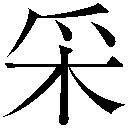

| 突撃彗少女マリア (ガガガ文庫) | |
| 吉田親司 | |
| (2016) | |
小学館ｅＢｏｏｋｓ
突撃彗少女マリア
吉田親司
イラスト 連

栃の木が折れる、音がした。
それは揚力が失われた証し。
次に風を切断する音がした。
それは速度が殺された兆し。
最後に絹を裂く音を聞いた。
それは墜落が始まった印。
早合点だと言われればそれまでかも知れない。空耳だと忠告してもらえれば喜んでうなずく。悲観主義が呼び起こした誤解だと太鼓判を押してくれるのなら、夏期の期末手当はともかく、勤勉手当くらいなら全額差し出したっていい。
蓮蛇涼香は本気でそう思っていた。
だが、しかし──。
それは空耳でも錯覚でも誤解でもなかった。
インカムの向こうから連射気味に轟いた音声信号は、半ば覚悟していた悲劇の第一歩だった。それを実証する有意信号がすぐに続く。
「教ぉおぉ官ぁあぁん！ こちら〈ポット・ファミリー〉四番機、棚橋美也子二飛曹です！ 本隊は水中からの奇襲を受け、一番機から三番機まで一瞬で撃破されました！」
ありえない。涼香は反射的にそう考えた。
（......第五飛行小隊〈ポット・ファミリー〉は粒揃いだ。あっさり撃破される可能性は薄い。そもそも私はもう教官ではないんだ。第二突撃飛行旅団の副司令なんだ。棚橋二飛曹はまだ訓練生気分が抜けていないみたい）
そう言ってやりたかったが、寸前で思いとどまった。状況より格式ばかり重んじる間抜けな官僚的指揮官として記憶に残りたくはない。涼香は疑問を心の隙間にねじ込み、現状分析に注力した。
おかしい。先発斥候隊として緊急発進させた〈ポット・ファミリー〉は高度六〇〇メートルを確保していたはず。そこまで攻撃の魔手を伸ばせる〝海獣〟は確認されていないのに。また新型なの？
正解に急接近するアイディアだと思ったが、これはちょっと考え難い。
ここ三年もの間、南溟から出現した海獣は既存のタイプばかり。せいぜい海中を潜り、波間を漂い、沿岸都市を破壊しまくるのが関の山。対空能力に秀でたタイプなど皆無だったではないか。
横須賀の自衛軍戦略本部も、沖縄の嘉手納防空根拠地も、硫黄島の前線戦略要塞も、特別防衛レベルの引き上げを指示してはいない。新型登場という異常事態が勃発すれば必ず警報が発動されるはず。連中は間抜けでもなければ官僚主義に染まってもいない。日本は平和ボケなどとは無縁の世界なのだから。
極東に位置する弓形の列島は夏から秋にかけて海獣の脅威に曝される。だからこそ脅威対象の動向には他国より敏感となっている。出現予測精度も天気予報を遙かに上回るレベルだ。長年の努力と予算投下が実った成果だった。
（......だからこそ一発でキャッチできた。この第29号を。出現のタイミングから進撃コースまで完璧な精度で割り出せたのは凄いの一言。けれども栄光は過去の話になりそう。いちばん肝心な敵戦力の分析に失敗するなんて。我々が海獣対策を強化するのと正比例して連中も進化を続けている。つまり私は歴史と怨敵が激変しつつある現場に出くわしたわけか......）
涼香が自虐めいた思いを抱いた直後、耳元から棚橋二飛曹の叫びが伝わった。
「私一人ではもはや任務達成は不可能です！ どうか撤退の許......」
ざりっ。鼓膜を紙ヤスリで引っかかれたかと思った。
唐突に、無機質な数字や味気ないグラフが分割表示されていた天井のメインスクリーンが、集合画面に切り替わった。
「映像デジタライズ処理完了！ 出ます！」
情報管制セカンドオペレーターが叫んだ。
彼女は野田佐津美少尉。二週間前に配属されたばかりのルーキーである。
野田少尉の甲高い声が戦闘情報センターに鳴り渡ると同時に、大迫力のリアルタイム映像が流れ始めた。最初の数秒こそフレーム落ちの激しいカクカクした画像だったが、やがて滑らかな動画に移行した。何が映っているかははっきりわかる。
それは現実であり悲劇であり地獄であった。
蓮蛇涼香が手塩にかけて育てた〝グラビティ・マスターズ〟のメンバーが、重力の征服に失敗し、無惨に落下していく場面だ。
女性ばかりで固められていたＣＩＣスタッフの間から、黄色い悲鳴があがった。
許されるのならば涼香だって叫びたかった。〈ポット・ファミリー〉の少女たちは全員よく知っている。なにしろ涼香自身が教官となって鍛え上げたのだから。
先頭の分隊長小坂少尉は成人式をすませたというのにまだ人参とピーマンが苦手で、その補佐にあたる叢神准尉は俸給アップが期待できる彗飛行教官への転身を狙う乙女で、三番機の冨岡一飛曹は実家の醬油屋を継げと親からやかましく言われており、殿の棚橋二飛曹は再来月の除隊と同時に結婚する予定になっていた。
まだきちんと飛行可能であった現実は、棚橋が清い体だったことを意味している。彼女は仲間からさんざん冷やかされたものだ。
去年九月に出現した第28号〝もののけ鯛〟を撃破したときも、第五飛行小隊〈ポット・ファミリー〉は先鋒として索敵に従事し、処女弾を頭部に叩き込むことに成功していた。
経験と実績を積んだ精鋭部隊なのだ。
それが数秒で墜とされた。
瞬時に決着がつくのが大空の運命とはいえ、あまりに残酷すぎる光景だった。しかし涼香は奥歯を食い縛り、平常心をキープしようと頑張った。
「うろたえるな！」
涼香は若すぎるＣＩＣメンバーを一喝した。少女と称していい部下に対するショック療法でもあり、自らに活を入れるためでもあった。
状況はまだ最悪ではないのだ。希望はある。それがメインパネルに──。
現われた。朝焼けを背景に白い花が四つ咲いた。
それは落下傘が開花した印。重力との死闘に敗れた部下たちが空気抵抗を友として、とりあえずの安泰をゲットした物証であった。
涼香は少しだけ安堵した。これであの娘たちは助かる。数時間は海水浴をしてもらうけれど、後で救助すればいい。この恒久浮遊要塞〈飛鳥〉が墜ちることはありえないのだから。
甘かった。
航空自衛軍中佐である蓮蛇涼香は、数分後にそれを思い知ることになる......。
海獣とは、その名のとおり海棲の暴獣である。
色も形も多種多様であり、特徴を一言で表わすのは難しいが、いくつか共通項目はある。
一つ。人間を目の敵にしている。
二つ。異様なまでに打たれ強い。
三つ。死骸は食用に適する。
中でも二番目の「打たれ強さ」は尋常ではなかった。装甲板にえられる皮膚を貫くのはあらゆる火砲をもってしても不可能に近い。
昆虫同様、外骨格生命体ではないかとする意見もあったが、真相解明には至っていない。海獣は活動停止と同時に皮膚を萎縮させてしまうため、強固なままのサンプル確保には成功していないのが実情だ。そのため有効な対抗兵器の開発も遅々として進んでいない。
唯一の例外は熱核反応弾だった。
八年前に惹起したいわゆる「東海危機」において、岐阜県に上陸を許した第３号〝地獄の伊勢海老〟を仕留めるため強行された熱核反応弾乱射モード──通称〝名古屋撃ち〟で、その実用性は証明されていた。
だが代償が洒落にならなかった。東海地方の大部分は無人の曠野と化し、現在に至るも復興は未完のままだ。あのまま〝地獄の伊勢海老〟に暴れさせていたほうが被害は少なかったのではなかったか。そんな愚痴まで聞こえる始末。自衛軍への風当たりは強くなる一方だった。
それを払拭するため、より優雅かつ実用的な対抗手段が必要とされた。
蓮蛇涼香が率いる戦闘単位こそ、海獣退治の使命を帯びた専門部隊だったのだ......。
「投下無線浮標に感あり！ 何かが急速に浮上してきます！」
「海面まであと三〇メートルを切りました！」
「出ますっ！」
赤だった。
荒れた群青色の海面を断ち割り、巨軀を顕わにした海獣第29号は、赤い肌を持つ軟体生物であった。
巨大な楕円形の頭。ぬめぬめした八本の触手。その端々に二列ずつ装備された吸盤。
「蛸だ！」
野田少尉が叫んだとおり、それは頭足類に属する化け物だった。ただし全長五〇メートルという図体を無視すればの話であるが。
十年前から襲来するようになった人類の天敵──その29番目は、欧米で〝悪魔の魚〟と蔑まれている生物の拡大強化版だった。
悪夢そのものの情景だが、それは受け入れるしかない現実。
悠然と海面を北上していく敵を睨みながら、現場指揮官は冷徹に呟いた。
「人間は我こそが万物の霊長だとうそぶいてきたけれど、それを再確認しなきゃいけない時期に来ているのかも。進化の極みに位置する生命体は我々か、それとも奴なのか......」
あまりにも客観的すぎる語り口に、ＣＩＣの空気は急速に醒めていく。
それも計算のうちだった。意気消沈する者にパワーをチャージするには、いったん落としてから上げるのが最善なのである。涼香は背筋を伸ばし直してから命令した。
「もちろん我々よ！ 第一小隊〈ケトル・ファミリー〉、第二小隊〈ディッシュ・ファミリー〉、第三小隊〈スプーン・ファミリー〉、第四小隊〈ナイフ・ファミリー〉に命令。全機即時発進態勢！」
涼香の台詞は絶賛と喝をもって迎えられた。士気の高揚をなし遂げた涼香は、第一目撃者としての権利を行使したのであった。
「これ以後、脅威対象を〝マイティ・テンタクルズ〟と呼称します。北斎漫画から抜け出てきたタコ野郎を討ち滅ぼすのです！」
恒久浮遊要塞〈飛鳥〉──それは巨大な飛行船だ。
といっても旧来の葉巻型のモノを連想してもらっては困る。
ガス囊は長方形の外殻に収められている。それは軽くて頑丈なネオチタンの骨格で強化されており、同一のものが並列に二つ実装されていた。外殻は防弾と難燃を兼ね備えた甲殻構造仕様となっており、ガス囊は二重構造。外層はヘリウムガス、そして内部には水素が詰め込まれている。乗員が生活するキャビンはその中央に固定されていた。
つまりは丸みを排除した双胴飛行船だ。超硬式飛行船と呼ばれる〈飛鳥〉こそ、航空自衛軍が送り出した大空の砦だった。
全長九九メートル。全幅六六メートル。
縦横無尽の運動性能を誇るグラビティ・マスターズの空中基地として運用されている以上、母艦には機動力は不要だった。それよりも、燃料と消耗品の補充を続ければ半永久的に浮いていられるという滞空時間こそが強みであり、また武器でもあった。
最大の特徴は外殻の天蓋にある。褐色の太陽電池パネルがびっしり埋め込まれたそこは、単なる発電装備ではなく、滑走路だった。
離着陸するのは補給資材を積んだ専用航空機だけではない。グラビティ・マスターズの少女たちもそこから飛翔し、天敵に痛撃を与えるのだ──。
「教官！ こちら第一小隊〈ケトル・ファミリー〉隊長溝本伸江中尉！ 全機、出撃準備完了しました。いつでもどうぞ！」
溝本中尉は第一小隊のリーダーであると同時に、〈飛鳥〉に所属する『台所戦闘飛行団』の戦闘隊長をも兼任している。蓮蛇涼香も頼りになる部下という評価を下していた。
涼香はインカムに大声で語りかける。
「判りました。ではカウントダウンは三〇秒前から開始。交戦規定は自由。戦術は前線指揮官の判断に一任しますが、定石どおり敵の頭を集中攻撃すること。いいわね？」
「了解。屈伸運動も終わりました。今なら一〇〇メートルを一〇秒前半で走れます。飛翔後の発揮目標速力は時速七二〇キロを予定！」
それはちょっと無理だろう。張り切りすぎているのはいいが、過信は禁物。涼香は一抹の不安を覚えたのだった。
たしかに涼香が全国からスカウトしてきただけのことはあり、グラビティ・マスターズのメンバーは俊足ランナーが揃っている。全員が一〇〇メートル走で一二秒を切れる韋駄天少女ばかりだ。
しかも〈飛鳥〉は風上に向かって飛行している。屋上の滑走路で船尾に向かって走れば、追い風が存分に利用できる。うまくすれば一一秒台前半も夢ではない。
彗飛行は初速がすべて。
もし溝本が言ったように一〇秒台を確保できれば最高速度は時速七〇〇キロを超える。
高空からの落下も勘定に入れれば、瞬間的には音速突破さえ可能であろう。
だがそれでは編隊が組めない。一一秒ジャストと一〇秒九〇。このゼロコンマ一秒の間には見えない怪物が住んでいる。最終速度を一〇〇キロもアップダウンさせる悪魔が。
それを指摘しようかとも思った涼香だが、出撃前に小言を聞かされても面白くないだろう。責任者なら部下を信用しなければ。
「うまく風を捕まえることを祈っているわ。魔女としての意地を見せてちょうだい。彗は常に重力に抗う羽。それを忘れないで」
「了解！ 第一小隊〈ケトル・ファミリー〉一番機、出ます！」
反射的に涼香はメインパネルを見上げた。画面の一角に頭上の滑走路が映っている。
整列しているのは、彗にまたがった一六人の少女たちだった。
そう。彗だ。庭や床を掃くのに用いられる掃除用具だ。
ただし市販されているそんじょそこらの家庭用とは一味違う。
外見上は棕櫚長柄の逸品であるが、栃の木で作られた柄の内部はきれいに刳り貫かれ、直径一二・五ミリの武器が埋め込まれていた。
それは物騒な凶器──対海獣専用の有翼安定徹甲弾さえ連射可能な機関砲なのだ。
手で握りしめる柄の部分の真下には砲弾がぎっしり詰まったタンクバッグが、そしてブラシの前には、発射管制システムが納められた楕円形のモノロックケースが、それぞれ増設されており、威圧感を周囲に発散している。
日常用品としての普遍性と、武器としての猛々しさがギリギリの線で調和を示しているのは誰にでもわかるだろう。まさしく〝軍用彗〟だった。
当然、大腿部でそれを挟む少女たちも軍人である。その存在が常識外なら、纏う装束もまた常識外だった。
頭部にはヘルメットさえ装着していない。上着こそ防寒と防弾を考慮したケブラー繊維のごついジャケットだが、下半身はきわどいラインのミニスカート。黒のニーソックスで白い肌の絶対領域が強調されている。
魔女と言い切るにはあまりにも可憐な乙女たちであった。
船首側に背を向け、船首側に居並ぶ彼女たちのうち、先頭に位置する一人が駆け始めた。
速い。本当に速い。世が世なら陸上競技で賞賛を集めていたであろう俊足だ。
助走はすぐ終わった。両足と穂先が太陽電池をこすっていたかと思うと──。
浮いた。
彗にまたがった少女──溝本中尉は空中に浮いた。
スピードも凄まじい。さすがに一〇〇メートル一〇秒台は無理だったが、一一秒ジャストの勢いは確保できた。時速換算では三二・七三キロにも達する。この勢いをもってすれば、空中での最終速度は六二一・八二キロにも達する。
彗飛行では、地上で確保した運動エネルギーがそのまま空中速度を決定する。一〇秒台で『２００』をやっと超える〝魔法の係数〟に抗える彗はない。カタパルトか何かで射出してやれば、その一〇倍のスピードを出すのも可能だが、彗の神様はインチキを見逃してくれるほど甘くない。あくまでも人力でなければ空中速度は出ないのだ。
「一番機、離陸成功。後続が発進態勢に入りました！」
野田少尉の報告が響くと同時に画面が動いた。隊長機の離陸を確認した僚機は、連鎖反応を起こしたかのように次々と滑走路を駆け、空中に飛び出していく。
ややあってＣＩＣに報告が響く。溝本中尉の声だ。
「第二突撃飛行旅団第一中隊『キッチン・スコードロン』、全機発進成功！」
すぐに涼香も返した。
「所要時間は四二秒。訓練より七秒も遅れているわ。帰投後は全員再訓練！」
「了解！ 必ず全機生還して、再訓練を受けます！」
無事に〈飛鳥〉を発進したグラビティ・マスターズの一六機の彗娘たちは、緩やかな螺旋を描きながら、〝マイティ・テンタクルズ〟へと進撃を開始する。
再びＣＩＣに野田少尉の報告が響いた。
「全機、緩衝防壁の展開を確認しました！」
一安心する涼香だった。これで不安材料は消えた。緩衝防壁さえ機能すれば、部下たちがあっさりやられる危険性は薄い。
それは未知なる鎧。時速二〇〇キロを突破した褒美として展開される波動フィールド。
高速で空を駆ければ、風圧は生身の人間には耐えきれないレベルに達する。もし何の対策もなければ下手をすると首の骨が折れてしまう。
それを防ぐ仕掛けが緩衝防壁なのだ。
空飛ぶ彗と同様、それは人類にいきなり与えられた理解不能な技術であり、発動するメカニズムの原理は糸口すらつかめていない。
ただし飛翔中、彗とＧＭパイロット（彗で空を飛ぶ少女たちは正式にはそう呼ばれる）を包むような格好で繭状の磁場が出現しており、それが風圧を逆流もしくは反発させ、エアポケットのような空気の被膜を形成しているらしい。呼吸をも可能とし、ある程度の防弾効果さえ期待できる楯を......。
「こちら溝本機。標的を肉眼で確認。マイティ・テンタクルズは目測五〇ノット以上で北北西へむかって進撃中！」
攻撃隊長は眼下のターゲットへと接近しつつ、音声通信を送ってきた。インカムには機動中継用の携帯カメラもあるが、実戦ではカラフルな砂嵐を映し出すのが精一杯だ。
今も昔も、現場でしか嗅ぎ取れない匂いは確実に存在する。だからこそ彼女は前線指揮官に権限を委託していたのだった。
「把握した。ただちに攻撃に移れ。コンバット・フォーメーションは一任する」
すぐさま溝本中尉は練り上げていたらしいプランを口にした。
「了解。全小隊散りなさい！ 〈ケトル・ファミリー〉は北、〈ディッシュ・ファミリー〉は南、〈スプーン・ファミリー〉は東、〈ナイフ・ファミリー〉は西へ。タイムラグを確保しつつ、全方位攻撃を強行！ 目標は敵の頭部！」
その判断は間違ってる。そう直感する涼香だった。
火力とは常に集中しなければならない。対海獣戦闘の基本はそれだ。加えて相手はタコ。四方よりの拡散射撃よりは一点収束攻撃が功を奏すはずなのに。
アドバイスを送りたいところだが、すでに「キッチン・スコードロン」のメンバーは攻撃態勢に入っている。敵を目前にしての命令変更は、負の結果しかもたらさない。それに溝本中尉は頭を狙えと厳命した。脳さえ破壊すれば海獣とて活動を停止する。今は化学麻痺弾頭が埋め込まれた有翼安定徹甲弾の破壊力を信じるしかない。
四機で構成された四つの小隊は、溝本戦闘隊長の指示に従い、連なりながら四方に散った。
だが──突撃を開始した各小隊の鉾先は、あってはならない方向を向いている。それを見切った蓮蛇中佐は、あえて声を荒げたのだった。
「全機に告ぐ。第一波掃討終了と同時に第二波を強行！ 再攻撃からは目標を変更。脚部との付け根に位置する目玉を狙いなさい！」
涼香が言い終わると同時に、海を進撃する大ダコに閃光が走った。独特のオレンジ色の弾痕ではっきりわかる。それは直撃弾が炸裂した証明だった。
情報管制セカンドオペレーターの野田少尉が現実をナレーションする。
「マイティ・テンタクルズに命中弾！ しかし速度に変化なし。進撃を続けています！」
戦果はゼロ。そう思ったほうがいい。涼香は予想外に醒めている自分に違和感を抱きながら、冷徹に言い放った。
「そうでしょう。攻撃隊が狙ったのは頭ではないの。あれは胴体なのよ。蛸入道は顔に見える部分に内臓が詰まっているの。頭はもっと下にあるわ。ずばり眼球の側。刺身を作ったことがあればわかるはずだけれど、溝本中尉には経験がなかったようね。大和撫子なら、もっと台所に立ちなさい。料理と洗濯と炊事は良妻賢母たらんとする者の基礎よ！」
涼香の台詞が終わると同時に、海面から漆黒の棒が宙へと駆け上がった。
太くて長いそれは、青空をキャンバスにして自由自在に動き回った。尻尾に金釘を打たれて猛り狂った蛇か、水圧で制御不能になったホースがのたくっているような有様だった。
「逃げてぇぇぇ！」
野田少尉が反射的に叫ぶ。だが、遅かった。第29号の反撃が始まったのだ。
屹立した黒い棒は墨汁だった。正確には海水と墨が絶妙のバランスでブレンドされた液体だ。タコやイカが主力兵器とする恐るべき凶器なのだ。
それが想定外の水圧で噴き上げられた。針路を塞がれたグラビティ・マスターズの彗娘たちは、回避運動すらままならず、盛大に鼻っ面を叩かれたのだった。
味方の犠牲でやっと敵の攻撃を悟った僚機は、どうにか高度を上げて間合いを取る。だが墨の如意棒は射程距離など意に介さぬといった調子で追いかけてくる。
さらに一機が絡め取られた。背後から突き上げてきた海水の柱は、発生した緩衝防壁の守備力を超えていた。その彗はバランスを崩し、くるくると回転しながら墜ちてゆく。
恒久浮遊要塞〈飛鳥〉のキャビンは悲鳴のみが満ちる空間となった。ＣＩＣのメインスクリーンは、揚力を失った少女たちが墜落していく場面を無情にも映し出していたのである。
恐慌状態を起こしかけている部下たちを叱咤するため、涼香は威厳を込めて叫ぶ。
「報告しなさい！ 何機食われたの！」
「連絡途絶五機！ 第一小隊〈ケトル・ファミリー〉全滅！ 第二小隊隊長国観中尉機も応答ありません......」
「落下傘は？」
「四つ確認できます！」
思わず地団駄を踏む涼香だった。なんてこと。一つ足りないじゃない！
「あっ。もう一つ落下傘を確認！」
絶望と安堵が交互にやってきた。一息つきたいが、もうそんな状況ではない。涼香は立て板に水を流すような勢いで命じた。
「第二中隊『ランドリー・スコードロン』に命令。緊急救命装備にて即時出撃準備。ＣＩＣからの命令を待つ必要はありません。準備できしだい発進なさい！」
第二中隊は実戦経験が薄い。戦闘はまだ無理だ。しかしバックアップとしての人命救助ならみっちり特訓をやっている。今は彼女たちの技倆に期待するしかない。
涼香は指揮官として、未熟な部隊を実戦に投げ込む度胸はなかった。実のところ、戦闘に使える者はごく少数なのだ。精鋭を第一中隊「キッチン・スコードロン」に、二線級を第二中隊「ランドリー・スコードロン」に集中した結果、残りは訓練生ばかりになってしまった。
しわ寄せがきたのは第三中隊「クリーニング・スコードロン」と第四中隊「ソーイング・スコードロン」だ。この部隊は帳簿上ではいちおう戦力にカウントされているが、あまりに練度が低すぎたため、涼香は〈飛鳥〉に同乗さえ許していなかった。
ここにきて駒が足りないとは。どんな下手くそでも連れてくるべきだった。弾よけくらいの役目なら果たせただろうに。
（......最大の問題は？ そう、指揮官を失ったこと。溝本と国観中尉が離脱した以上、残りの娘で中隊を統率できる者はいない。リーダーなしで連係プレイは無理。だからといって、個人ベースの攻撃をさせるわけにもいかない。
こんなときに妹がいてくれたら。まったく高校なんか行かせるんじゃなかった。彗娘では百年に一度の逸材でありながら、なんで家政科なんかに行くのよ！）
そうは思ったけれども、時間の針を逆回しする技術を持っていない以上、現有戦力で可能なことをやるしかない。そう決意した涼香は威厳を込めてこう命じたのだった。
「航海長我那覇少佐！ 高度一〇〇〇メートルまで落としなさい。敵の目を〈飛鳥〉に惹き付けます。その隙に編隊を組み直し、再攻撃の準備をさせるの！」
「ですけど」野田少尉が不安げな声で聞き返す。「戦闘隊長は誰が務めるのでしょうか？」
涼香は、背後の壁にずらりと固定されている彗のうち、いちばん左の碧色の一本を摑み取ると、こう宣言したのだった。
「私が討って出ます！ 海獣退治の使命をまっとうするために！」
この二年間、涼香は指揮官としての役目に没頭しており、実弾射撃からは遠ざかっている。けれども定期的に訓練は続けていた。腕は落ちていないはず。何より手元には頼りになる相棒がいる。使い込んだ彗が。
その名は〝紺碧の風〟──海獣の第13号〝汚れたウナギ〟をハイパー・ナパームで蒲焼きにした初陣から、延々と愛用している逸品だ。
ＣＩＣに常備されている彗は戦闘用ではなく脱出のための装備だが、涼香はこんなこともあろうかと常に実弾を装備していたのであった。これさえあれば鬼に金棒。
「〈飛鳥〉の指揮権は一時的に航海長に委ねます。相手の射程がわかりませんが、過去の戦例から考えて高度一〇〇〇メートルまで海水を噴き上げるような力はないはず。周辺を遊弋しながら、隙あらば支援砲火を」
言い終えることはできなかった。
経験したことのないレベルの衝撃が〈飛鳥〉全艦を揺さぶったのだ。
過去に答えを求めた涼香であったが、それは間違いだった。マイティ・テンタクルズは高度一二〇〇メートルに位置していた〈飛鳥〉に直撃弾を吐きかけてきたのだった。
墨だった。
艦対空ミサイルの至近弾でさえ保つと豪語されていた装甲防弾の窓があっけなく砕け散った。黄色い悲鳴と冷たい疾風がＣＩＣを駆け抜けていく。
「さ、左舷破損！ 浮力、急速に減少中です！」
持ち場にしがみついている野田少尉が必死で叫んだが、報告の意味は薄かった。フネ全体が傾いていくのが、誰にでもはっきり自覚できたからだ。
涼香は即断した。
現状維持は無理。座視すれば〈飛鳥〉は墜落する。同型の〈斑鳩〉が次世代装備の改装である現在、ここで〈飛鳥〉を失うわけにはいかない。
「現時点をもってＣＩＣを放棄。最大の重量物を捨てれば浮力は稼げるわ。キャビン投下用意。セットカウントは三十秒」
非常事態であるのは誰にもわかったようだ。訓練どおり、投棄システムが稼働を開始した。メインスクリーンいっぱいに『あと30秒』の数字が躍り、それが機械的に減っていく。
「総員、飛行態勢で脱出しなさい！ そこの窓からよ。さあ、急いで急いで！」
そこに詰めていた七名の少女たちは次々とマイ彗に手を伸ばした。
戦闘中のキャビンは防火・防煙対策として、全隔壁が閉鎖されている。開けるには数分を要する。ここは手順どおり、空へ逃げるのが利口だ。ＣＩＣメンバーとはいえ、彼女たちもまたグラビティ・マスターズの一員なのだから。
「いい？ 飛び出したら上昇して外殻天蓋の滑走路へ急ぐの。以後は第二キャビンから総合指揮を執るように。我那覇少佐、以後は任せるわ。私？ 戦場へ向かいます！」
ＣＩＣメンバーたちは彗にまたがり、数歩だけ助走して勢いをつけ、砕かれた窓から飛び出していく。
初速が遅すぎるため、飛行速度は時速二〇キロ程度。しかし退避ならば充分役に立つ。彼女たちは順繰りに脱出し、残るは涼香と野田佐津美少尉のみとなった。
おかしい。下っ端のセカンドオペレーターなど、真っ先に逃げてしかるべきなのに。
訝しく思う涼香だったが、野田少尉は非武装の彗を手にしたまま、飛び出そうとしない。まるでトイレを我慢しているかのようにもじもじするだけだ。
「何をしている。急ぎなさい。私は責任者として最後に逃げます。あなたが飛ばない限り、私も脱出できないのよ」
相手は顔を真っ赤にしたまま、かろうじてこうつぶやいた。
「あの......私......もう飛べないんです......」
その一言で涼香はすべてを悟った。
「いつやったの？」
「前の非番のとき。彼が結婚しようって言ってくれて、それで......」
彗少女は、別名〝彗処女〟とも呼ばれているように、バージンでなければ飛行能力を全損するという大原則がある。彗の神様は目溢しをしてくれるほど甘くないのだ。
彗で飛べなくなった娘はグラビティ・マスターズを追放されるのが慣わしだった。
大概は素直に自己申告し、表面上は円満のうちに退任が決まるものだが、こんな状況でカムアウトするとは。
しかし、人生を楽しんだ野田少尉を咎めても戦況は好転しない。涼香は〝紺碧の風〟の前方に腰を動かしながら、大声で怒鳴った。
「乗れ！」
彗の二人乗りにメリットは全然ない。ましてや片方は今や単なる重量物である。スピードと旋回性能は極端に鈍ってしまう。
それを覚悟の上で涼香は野田少尉を後部に乗せた。勢いに押された少尉も、慌てて彗の尾部にしがみつく。涼香はいったん後退りし、背を反らせるだけ反らすと、思い切りＣＩＣの床を蹴飛ばした。
野田少尉がつま先で同調すると、二人は四歩目で窓枠にまで達した。ブロック状に崩れたガラスを踵で踏み潰し、空に踊る。
のちに分析できた遠隔測定の記録によれば、離昇時の速度は時速二七・九一キロ。
つまり一〇〇メートル換算では一二・九秒。
素人とプロを冷徹に分断する〝一二・五秒の壁〟を超えることはできなかった。飛行速度は時速四五キロ前後。落下の加速が加わるが、あまり欲張ると引き起こしができない。後部に慣れない五〇キロ弱の荷物を載せている以上、無茶な加速は無理だった。
それでもよかった。涼香は低速のほうが狙われ難い現実を知っていた。遅いなら遅いなりの闘い方があるのだ。
背後で轟音がした。爆発ボルトが吹き飛んだノイズに違いない。〈飛鳥〉からキャビンが切り離されたのだ。無人となったＣＩＣは、引力に摑まれ、海面へと落下していく。
それを横目で睨んだ涼香は、じわじわ高度を下げながらインカムに怒鳴る。
「残存する『キッチン・スコードロン』の各機へ。一撃離脱戦法は現時点で終了。これより肉薄集中射撃に移る。弾種を液状焼夷破砕弾に切り替えなさい！ 標的は奴の目玉！」
弱点があるとしたらそこだ。
まだ見ぬ新種の海獣への対抗策──それは数限りなくシミュレーションされていた。
推論だけに重きを置くのは危険だが、海獣が海洋生物の延長線上に位置するモンスターである限り、研究は無意味とはならない。
涼香にもわかっていた。マイティ・テンタクルズがここまで器用に墨を打ち出せるのは、優れた視力の賜物だと。
タコの眼球は哺乳類のそれに極めて近い。その瞳には瞼さえある。視細胞が眼の前面に指向されているため、視界に盲点はないとされている。どこに逃げようと、全周囲三六〇度のアイボール・センサーをごまかすのは不可能に近い。
ならばそれを潰すのが先決。相手の守備力が堅いのはわかっている。だからこそ超至近距離にまで間合いを詰め、顔を焼き尽くすしかない。
しかし──まだ飛行可能な「キッチン・スコードロン」の面々は、僚機が墜ちた現実に恐怖心を煽られたのか、帰るべき〈飛鳥〉が被弾して意気消沈したのか、涼香が考えているような距離にまで接近しようとはしない。
相対距離八〇メートルまで迫ったかと思うと、そこで申し訳ていどに液状焼夷破砕弾を射出し、いち早く退避に移ってしまうのだ。
マイティ・テンタクルズに実害はない。ほんの少しだけ火傷をしただけだ。墨の噴射は一時停止したようだが、このまま潜られたのでは厄介である。
歯がゆい場面に、涼香は吠えた。
「ええい！ 私が手本を見せてやる！」
彼女は〝紺碧の風〟の柄を海面へと向けた。降下角は八〇度。ほとんど墜落状態だ。
この状態では海上寸前での引き起こしは絶対不可能。そう理解できたのだろう。野田少尉の悲鳴が後ろから響く。しかし涼香はお構いなしに速度を上げ、高度を下げ続けた。
やがて眼前が薄いオレンジに染まってきた。それは緩衝防壁が展開した兆し。つまりは時速二〇〇キロを突破したことになる。
涼香は歯を食いしばり、そのまま海中へと突っ込んだ。
あまり知られていない現実だが、緩衝防壁は水中でも効力を保持できる。息も可能だ。もちろん速度が殺されるのと同時に消え失せるが、しばらくなら大丈夫。
涼香は深度二メートルを魚雷の勢いで疾駆し、再び彗を引いた。途端に上昇が始まる。海面上に顔を出すと同時にジャンプ。すると──。
目の前にマイティ・テンタクルズの口が見えた。
いや、違う。口は体の裏、つまり八本の足が集合する部分に開いている。口のように見えるのは漏斗と呼ばれる総合排泄器官だ。
逃走の際にはジェットポンプとして海水を吐き出し、敵には煙幕としての墨を噴射する。タコの種類によっては糞尿すらそこから吐き出される。
そうしたスカトロジックな攻撃を受けた嫌な事実は部下の少女たちには黙っていたほうがいいだろう。女の子はいずれは汚れ、汚される運命なのだから。
そうだ。まずこれを破壊せねば。本来は目玉を狙いたかったが、もう贅沢は言えない。体内で炸裂すれば、結果は同じはず。
恐るべき敵兵器に向かい、彗の軸線をあわせる。大ダコまでの距離は一〇メートルを切っている。狙うは胴体と足の付け根に位置する漏斗のみ。
そのときだった。相手が、ぐるりと、左目を一回転させた。
瞳孔のない瞳が涼香を捉えた。瞬間だが、たしかに目線が交錯した。
「ごめんね。あなたに恨みはないの。でも死んでちょうだい」
一瞬だけ漏斗が大きく窪んだ。それは発射態勢に移行した印。相手も安易に滅するのは望んでいないようだ。
しかし、涼香が一手早かった。〝紺碧の風〟の筒先から飛び出した液状焼夷破砕弾は、狙い違わずに漏斗の中へ吸い込まれ、そこで炸裂した。
装甲を誇る海獣とはいえ、内部は脆い。
煉瓦の色を連想させる茶褐色の炎が大ダコの頭部に走った。驚いたことに目玉が飛び出た。胎内からの爆圧に耐えきれなかったのだ。
すぐ劫火が横殴りにやってきた。涼香はそれを読み切り、あえて熱波を追い風にして高度を稼ぐ。恐る恐る眼下を見ると、畏怖すべき強敵が断末魔を迎えているところであった。
八本の巨大な触手が水飛沫をあげながらのたうち回っている。頭に思える胴体の中央付近まで炎が駆け上がっていた。生きながら火葬に処されているような案配だ。
相手が手傷を負ったのを察知したのか、「キッチン・スコードロン」の残存する彗少女たちが再攻撃を開始した。あとは任せよう。手負いの獣だが、とどめを刺すのは容易なはず。
ならば帰ろう。恒久浮遊要塞へと。
天を振り仰ぐと、雲間に〈飛鳥〉が見えた。傾いてはいるが、軌道は安定している。高度を上げ始めた涼香へと後部から声が響いた。
「教官......あの、すみませんでした」
涙まじりの野田佐津美少尉に向かい、航空自衛軍中佐はこう返したのだった。
「なにも謝ることはありません。あなたは国家と国民の負託よりも、女としての幸せを優先させた。ただそれだけの話。これからは自衛軍を離れ、母としての道を歩みなさい......」
《......絶対的権力者への帰依。
それは楽だけど自由じゃない。逆らうという術を失った者に未来はないんだ。
でも、僕にはその道しかなかった。
言われるままに進み、言われるままに止まる。
気がつけばできあがっていたのは人間の皮を被ったロボット。
僕のコントローラーを握っているのはママ。
ママこそ絶対的権力者。
僕は命じられるまま、自分を偽り、身分を偽り、性別さえ偽った
犯せと言われれば犯し、殺せと言われれば殺してきた。言われるがままに。
でもご褒美はない。
生存を許される。それが褒美。ママはそう言うだけ。
僕はお金はいらない。恋人も愛人もセックスフレンドも新発売のαフォーンもいらない。
欲しいのは感謝の言葉だけ。
少しは褒めてよ。ママ。
僕はお言いつけを全部守っているんだから。
これからも僕を手駒として使う気なら、もっともっと褒めてよ。
疲れることを犯罪みたいに言わないでよ。
世界中の人がママみたいにエネルギッシュじゃないんだから。
現代ほど若者が疲れ切っている時代もないんだから。
ママは権力者。問題を解決するのが仕事。
そう思っていた頃が僕にもあったけれど、ママは問題を拡張してばかりじゃないか。
ママ。お陰で僕も言い訳がうまくなってしまったよ......》
『ＦＬＲ』──第３部21節【若き殺戮者の悩み（中）】了
次回購読にはダウンロード後、２時間のタイムラグが必要です
本作品の文責と著作権は版権管理者〝スウォーズ草薙〟および
投稿サイト〈ケイタリング・ストーリーズ〉にあります
著者との話し合いにより、内容を変更しないかぎり再配布可
いまいち。
今日の更新はハズレ。これなら更新を待って一括ダウンロードしたほうが接続料が節約できたかな。やっぱり《ファイナル・ラブ・レボリューション》は暴力シーンかベッドシーンがないと燃えないし萌えないわね。
ざりっ。
蓮蛇摩里愛はβフォーンのエンターキィを操作し、タスクを切り替えた。
ユビキタスを本格的に取り入れた新型αフォーンなら、まばたきや手首のひねりだけで操作できるのだが、摩里愛が持っているのはボタンを押さなきゃ動かない旧型の携帯だった。
ワンセグになったエンターテインメント端末は、二十四時間ニュースチャンネルを映し出した。化粧の濃い女性アナウンサーがアップになる。
『......本日午前十時。日本女性枢軸連盟こと女枢連は、〝彗狩り〟を熱望する五〇〇万人分の署名を集め、これを内閣府に提出したと発表しました。
知られているとおり、これは彗の全面禁止を求める法案です。女枢連は、彗こそ女性蔑視の助長をもたらす元凶であるとみなし、その全面回収と製造中止を求めていますが、あまりにも非現実的な提議に対し、革新野党からも非難の声が聞こえています。
政府与党は、こうした署名に法的な拘束力は存在せず、国会でこれを取り上げる意志のないことを重ねて強調するにとどまりました。
また署名自体を疑問視する声もあります。外国人と思われるサインが多数混入している点や、同一筆跡があまりにも多いことから水増しの噂も飛び交っており、その信憑性は微妙です。
これらの事実を指摘すると、発起人の一人である超弩級女性党の党首帆村敦美女史は次のように語りました。
『......国籍や筆跡といった狭い了見で物事を見てはいけません。私たちは地球市民として振るまう義務があるのです。花のように恥じらうサイレント・マジョリティの意見を汲みあげるためならば手段など構ってはいられません。我が党は次の国政選挙で必ず勝利し、法案提出権を得ると同時に、懸案の〝彗放棄法規法案〟を提議する所存であります......』
次のニュース。本格的台風シーズンの到来を前に、沖縄県慶良間諸島の阿撫島では新型風力発電機の稼動が開始しました。
デザインは自然と調和する四翅タイプ。新素材ブレードの採用で風速八五メートルまで耐えられると関係者は鼻息を荒くしています。この数字が正しければ、どんな大型台風が襲来しても安定した電力供給が見込める予定です。
今回は試験的なものですが、不具合がないと判明すれば全国の過疎地帯や離島に追加設置が認められるでしょう。それでは現地からの中継です。阿撫島の鈴木さぁん！』
ざりっ。
摩里愛は無慈悲にもチャンネルを切り替えた。自動チューニングが始まる。報道番組は好きだけど、日常をわざわざテレビで見ようとは思わない。
摩里愛は波止場に向かうバスに乗っていた。ここは渡嘉敷島。慶良間ではいちばんのサイズを誇る島だった。彼女はそこからさらに沖合に浮かぶ阿撫島へと渡るのだ。
視線を沖合に向ける。五キロ離れた海上に島影が見えた。波打ち際には、要所ごとに大型の扇風機が林立している。
風力発電用の巨大な風車だ。騒音対策が施された羽はブレードと呼ばれ、回転時はまったく無音。直径四九メートルのメッシュ状の羽が音もなく回るのはけっこう不気味である。圧迫感もあるし、風景に調和しているとも思えない。
けれども我慢するしかなかった。なにごとも慣れだし、これで阿撫島も電気には困らないのだから。飛天寮の脱衣所にある乾燥機の使用制限もきっと解除されるだろう。順番待ちで時間切れになり、生乾きの下着で学校に行くという悪夢も昔話になるに違いない。
そんなことを考えていると、携帯がようやく別の動画を映し始めた。
地震の場面だった。
崩れ落ちるビル。逃げ惑う人々。押し寄せる高波。破壊音に悲鳴が覆い被さり、海水という暴力が一切合切を押し流していく。ＣＧを駆使したそれは破壊の美を追求した疑似映像だ。
やがてカメラは今にも倒壊しそうな巨塔の屋上へとズームアップした。その上には大災害のまっただなかだというのにメイクを絶対に忘れない少女と、蚊蜻蛉のように細い手足をした美少年が愁嘆場を演じている──。
「うう......早樹ちゃん。大丈夫？」
「人より自分を心配したらどうなの。ついでにこのビルも心配してあげなさい。もう六本木ヒルズもおしまいだわ」
「うん。長くはもたないね。まさか第三次関東大震災がこんなに早くやってくるなんて。きっと海獣の仕業に違いないよ。ナマズ型の新タイプが東京湾で暴れたんだ」
「原因なんかどうでもいいじゃない。すぐ逃げなきゃ。非常階段は使えない？」
「こんなにビルが傾いているんだ。中に入るのは危険だよ。でも大丈夫。賭はやめないから。六本木ヒルズからフリーダイブすれば僕とつき合ってくれる。その約束だったよね」
「あんたバカじゃないの？ こんな状況でなに言ってるのよ」
「僕がパラシュートで降りれば二人とも助かるじゃないか。早樹ちゃんは彗で逃げて。管理室の中に非常用のが見えたよ。窓から確認したんだ」
「だめよ。大地震の直後じゃない。電子ロックが壊れていて入れないわ。それにね、未経験者がダイブしたら気絶して墜落死よ。パラシュートをこっちに渡して。まずスカイダイビング部リーダーの私が降りて、それから救助を呼んでくるから」
「壊れてたって引っぱたけば直るよ！ 女も機械も！ どんどん傾斜が増しているのはわかるだろう。助けが来るまでビルがもたない」
「だったらパラシュートを貸しなさい！ このままじゃ二人とも死ぬわ。早くっ！」
「まさかとは思うけれど、早樹ちゃん......もう彗に乗れないわけじゃないよね？ そう言えばここ半年、早樹ちゃんが彗で飛んでいるところを見てないけれど」
「............」
「うわぁ！ そうか！ やっぱりそうだ！ こればっかりは引っぱたいても直らない！ 裏切られた。僕は裏切られたんだぁ！ うわぁぁあぁん！」
男の子が地団駄を踏んだ。それが最後の一突きになった。崩落寸前で踏みとどまっていた六本木ヒルズは、一気に傾斜を増していき、やがて鉄骨があっけなく断裂した。
虚栄の塔は重力でサバ折りにされ、あたり一面にガラスの破片を撒き散らしながら、地面へと横倒しになっていく──。
ざりっ。
つまんない。また再放送だ。前に観た邦画じゃない。
タイトルは『戦慄のシー・サーペント２ 日本列島爆沈す！』だったと思う。海獣の脅威を国民に啓蒙するため、自衛軍全面協力のもとに作られたパニック映画だ。
でも、批評はさんざんだった。タイトルに反して日本は爆発も沈没もしなかった。さすがに首都東京は壊滅したけれども、それは夢でしたというトンデモなオチだった。
主役の男の子は仁科智真という人気アイドルらしいが、よく知らない。
イケメンであるのは確かだけど、摩里愛にとってはパニック映画に出ていた情けない男の子でしかなかった。摩里愛は役者の個性と演じたキャラクターを同一視するという子供じみた癖をまだ引きずっていた。
美少年や芸能人に興味がないわけじゃない。でも、別に憧れはなかった。こっちが向こうを好きになっても、向こうがこっちを好きになる可能性は零。手に入らないモノは最初から欲しがらないほうがいい。摩里愛はそう決めている。
βフォーンが次の放送を捕まえた。比類なき硬さを売りにしたニュース番組だった。さっきの局よりも画像は荒っぽい。これじゃ国営放送の名前が泣くだろう。
『......いま入ったニュースです。政府は午前七時三十分、本年度初の海獣第29号を某海域にて捕捉、これを撃滅したとの公式声明を発表しました。
航空自衛軍は、恒久浮遊要塞〈飛鳥〉より戦闘彗飛行隊こと〝グラビティ・マスターズ〟を出撃させ、海獣第29号の抹殺に成功したもようです。
今回の天敵海獣はその外見がタコに酷似している点から〝マイティ・テンタクルズ〟と呼称されています。全長は五〇メートル超。普通の真蛸なら八万匹に相当する図体であるとの未確認情報も届いています。
なお航空自衛軍の損害は軽微だったとされていますが、現場戦闘指揮官である蓮蛇涼香中佐の公式ブログには損傷した〈飛鳥〉の写真がアップロードされており、この点から早くも情報隠蔽の声が漏れ伝わっているようです。
これに対し、熱狂的環境保護団体〝グリーン・アースライト〟は「タコには罪はない」との声明を発表し、軍事力による排除には断固反対するとの立場を......』
「お姉ちゃん！」
ざりざりっ。
摩里愛はエンターキィを乱打していた。近親者の名前を耳にしたとあっては、もう傍観者ではいられない。
ウェブ検索に切り替え、ブックマークを呼び出す。だめだ。重くて全然つながらない。アクセスが集中してサーバーがパンク寸前なのだろう。
仕方がないので定型文を呼び出してメールを打った。
【お姉様へ。生きていたら至急連絡請う。可愛い妹より】
送信してから携帯が電話であったことを改めて思い出し、無駄と知りつつかけてみる。
発信音を二五回鳴らしてから摩里愛はあきらめた。蓮蛇涼香中佐が職務中に私用電話を取ることは、男の子が彗で飛ぶのと同じくらいにありえない。
（......まあ、いいか。私が心配しても仕方ないし、何かあったら航空自衛軍から連絡が来るでしょう。返事がないのは無事な証拠よ。きっと。
それにしてもタコ型の海獣なんて初めてじゃないの？ あいかわらずビッグサイズみたいだし。タコ焼きにしたら何人前の具材になるかな。ああ、そういえば明後日の南海祭で、萩ちゃんと屋台をする約束だったっけ。お姉ちゃんに頼んだらわけてくれるかも？）
それは荒唐無稽な妄想ではなかった。
過去に出現した海獣の残骸はいずれも食用に適しており、航空および海上自衛軍が民間に刺身を卸した過去もある。もちろん体の随所まで調べ尽くした後の話であるが。
バカなことを考えているうちにバスは終点へとたどり着いた。摩里愛は網棚に乗せておいたマイ彗に手を伸ばす。
棕櫚の長柄。
色は渋さ極まるワインレッド。焼き込みずみの金明孟宗竹の柄と、鬼毛と呼ばれる極太の繊維で編み込まれた穂先を持つそれは、ごくあたりまえの掃除用具である。
しかし、見る者が見れば、名だたる職人の手による逸品だとわかるだろう。
派手さはあまりないが、美麗な一振りであるのは一目瞭然。瀟洒な雰囲気と堅牢なる耐久性を兼ね備えたその彗は、女子高生が振り回すにはもったいない可惜物なのだ。
もっとも寄る年波には勝てず、老朽化も激しい。大事にすれば孫子の代まで使えるという触れ込みだったが、なにしろお祖母ちゃんから譲り受けた家宝である。孫の摩里愛に渡ったときには、もう使い込まれてあちこちくたびれていた。
友達からは新品に取り替えたらと奨められたけれど、摩里愛にその気はなかった。これを手放すと、好きだったお祖母ちゃんとの縁が切れてしまうような気がしたから。
パスカードをタッチパネルに押しつけ、バスを降りた。乗客は摩里愛一人だけ。遅刻気味だけれど、まだ阿撫島への最終便はあるはず。
それは阿嘉島の南西に位置する小島。地元の住民は一人もいないけれど、一五歳から一八歳までの女の子なら佃煮にするほどいる。
摩里愛が通う私立韋駄天学園はそこにあるのだ。
生徒数は二五一名。自衛軍から補助金が出ているけれど、私立だけあって学費はけっこう高い。
その理由の一つはロケーションにあった。大和撫子を純粋培養するための施設は異性の視線から隔離しなければだめ。そうした暴論がなにかの間違いで形となり、無人島に女子高が 設される運びとなった。
設される運びとなった。
当然だが、電気や水道といったライフラインの設置にはお金が必要だった。それが授業料にはね返っているわけである。
摩里愛はこの春、新入生として入学を果たし、そこを学舎としていた。
全寮制だが、定期テストのあとに試験休みが二日だけ与えられる。短すぎる休暇であるためか、親元へ一時帰宅する生徒は少ない。けれども摩里愛は四十八時間のオフを利用し、沖縄本島の嘉手納まで出向いていた。
姉に会い、進路について相談するために。
残念なことに蓮蛇涼香中佐は緊急哨戒飛行に出発していたため、姉妹再会は叶わなかった。自衛軍基地では何ひとつ教えてくれなかったが、いま考えれば、姉は〈飛鳥〉で出撃していたわけだ。
仕方がないので、新発売のティーン誌に新発売のリップに新発売のカップラーメンに新発売の生理用品といった品々を財布の許す限り買い込み、摩里愛は阿撫島に戻ろうとしていた。
背中のウォータープルーフバッグは購買で売ってない御禁制グッズでぱんぱんになっている。需要と供給のバランスが完全に崩れた阿撫島では、こうしたモノは高価で売買されるのだ。
校内における闇の仲買人──クラス委員である蓮蛇摩里愛の裏の顔だった。
鎖国状態の女の子たちが感涙必至の商品はけっこう重い。細い紐が肩に食い込む。暴利だという声もあるが、搬入と保管の手間を考えればまだ良心的な商売ともいえるわよ。摩里愛は心の隅に芽生えた罪悪感をごまかすため、自己暗示に近い思いを心に刻みつけていた。
やがて彼女は阿撫島に向かう定期便の発着場へ行き着いた。
桟橋ではない。普通の砂浜である。
別に摩里愛が間違えたわけではない。ここにやってくるはずなのだ。エア・クッション型の揚陸艇──通称〝ＬＣＡＣ〟が。
それは海上自衛軍のおさがり。もともとは軍用車輌を積み、海岸へ上陸させるためのホバークラフトだったが、新型の〝ＨＡＬＣＡＣ〟に切り替えてからあまり使用されなくなり、民間に払い下げられたマシンである。
韋駄天学園を軍人養成学校と勘違いし、何かにつけて敵視している超弩級女性党の人に言わせれば、これもまた軍との癒着を示す決定的証拠......らしい。彼らはことあるごとに叫んでいた。日頃から少女に軍事関係のマシンを見せつけ、殺人兵器に対する感受性を鈍らせる陰謀に違いないと。
もちろん摩里愛たち生徒にそうした波紋は及んでいない。
現代の女子高生は、鉄の塊に触れたくらいで影響を受けるほど単細胞でもなければ、おせっかいな超弩級女性党のオバサンたちを逆手にとって自らの権利を拡張させるような胆力も持ちあわせてはいない。
彼女たちにとってＬＣＡＣは単なる〝のりもの〟でしかなかった。
側に立つと爆風でスカートが悲惨な状態になるけれど、海上を時速七〇キロ以上で突っ走り、二五〇人の全校生徒を一気に運べる便利なお船。それが摩里愛たちの認識だった。
もっとも中古品とはいえ高価なのは確かだ。韋駄天学園も一台しか保有していない。それはローテーションに無理が生じることを意味している。つまり乗り損なうと、次の便を捕まえるのに時間がかかる。
摩里愛は舌打ちした。彼方を疾走する水煙が視線に入ってしまったからだ。
コンタクト補正でも〇・八しかない視力には最初から頼らず、携帯のカメラ機能を駆使してみる。光学八倍ズームでシルエットが明瞭に浮かび上がった。やっぱりＬＣＡＣだ。どうやら海上自衛軍を引退したパイロットは時刻表かっきりに出発してしまったみたい。
乗り遅れちゃった。このままサボろうかな。そうした誘惑がちらりと頭をかすめた。
何度見ても信じられないくらい透明感のある海を眺めながら、木陰でうたたねをするのだって悪くない。ＬＣＡＣも午後には非常勤の先生を乗せてやってくるし、日が暮れれば飛天寮に潜り込むのは簡単なこと。本当にそうしちゃおうか？
そんな誘惑が襟首をつかもうとしたとき、小さな子供たちの歓声が響いてきた。
「えっちゃん、がんばれー！」
「はしって！ もっとはやく！」
「あしをあげて！ そこであしをあげるの！」
それは兎和保育園からの歓声だった。海岸線に隣接している幼児の学舎である。
喧しさと賑やかさが融合したスポットだが、子供たちは見ていて面白いのも事実。摩里愛もＬＣＡＣが到着するまで、たまに目の保養をさせてもらっていた。
校庭に子供の輪ができている。年少組らしい子供たちが、おかっぱ頭の女の子を取り囲み、盛んに応援を送っていた。
ミニサイズの彗にまたがった彼女は、決死の表情で走り続け、そして──。
浮いた。
えっちゃんという少女はジャンプと同時に、大人の目線近くまで飛び上がり、そのまま宙を漂った。幼い顔には怯えと驚きと喜びが同時に宿っている。
処女飛行が成功した瞬間だった。
摩里愛は思った。おめでとう。あなたは大人の世界に一歩足を踏み入れたのよと。
この時代の日本では、女の子なら三歳になる頃から、彗にまたがりさえすれば、とりあえず飛べるようにはなる。
最低必要条件は二つだけ。処女であること。そして直立二足歩行ができること。
飛行に免許はいらない。けれどもコツはいる。それも難しいことじゃない。勢いよく助走をつけて膝を折りたためばいいだけ。
これが意外に難しい。恐怖感が先に立つとなかなかできない。もし浮かなかったなら、両方の膝小僧を地面で強打するハメになるからだ。
たとえるなら、幼児にとって彗とは一輪車に近い。最初は転ぶけど、すぐ慣れるし、上達が自分でわかる。
危険度も一輪車なみ。子供の脚力ではスピードは時速四キロにもならない。大人が歩くよりちょっと遅いくらいだ。飛行高度も頑張って一五〇センチ。ヘルメットさえ被っていれば、墜落（？）して頭を打っても大事には至らない。
水たまりに靴を突っ込まずに移動できるのはありがたいが、荷物も積めないし、速度は普通に走ったほうが早い。子供が扱う限り、遊び道具の域を出ない代物。それが彗であった。
もっとも出るところが出て引っ込むところが引っ込むお年頃になると、ずいぶん話は違ってくるのだけれど。
「うぉー！ とんだとんだぁー！」
「うぉー！ みえたみえたぁー！」
永遠に彗で飛ぶことを許されない男の子たちが一輪車で運動場を走りながら快哉を叫ぶ。
見えたと喜んでいるのはパンツのことだろうか。あんな頃から、あんなモノに興味を示すとは末恐ろしい子たち。将来そっち方面で事件を起こさなければいいんだけれど。
ちょっと顔をしかめながら摩里愛はそう思った。
下半身のみに視線を注ぐ男の子たちの声に驚いたのか、えっちゃんという女の子は急激に揚力を失い、横倒しに傾いていった。減速と着地に失敗。砂場にひっくり返る。保育士の先生が慌てて走りより、泣き始めた彼女をなだめている。
小さな娘が手にしている彗を拡大したかのような棕櫚の長柄彗──それを改めて見つめ直し、摩里愛は使うべきかどうか迷った。飛ぶべきか？ 飛ばざるべきか？
一またぎすれば始業ベルには間に合う。摩里愛の脚力をもってすれば、阿撫島までは二分とかからないのだから。
けれども、あまり気が進まない。その理由は二つあった。
一つは、彗飛行はとてもとても疲れてしまう。飛んでいるときはそうでもないが、降りてから後に疲労がジワジワやってくる。クラス委員を演じている身として、まさか授業中に居眠りするわけにもいかない。そんな醜態を曝すよりは、いっそ欠席したほうが清々しくていい。
もう一つ。姉からの干渉があった。
十歳年上の実姉である蓮蛇涼香中佐のことは尊敬しているし、憧れでもあったけれど、誰かに敷いてもらったレールの上を滑り落ちるのはどうしてもイヤだった。
中佐は、摩里愛が航空自衛軍に入隊すると頭から信じ切っているのだ。
盲信には理由がある。韋駄天学園は〝グラビティ・マスターズ〟を多数輩出する学校として有名だった。それもそのはず。日本で唯一「彗飛行科」が存在する高校なのだから。
三年間のカリキュラムで、彗飛行のＡＢＣから飛行原理の基礎研究、あげくは対海獣戦闘術までもみっちり叩き込まれる。卒業と同時に自衛軍に入隊する女の子が大半を占めているのは、至極当然かも知れない。実質的に士官学校に近い扱いだ。
超弩級女性党の人は、失礼にも〝殺人者養成工場〟と呼んでいるが、自衛軍との協力態勢を考えれば、まんざら噓だとも言い切れない。
飛来する世間の批判をかわすためだろうか、彗飛行科の他にも学科はあった。情報処理科に国際教養科、そしてミスマッチな家政科だ。
摩里愛は最後の家政科に籍を置いていた。彗飛行科ではなく、内緒でそっちに願書を出したのである。てっきり彗飛行科を受験するものと思い込んでいた蓮蛇涼香中佐は、合格通知書を見るやいなや、海獣第７号〝暴竜の落とし子〟みたいに口から火を噴き出した。
結局、入学自体は許してくれたけれども、さっさと学科を変えてもらえという催促メールが毎日のように届いていた。摩里愛は姉と直談判すべく、短い試験休みを利用し、沖縄本島まで足を伸ばしたのだった。
それが空振りに終わった今、摩里愛は虚しさと徒労感をかかえたまま、砂浜を踏みしめるだけである。頰を撫でてくれる潮風も、網膜に焼き付くかのようなビリジアンブルーの海面も、心を癒してはくれない。
気力が削がれ、なんだか眠くなってきたときだった。
突如として、こっちの意識を覚醒させるハスキーボイスが響いたのだった。
「君も乗り遅れたのかな？ どう？」
振り返るとボーイッシュな女の子がそこに立っていた。
背は摩里愛よりちょっとだけ低い。短めの髪は不自然なまでに黒く、陽光を乱反射している。
知らない娘だ。これはちょっと意外。一年生の摩里愛は、学年が同じなら全員の名前くらいは覚えているし、上級生であっても顔は知っている。よその学校の生徒かしら？
しかし、相手は指定の制服を着ている。鮮やかな笑顔のせいか、爽やかさは倍増だ。校則どおり、スカートを膝小僧が隠れる位置まで伸ばしているのが印象的だった。
摩里愛もそうだが、学園の生徒は全員がミニにしていた。理由は二つある。
一つめは簡単だ。単にばか暑いからだった。教師陣も沖縄の太陽に指導熱を燃やし尽くされたのか、半ば黙認状態である。
二つめはもっと現実的な問題だった。彗飛行には助走が必須。ならばスカートはミニのほうが活動的で有利に決まっている。〝グラビティ・マスターズ〟も全員膝上ではないか。
ここでスカートを長くするのはマイノリティ扱いされるのを覚悟した勇者か、気温としきたりを知らない初心者だろう。
「遅刻するんなら共犯者が欲しいんだけど。どう？」
たぶん後のほうね。摩里愛はそう思った。
衣装がコスプレでないとすれば生徒であるのは明白だし、背中にかついでいる大きなバックパックも、その想像を補強している。でも転入生？ 水無月の終わりに？
不審の念は他にもつきまとった。彼女は携帯すべき何かを持っていない。
違和感の元凶はすぐにわかった。
彗だった。この娘は必携アイテムの彗を手にしていないのだ──。
いつから少女たちが彗で飛べるようになったのか？
終戦直後とされているが、はっきりした記録はない。日本列島のみに出現したこの怪奇現象の謎を解くべく、大勢の科学者が切磋琢磨しているが、半世紀以上に渡る研究も虚しく、その飛行原理は基礎理論の域を出ていない。
しかし、一般市民にとって理屈などはどうでもよかった。空飛ぶ彗というグッズを日本人はとまどいながらも、徐々に受け入れていった。
平成の現代では、彗を常時携帯することはエチケットの一つに考えられている。それは貞淑の自己主張でもあった。雨の日に傘をささないと変人と思われるように、独身で彗を持っていなければ自動的に白い目で見られてしまう。
端的に言うなら、未婚なら、もう飛べない女でも見栄で持っているのがあたりまえだった。例外はスカイダイビングを嗜む女傑くらいだろう。
これは思わぬ効果をもたらした。街を行き交う女性たちの立ち振る舞いは、自然と清楚かつ瀟洒なものが主流となり、それが大きく崩れることはなかった。
不思議はあるまい。古くはウエストを砂時計みたいに無理やり締め上げるコルセットから、最近ではシリコンを駆使した豊胸手術と、女が己の美と流行に注ぐ情熱には畏怖すべきものがあるではないか。彗もその一つとして認知されただけの話だった。
結婚と同時に女性は彗を捨てる。ならばそれを早めようという啓蒙運動もあった。彗ごときで恋愛に支障を来すようでは晩婚傾向と少子化に歯止めがかからない。すべての女性は差別を助長する彗を自主放棄すべきであると。
これに真っ向から反対したのが男性陣だった。
身も蓋もない話だが、彗は実質的な処女鑑定マシンとして機能するからである。
人間は誰しも自分のことは棚に上げるくせに、相手には完璧な貞淑を求める。世の男たちは彗の流行を熱烈歓迎していた。これぞ神が遊び呆けている女たちに与えたもうた戒めの鞭に外ならないと。
雄という生物は性的衝動が絡むと行動がスピーディになる。それが自らの欲求につながるものであればなおさらだ。ピルが医薬品として承認されるまでには時間を要したが、バイアグラはあっという間だった事実を思い返せばいい。男性の全面的支持、そして女性からも過半数の賛成をとりつけたからには、ムーブメントの流れを止めるのは不可能だった。彗で空を飛ぶ少女は圧倒的好印象のもと、市民権を勝ち得たのだった。
それをひっくり返そうという動きは、景気の谷間に時折浮上するものの、勢いが具体的な形となって盛りあがることはなかった。
彗廃絶運動はいつしか消費税廃止論議よりも下火になっていった。今では一部の狂信的女性団体が風物詩のように叫び続けているだけである──。
つまり、ごく普通の少女にしか見えない相手が彗を持っていないのは、少しばかり異常事態と言ってもいい。
（......まさか、もう飛べないの？ いやいやいや。たとえそうだとしても、恥じらいを忘れていない限り、見栄で持参してあたりまえじゃない。彗を抱えていればまだごまかせるけど、持っていなければ『私は処女じゃありませーん！』と叫んで走っているのと同じだもん）
摩里愛は相手を素早く観察した。よほどの常識知らずなのか、あるいは男の子なのか。
とても男の子には見えなかった。
顔は肩幅とアンバランスなほど小さい。理知的そうな広い額を前髪で隠しており、それは眉に当たらないところで綺麗に切り揃えられている。頰のラインは優しげな弧を描いているが、あごの尖り具合は羨ましくなるほど鋭角的だった。
いわゆるモデル顔だ。すごく可愛い。どこかで見た気もしたが、どうも思い出せない。ティーン誌を開けばよく載っていそうな顔ではあった。ボディラインは過剰なまでにスリム。胸こそ薄いが、腹が立つことにウエストは摩里愛よりずっと細い。
砂地に沈む新品のローファーは笑みを誘うまでに小さくて、短めの靴下で覆われた足首はきゅっと締まっている。スカートで見えないけれど、これで太腿が細かったらもう犯罪だ。
羨ましさを感じなかったといえば噓になる。
中学時代に陸上部で走りまくったせいだろうか、摩里愛はどちらかといえばガッチリとした体型だった。特に鍛え抜かれた大腿筋の太さは悩みのタネ。一〇〇メートル走で一二秒台前半を叩き出せる脚力の源とはいえ、摩里愛はそれにコンプレックスを抱いていたのである。
ともあれ、こんな細身ならば女の子に違いない。それなら、常識知らずなのかしら？
「で、ご回答は？ 僕といっしょに遅刻してくれる？ くれない？ どう？」
どうも本物の常識知らずらしい。しかもボクっ娘。初対面でこれだけのタメ口がきけるのは、ある種の才能かも。けれどなめられてはいけない。先輩格として優位性を示さなければ。
摩里愛は棕櫚の長柄を水平に突き出し、相手に見せつけながら、
「遅刻ですって？ なに言ってるの、一緒にしないでよね。いざとなれば、私はこれで島までひとっ飛びなんだから」
相手は物珍しそうに、家宝の彗を眺め回したあと、意外にもこう言ったのだった。
「ふーん。これが女性の真の自立を阻む要因かあ。男が永遠に女に勝てなくなった理由の一つ。恐ろしいよね。怖いよね」
何を言っているの？ 不信感がストレートに顔に出てしまった。相手はこっちの心の深淵を見透かしたかのように笑うと、こんな台詞を唇の端から流したのだった。
「まあ本気でそんなこと信じちゃいないけどね。押しつけられた知識と常識からの脱却は困難を伴うけれど、僕はそれをなし遂げてる。自分でも立派だと思うんだけど、どう？」
ますます意味不明だった。こういう相手に主導権を渡してはだめだ。深い意味があるのかも知れないが、それに行き着く頃にはきっと会話が成立しなくなっている。
「どうって......同意を求められても困るわよ。慎み深い私には、知らない娘の意見にコメントする趣味はないの。あなた転入生でしょ。そして私が韋駄天学園の生徒だと知って声をかけた。それならまず名前を告げるのが上手に高校デビューする標準コースだと思うけれど」
どうやら何かが琴線にヒットしたようだ。相手はＨＰを削られたらしく、つまらなそうに路傍の石を蹴ると、
「......本名は言いたくないんだけどなぁ」
名前か。それがウィークポイントなのか。
子供は親を選べないように、名前もまた選べない。それにコンプレックスを抱いている者はけっして少なくない。この娘もそうらしい。
「巨大掲示板じゃないんだから〝名無しさん〟で押し通すわけにもいかないんじゃない？」
相手は、恥ずかしそうに頰を桜色に染め、はにかんだ笑顔を見せてから、答えた。
「える」
「何ですって？」
「単に〝エル〟と呼んでくれればいいんだけど、どう？」
ここは連打でジャブを入れなければダメな場面。そう判断した摩里愛は、情け容赦なく追究の台詞を発し続けた。
「それが本名なの？ まあ〝ティナ〟だの〝アリサ〟だの、それって日本人なのって疑問符をつけたくなるような子も最近は多いけど」
など言いながら、彼女自身もちょっぴり恥ずかしさを感じていた。摩里愛というのもあまり一般的な名前とは言い難いからだ。ボーイッシュな女の子は、口ごもるようにしながら、
「うん......まあ一応本名だよ。でも外来語じゃないんだ。漢字だと〝安国寺恵瓊〟の四文字目と〝薬師瑠璃光如来〟の三文字目」
知識をひけらかそうとしているのかも知れないが、おあいにく様だった。
書道部に籍を置く摩里愛は漢字に詳しかったのである。
夏休み直前に開催される学園祭──南海祭の展示作品は完成していた。その前準備として、摩里愛は題材の収集に力を入れていた。法師関連の名前など、とっくに狩猟済みである。
頭に〝恵瑠〟という単語を思い浮かべた摩里愛は、すぐに返す。
「素直に言いなさいよ。〝恵む〟に〝浄瑠璃〟の瑠だって」
「そうとも言うけど、わからないでいて欲しかったの」
相手は肩をすくめ、掌を上にしながら、なおも言った。
「だいたい嫌いなんだもん。ぜんぜん可愛くないし。外国人の名前みたいだし」
「そんなことないじゃない」
何事においても正直な摩里愛は、思ったままの意見を述べた。
「あか抜けてはいるわよ。それに読み方によっては〝けいりゅう〟とも読めるわね。けっこう雅じゃない。まさしく雅号にはうってつけ。歪んだ物言いを矯正する覚悟があるなら、私が副部長を務めている書道部に入れてあげてもいいわ」
「謹んでお断りしますよ。書は意志を伝達する手段だと、僕は割り切ってます。形そのものに価値を見いだすような趣味はありませんから」
前言撤回。やっぱ可愛くねえ、こいつ。
土下座したって入部なんか認めるもんか。書道部はこれまでどおり、超少数精鋭態勢を保持すればいい。もっとも、部員五人じゃ廃部の可能性とも闘わなければいけないけれども。
「ま。誰にでも欠点はあるということかな。完璧な僕に神が与えたもうた唯一の欠点。それがこの耳障りな名前だね。せめて名字がエゼキじゃなければ救われたのにな」
たしかにちょっと変わった名字だ。摩里愛はたずねた。
「漢字はどう書くの？」
「えーとね。〝江浦草髪〟と〝隻手の音声〟の一文字目！」
「いちいち考えてまで難しくしなくていいわよ。〝江戸〟の江と〝一隻二隻〟の隻だって素直に言えばいいでしょうに」
そこで摩里愛は思い至った。相手が名前を言い渋った理由に。
名字と名前を繫ぎ合わせれば、生まれる単語は「江隻恵瑠」となる。そういうことか。
「ははぁ～ん。つまりは聖書に出てくる予言者と同じ呼び名になるのが気に入らないわけね。でも、まだいいんじゃないの？ 私なんかマリアだよ。聖母ならまだしも、マグダラのほうだと春を売っている人になっちゃうよ」
恵瑠という名前の少女は、ちょっとだけ笑ってから、
「聖書にマグダラのマリアが売春婦だったとは書いてはいないけどね。あの設定は後年の付け足しでしょう。本当はイエスの妻となったかも知れない人じゃない......ってマリア？ あなたマリアって言うの？ ホント？ 本当に？」
両手を組み、瞳と鼻孔を大きく開き、懇願するかのようにこちらを見つめていた。興奮状態にあるその様子からは肯定の返事以外は絶対受け入れないといった意志が読み取れる。ここで違いますなんて言おうものなら、サマーソルトキックくらい喰らうかも知れない。
幸いにして噓ではなかった。
「ほんとに本当。私の名前はマリア」
「韋駄天学園に、他にマリアと名の付く人はいる？」
「記憶している限りいなかったはずだけど」
「あなたの記憶力をあてにしていいのかな？ 歴史や地理みたいな暗記系のテストは悲惨な点だったと思うけど」
なんで知ってるんだろう？
「じゃあ、つまり、あなたが蓮蛇マリアさん？ 漢字は〝摩利支天〟の摩に〝里人心地〟の里に〝愛染かつら〟の愛？ つまり蓮蛇涼香中佐の妹さん？」
こうした反応には慣れていた。親族の名前が売れている者にはつきまとう災難だろう。
「そういうこと。〝多摩川〟の摩に〝百里基地〟の里に〝愛知県〟の愛だけどね」
ほう、と感心したかのように息をはき、何度も頷いてから恵瑠は言った。
「それなら僕の同志ではありませんか！ 悪名高き〝殺人者養成工場〟に籍を置きながら、軍のスカウトを蹴り続ける反骨の乙女。あなたがいるからこそ、僕は六月という中途半端な次期に転入してきたのですよ。こんなに早く運命の出逢いができるなんて！ ああ、どうかお姉様と呼ばせてくださいな」
「ち、ちょっと待ってよ！」
勢いを武器にした恵瑠は、ともすれば不純同性交遊に突っ走りそうな調子だった。摩里愛は言葉で相手を押し止めようと試みた。
「自衛軍からスカウトなんかされてないわよ。水面下で打診を受けたのは事実だけど、それも姉から内々に言われただけ。別に軍が嫌いなわけじゃないの。ただ、現時点では就職先として考えていないというだけの話。家政科に入ったのも選択肢を広げようと思ったから。この先どうなるかなんて、それこそお釈迦様でもキリスト様でもわからないわよ」
相手は不意に力が抜けたかのように目線を下げた。
そしてすぐ顔を上げる。その瞳には微笑とも苦笑とも取れる何かが宿っていた。
「......だと思った。簡単に本音が聞き出せて嬉しいですよ。さっきのは演技。ていうか、そう言えって命令されたんだけどね。僕も本気で信じちゃいなかったのです」
なんだこいつ。
「でもね」
恵瑠は悪戯を常食とする子供のような顔をすると、こう言ってのけたのだった。
「僕にはわかるのです。あなたが彗飛行科を避けた本当の理由が」
「ご高説を聞かせてくれるかしら」
「はい、喜んで。蓮蛇摩里愛さん。あなたは中学時代、陸上部に所属していましたね。専門は一〇〇メートル走。東京都中学選抜陸上で一一秒四九というタイムを叩き出しているはずです。追い風参考記録とはいえ、社会人でも一一秒半を切れる人はなかなかいません。
それだけの素質があれば〝グラビティ・マスターズ〟が放っておかないでしょう。助走速度が一一秒台前半なら彗の最大速度は時速五五〇キロ近くになるはずだもの。
戦闘彗飛行隊は大和撫子の憧れの的。そりゃまあ危険はつきまとうけれど、無事引退すれば人生は保証されたも同然ですからね。
金銭的報酬はもちろん、いい男が向こうから寄って来るのが何より強み。海獣との戦いで死ななければ、女性として栄華を極められる最短コース。志望者殺到なのもわかるよね。
でも、あなたは転がり込んできたチャンスを自ら封じようとしています。しつこさで有名な航空自衛軍も、あなたに関しては勧誘活動には力を入れていないみたい」
怖かった。個人情報が筒抜けになる時代とはいえ、どこでそこまで調べたんだろう？
「となればですよ。帰納的に考えれば結論は一つだけ。すべての疑問を満足させる解答はこれしかないじゃないですか」
恵瑠はこちらの耳元に唇を近づけ、こんな台詞を口にしたのだった。
「君も、もう飛べないんでしょ？ その彗は飾りなんでしょ？ どう？」
なにが腹がたったかと言えば、「君も」と囁かれたことである。
それにも増して頭に来たのは、お祖母ちゃんからもらった棕櫚の長柄を飾りと決めつけられたことだった。
この彗は彼女にとって、単なる〝のりもの〟ではないのだ。
もともと短気な摩里愛は、あっという間に臨界点に達してしまった。彼女は中性的な少女に背中を向けると、弾かれたように地を蹴った。
逃亡ではない。大いなる助走だ。
摩里愛は走る。目指すは一〇〇メートル一一秒台──時速三〇キロの壁を超えるために。
整地なら四〇メートルとかからないが、足許は頼りない砂浜だ。多少は余計に走らなければなるまい。まだスピードが整わない隙を利用し、左手で彗を操り、器用にそれをまたぐ。駆け足の勢いはなおも止まらない。
頰にぶつかる潮風で速度を測る。怒りが大腿筋をいつもより効率的に動かしているのが判る。そのせいだろう、あまり歩数を稼がないうちに望む速度を確保できた。
彗を内股でぴったりと挟み込む。
同時に両足を膝で素早くたたむ。
一瞬の間、彗ごと体が沈む。
だが、膝小僧が地面に接する直前、スクラム・ジェットエンジンにもひけを取らない規模の揚力と推進力が発生した。
離陸成功！
蓮蛇摩里愛は、棕櫚の長柄彗と共に宙を爆走していく。
足が砂を蹴ってから数秒後には時速五二〇キロにまで達した。途端に静電気の放電が始まる。長い髪の毛先に確かな痛みを感じているうち、周囲が桜色に染められた。
緩衝防壁が展開したのだ。
外界のすべてを遮断する繭の中からは風景がわずかに歪んで見える。摩里愛は感覚と経験を総動員し、微妙な力加減を指先に加えた。
途端に彗は一気に急上昇を始めた。巨大なループを描くために。
視界が一回転する。空と海がぐるりと方向転換したかのような錯覚。目まぐるしく変遷する景色の中で、一際目立つ広場のようなものが確認できた。上空一八〇メートルの地点からでも、兎和保育園の運動場は明瞭に視認できた。
「うぉー！ とんだとんだぁー！」
「うぉー！ みえたみえたぁー！」
園児のそんな声が聞こえたが、下には万一に備えてスパッツを装着している。肝心なモノが見えた恐れはない。そもそも自分より若い生命体にパンツを見られたところで、もうそんなに恥ずかしくはなかった。これもオバサン化の予兆であろうか。
ループの最高点に達した摩里愛は、位置エネルギーを運動エネルギーに両替し、同じ軌跡を描きながら急降下を開始する。
引き起こしのタイミングを間違えれば死に直結しかねないが、摩里愛は余裕の笑みさえ浮かべている。それは逃げ惑うウサギを狙う猛禽の表情。相手を生かすも殺すも考え一つ。自分でも危険な考えだとは理解していたが、破壊衝動に身を委ねる誘惑に耐えきれそうにない。
彗の柄が指し示す標的──江隻恵瑠は、顔の上半分を見開いた目玉で、そして下半分を広げまくった口でいっぱいにしたかと思うと、背中を向けて逃走を始めた。
恐怖からの脱出を試みたのだろうが、それは無駄なあがき。鳥瞰する神の視線から逃れられる者はいないのだから。
小生意気な転入生におしおきをしなければ。発言責任を恐怖で贖わせなければ。
急降下を続けていた摩里愛は、地上一五〇センチのところで彗を思い切り引いた。
途端に水平飛行が始まる。緩衝防壁が盛大に浜辺を蹴り上げ、砂煙が棕櫚の毛先を追いかけるように立ちのぼる。
手を伸ばせば届く距離にターゲットがいた。攻撃開始。柄の角度を調整し、スカートのお尻の部分を掠めるようにして突撃を続ける。
制服の裾に彗が入った。すぐさま柄が恵瑠の襟首から現われた。
やった。大成功！ そのまま一回だけ地球を蹴り飛ばし、再び高度を上げる。
当然、恵瑠も一緒にだ。彼女の体は竿竹に干されたジーンズか、食人の習慣が残る未開部族につかまった生贄みたいな格好となり、そのまま空を飛んでいく。こっちのお尻が恵瑠の背中に密着したけれども、女同士だからそれほど気にする必要もない。
「うわうわ早い早い高い高い降ろして降ろして！」
地声なのだろうか、妙に低音の利いた調子で叫ぶ恵瑠に向かい、摩里愛は言い返す。
「下ですね！ 了解ですわ！」
摩里愛はそう叫ぶと、両手の握力を強め、体を前方へ大きくシフトさせた。
それは爆発的加速を得るための選択。
超音速戦闘機のアフターバーナーに相当する行動。
助走時に得られた〝魔法の係数〟はまだ生きていた。コツさえ摑めば、再び五〇〇キロ台に乗せるのは雑作もない話だ。
スピードを上げつつ、同時に彗を緩降下させた。緩衝防壁が海面をえぐり取り、轍が刻まれていく。まるでアイスクリームの表面をスプーンで削ったみたい。海面を舐めるような超低空飛行だ。体感速度は高空のそれと比較しても凄まじい。素人なら卒倒モノだろう。
「嫌だいやだイヤダ怖いこわいコワイ上げてあげてアゲテ！」
恵瑠は低音と高音がちゃんぽんになった叫びをあげた。摩里愛はこう言い放つ。
「今度は上ですか！ 注文の多いお客様ですこと！」
見えざる障害物に激突したかのように、摩里愛のまたがる彗は急角度で天空へと駆け上っていく。上昇角は七〇度。緩衝防壁が生み出す桜色のフィルターを通しても、晴れ渡った空の高みはまだ充分に蒼さを感じさせた。
目算で高度二〇〇〇メートル。そこで摩里愛は上昇をストップした。
体を後方にシフトしながら下界を見下ろす。眼下には阿撫島が浮いていた。
あっという間に学園まで飛んできたわけだ。その砂浜に接岸しようとしているＬＣＡＣの姿がはっきり視認できた。
阿撫島は慶良間諸島の一つである阿嘉島南西に位置する孤島。海底火山の爆発で誕生した島だが、それは半世紀以上も過去の話。今日では硫黄の匂いさえほとんど感じられない。
私立韋駄天学園はその一角に位置している。上空からだと独特なＬ字型の校舎のスタイルが一望に収められた。思わずβフォーンを取り出し、望遠モードでシャッターを切る。
それは余裕の表われでもあった。摩里愛は緩やかに阿撫島上空を旋回しつつ、ぶら下げた恵瑠へと言い放つ。
「そろそろ前言を撤回しなさい。これで信じるしかないでしょう。この私がまだまだ飛べるという厳然たる事実を！」
やや間を開け、彗の下から声が響いた。
「......わかった。あなたが能力をひけらかす点において、特異な才能を持っていることが」
呼吸は荒っぽくなっているが、依然として意気軒昂な口ぶりだった。
（......この娘、まだ懲りてないのね。もういちど疑似墜落をしないとだめなのかしら。それも降下角八〇度くらいの全速急降下じゃないと効かないみたい！）
威嚇行動をもう一回。そんな決意を胸に秘めた頃合だった。
恵瑠は首を曲げられるだけねじ曲げ、なんとも挑発的な台詞を口にしたのだった。
「そしてあなたには義務が生じた。頼んでもいないのに、こんな高みにまで僕を運び上げたのですからね」
「義務ですって？ 何の？」
「僕の命を守る義務」
「そんな義務も義理もないわ。ついでに言えば私はそんな義挙に及ぶ義士でもないわよ」
「義つながり？ じゃあ、これは知ってる？ 義を見てせざるは勇無きなり」
「知らないわけないじゃない」
「書を知って活用を知らずは無学より始末悪し。そうでないことを実証してみせてね」
そこで江隻恵瑠はトンデモない行動に打って出た。
大胆極まりないことに、開襟タイプの制服のボタンを一気に外したのである。
同時に彗の尾部、つまり棕櫚が束ねられた部分をパンプスで蹴り飛ばした。作用点がそこに生まれた。
恵瑠の体は、柄の上に、制服の上着を、残したまま、彗から、離れた。
引力に引かれ、彼女は墜ちていく。真っ逆さまに。
「ば、ばか！」
それだけ叫ぶのが精一杯だった。摩里愛は彗の先端部ギリギリまでお尻を動かすと、垂直に近い角度で急降下を開始した。
押しつけられた義務──彼女の命を守るために。
恵瑠はあられもない格好で落下中だ。上半身はブラのみ。下半身はスカートで覆われているけれども、それが飛んでしまえば〝ネイキッド・フリーフォール〟になってしまう。下着だけでスカイダイビングを強行するパフォーマンスに。
もっとも恵瑠はパラシュートを装備していないのだけれども。
片手が使えればβフォーンで激写してあげるのだが、今はとても無理。摩里愛は地面と地獄へ向かって突撃する恵瑠をひたすら追った。
頭から真っ逆さまに落下──俗にヘッドダウンと呼ばれるポーズでも、最終落下速度は時速三〇〇キロ前後。五〇〇キロ超を出せる摩里愛ならば追いつけるけれども、二人の間には絶望的な距離があった。
たとえ手が届いても、引き起こしに間に合うかどうかは微妙すぎる。
この速度で減速するには最低でも四〇〇メートル欲しい。重量物を抱えているなら、もっと必要だ。それ以下でキャッチしても地面に激突、即昇天してしまうだろう。
しかし──落下する恵瑠のポーズには余裕があった。
彼女は両手両足を広げ、四肢で風を受け止めている。素人の動きじゃない。きっとスカイダイビングの経験があるのだ。といっても落下の速度を殺すのはどのみち不可能だが。
さらに接近。地面までは残り八〇〇メートルを切った。パラシュートがあれば、もう開いていなければならない間合いだ。そのとき摩里愛は目撃した。恵瑠は呆れたことに、両手の指でピースサインを出しているではないか。
余裕の表われか、自棄なのか。それとも信じ切っているのか。こっちが助けに来ることを。
知り合ったばかりの少女から寄せられる信頼が、何となく重たかった。そんなモノを本気にしても火傷をするだけなのに。
躊躇する余裕はなかった。もう高度は六〇〇メートルを割り込んでいる。摩里愛は限界阻止線を超えて奈落の底へと突き進む。恵瑠を捕まえるためだけに。
降下角はついに九〇度。無茶な努力は無茶な状況を変えた。摩里愛は伸ばせるだけ伸ばした左手でとうとう捕まえたのだ。
恵瑠の背中のブラを。
やった！ 体重に負けて伸びきったゴムが切れる前に相手を持ち上げ、胸に手を回す。
意外に重かった。いや、それよりも驚いたのは胸板の薄さだった。
微乳や貧乳といったレベルではない。これじゃ無乳じゃない。
ちょっと気の毒に思いつつ、同時に体を後ろへスライドする。減速シークエンスの開始だ。両足を広げ、彗を思い切り引く。
逆風が全身を乱暴になでまわす。地面までは概算であと二五〇メートル。
だめ。止まれない！
さすがに焦った。スピード自体は落ちているが静止は無理だ。十数秒後には彗ごと地面との激しいキスを強制されてしまう。真下には校庭がある。芝生の中央には涼をとるための噴水と、国旗と校旗そして吹き流しがひるがえるポールが聳えていた。
もうどこに落ちても同じ。運が良くて全身骨折、普通ならば瀕死、最悪の場合は遺体の収容さえ覚束なくなるだろう。
死神の羽音がはっきり察知できたときだった。
摩里愛は腕に抱えた少女の怒号を耳にしたのである。
「息を止めろ！」
めくれあがったスカートの下には短めのハーフパンツが見えた。犯罪的なまで細い太腿に、ガーターベルトみたいなものが巻かれている。
いや、ガーターベルトではない。それはホルスターだった。武器を隠し持つための装備だ。
物証もある。恵瑠はそれに物騒な火器を装着しているではないか。
見た目は太めの 銃といった趣だが、断じてピストルや鉄砲ではない。姉の影響で多少は軍事にも詳しい摩里愛にはすぐわかった。それはハンドガン型の擲弾発射器だと。
銃といった趣だが、断じてピストルや鉄砲ではない。姉の影響で多少は軍事にも詳しい摩里愛にはすぐわかった。それはハンドガン型の擲弾発射器だと。
恵瑠は右手を伸ばすと、膝を折り曲げ、そのままの態勢で前触れなしに引き金を引いた。
ぼすっ。乾いた重低音が鳴った。
死を賭けた瞬間には、体感時間がやたらと遅くなり、動体視力が無闇に鋭敏化するという話を聞いたことがあるが、あれは本当だった。摩里愛は黒褐色の物体が筒先から噴き出していくのがはっきり見えたのである。
そして、それが噴水の中に吸い込まれていく場面も......。
一秒にも満たない時が経過した直後、火焰と暴風と水煙がミックスされた何かが盛大に噴き上がった。反射的に呼吸を止めた。直後、二人を乗せた彗は爆圧で下から突き上げられ、一気に速度を削られた。大きくバランスを崩したものの、摩里愛は神業のような彗操縦術を駆使し、地面に激突する直前に態勢を立て直した。
全身の毛穴が締め付けられ、そして一気に緩んだ。怒濤の勢いで押し寄せた安堵感を堪能した摩里愛は、地面にローファーが着くと同時に恵瑠を離し、目上から怒鳴りつけた。
「あんた、何をやったの！」
相手は事も無げに答えた。
「小型の疑似気化爆弾を撃ち込んだんだ。小規模の蒸気雲爆発を起こしただけ。着弾点が噴水だったから、おたがい窒息死も墜落死もしなくて済んだ。よかったよかった」
「ちっともよくないじゃない！ 自分が何をやったかわかっているの！」
「うん。わかっているつもりだよ。僕と君の命を救った。そのうち利子をたっぷりつけて返してくれると嬉しいな」
「悪いけど爆破犯人に払うお金はないの！」
「お金がなければ体で払う。女の子ならできるでしょ？」
勝手なリクエストを勝手にほざく手前勝手な恵瑠を無視し、摩里愛は周囲を見回した。
幸い、校舎とはかなり距離があったせいか、被害はないようだ。
もともと韋駄天学園の建物は、沖縄周辺の公共施設同様、耐震・対爆構造が義務づけられている。費用はかさむが、日本でもっとも海獣の襲撃を受けやすい立地条件なのだから仕方がない。窓ガラスも防弾式だ。ちょっとやそっとの爆風くらいじゃヒビも入らない。
だが、校庭に刻まれた被害は惨憺たるものだった。
芝生は焼け焦げ、噴水は粉々に破壊されていた。
芸術的な軌跡を描いていた水流は、尻尾に釘を打たれた海蛇みたいにのたくり回り、今やスプリンクラーの代役を果たしていた。ポールも同様だ。爆破の衝撃で三本とも根元から折れている。
感情を爆発させた摩里愛に背を向け、恵瑠は衝撃で倒壊したポールへこそこそと這った。
校旗を外すと、それでブラのみとなっている裸体を隠す。髪が放水で濡れているせいだろう、なんだか海難事故で救助された人みたいだった。
恵瑠はガウンを纏うような様子で校旗を羽織ると、生者と勝者のみに許される笑みを見せた。爽やかすぎる態度が摩里愛の自尊心を逆撫でした。同時に、この先を考えると真っ暗な気分になってしまった。
（......こりゃ大事だわ。お姉ちゃんに知られたら学費止められちゃうかも知れないわ。なんていいわけすればいいのよ？）
彗から降り、もういちど相手を見据える。死と隣り合わせのフリーフォールをやらかした割りには、ずいぶんと落ち着いて見えた。とても演技なんかには見えない。もしそうだとすれば、かなりの役者だ。
厄介すぎる相手に手を出してしまった。それはわかった。今後の学園生活では可能な限り関わり合いになるのは避けたい相手。そう決めつけていい少女だった。
その直後だった。
「蓮蛇摩里愛さんっ！」教頭先生以外にはありえない金切り声だった。「あ、あなたは、なんということをしてくれたのですか！」
彼女はシスター宇垣。ペンギンそっくりの修道服に身を包み、化粧を一切廃しているためか、やや年嵩にも思えるが、実は三〇代前半である。
まだまだ彗で空を駆ける現役の魔女、であるらしい。
推定であるのは、彼女が飛んでいる現場を目撃した者がまだ一人もいないためだった。
「で、伝統清き我が韋駄天学園の歴史上、こんな不祥事は初めてですよっ！」
伝統清き？ 一〇年前に完成したばかりの学園に伝統なんかありゃしないとは思ったが、激高している相手に逆らうのは得策ではない。
ここは受け流さなきゃ。そう考えた摩里愛の耳元に近づいてきた唇があった。
江隻恵瑠と名乗る少女は、こんな台詞を口にしたのだった。
「早速だけど恩返ししてよ。僕、ああいうオバサンは苦手なんだ。上手くごまかせるいいわけを考えてくれないかな？ どう？」
《......女性を説得するのは本当に難しい。
それが妙齢の御婦人ならばなおさらだ。
子供の頃からわかっていた。ママが非道に走っていると。
それが世の中を正す道だとママは言うけれど、それは袋小路への最短ルートだ。
でも、僕はママを説き伏せることができなかった。
ママはあまりに大きすぎ、偉大すぎ、美しすぎた。
僕は逆らう意志を放棄し、やがて投げられる石となった。
同じ運命をつきつけられた弟や妹は、重圧に負け、次々に精神を病み、斃れてしまった。
かわいそうには思うけれど、同時にこうも感じた。
ああはなりたくないと。
僕は戦う。自分を磨き続ける。生きるために。死なないために。
でも、これが人生なの？
殺して犯して逃げてごまかして裏切って、その先に幸せなんかあるの？
幸せはそんなに先に行かないとないの？
きっと僕は、幸せにしてくれる人がいれば、すぐにでも飛びついてしまうだろう。
ママの頸木から逃げ出すには、それしかないんだ。
僕は周囲を偽り、ママを偽り、自分さえも偽った。
偽ってないのは、好きな歌を唄っている時だけ。
そうそう。部長が言ってた。
次のステージはアコースティック・ギターをメインに据えたものにしたいって。
正直、あれは苦手。
練習の時間もないし、慣れてるベースのほうが楽でいい。
バンドのメンバーにいいわけを考えなくちゃ......》
『ＦＬＲ』──第３部22節【若き殺戮者の悩み（下）】了
第23節【学園祭は性と死の香り】に続く
このファイルは配信されている最新のものです
次回配信は48時間後を予定しております
結局、いいわけは恵瑠が全部考えた。
鬼のような形相のシスター宇垣によって校長室へと連行された二人だったが、申し開きをしたのは転入生だった。貸し与えられたジャージに袖を通した恵瑠は、自己紹介もそこそこに、まるで立て板に水を流すような勢いで語り始めた。
「ああ、園長先生。僕たちは大罪を犯しました。争乱、喧噪、暴力、破壊。ここに持ち込んだ要素は、いずれも静謐な学舎たる学園の秩序を乱す要因に他なりません。
わかっております。わかっておりますとも。
この罪は万死に値します。とりわけ私こと江隻恵瑠は、転入生としての初日をトンデモないシーンで飾ってしまいました。穴があったら入りたい。なければ掘りたい気分です。
園長先生にあらせられましても、さぞ呆れ、嘆いておいででございましょう。
当然です。当然ですとも。
彗の墜落事故という非常事態、そして助かりたいという一心。その思いで花火を投げ込んだとはいえ、結果として僕たちは芝生に焼け焦げを刻み、噴水を跡形なく爆破したのですから。
この一件はまったくもって僕たちの不徳の致すところ。弁解はいたしません。ただ粛々と罪を認め、罰を受け入れるだけでございます。
覚悟ならできております。聖エラスムスのごとく立派な殉教者として散る覚悟が。いかような罰でも謹んでお受けする準備は、もうすんでおります。
されど！ されども！
もしも園長先生が、若さをわずかでも惜しんでくださるのであれば、慈悲という単語の意味を部分的にでも御理解しておられるのならば、麦畑の地平よりも広い御心にすがらせてほしいのです。僕たちは衷心より反省し、短絡的な行動に走った過去を遺憾に思っております。
もう二度とあのような真似はいたしません。どうか、どうか、どうか悔い改める機会を我らにお与えくださいますよう、伏してお願い申し上げます！」
お前、伏してねーじゃん。膝は折ってるけど。
蓮蛇摩里愛は半ば感心し、半ば呆れつつ、胡散臭さ炸裂の釈明に聞き入っていた。
内容はともかく、これだけ臨機応変に噓をつけるのは、ある種の才能だろう。
少しばかり羨ましくもあった。摩里愛が臨機応変に動けるのは空だけなのだ。
流暢にいいわけを続ける恵瑠は、両手を組み、両膝をつき、両眼から涙をこぼしている。
けれども本心からの行動ではない。それは演技──それも過剰なまでの芝居だった。
悔しいのは、自分も同じポーズをとらなければならない現実である。摩里愛は迫力あるいいわけを耳にしつつ、沈黙を保つだけだ。
（......しかし、よくもまあこんなペラペラと淀みなく言葉を羅列できるものね。アドリブにも限度があるでしょうに。きっと前もって台詞を用意していたに違いないわ。なにがオバサンは苦手よ。あんたならすぐにでもマダムキラーになれるわよ）
シスター宇垣が目を吊り上げ、般若の形相で怒った。
「謝れば許されるのなら警察も民法も不要です。罪には罰を、咎人には折檻を！ この鉄則を崩すわけにはいきません。
どうせあなたたちは騒ぎを演出して、授業を妨害しようとしたのでしょう。騒動が起きれば、授業が休みになりますからね。遊び呆けた学生が試験休み明けに考えそうなことです。
園長先生、どうかこの可愛らしいテロリストにふさわしい刑罰をお与えくださるよう、お願いいたしますわ」
「いいえ。お言葉を返すようですが、僕たちはテロリストじゃありません。結果として噴水を爆砕しましたけれど、それは墜落という運命から逃れるための最終手段だったのです。
彗で通学中、運悪く予測不能の乱気流に巻き込まれ、僕は空に投げ出されてしまいました。本当にあと一歩で激突死するところだったんです。コントロールを乱した彗は、ただ荒れくるうだけ。助かるには爆風を巻き起こすしかなかったのです」
なにが乱気流よ。勝手に飛び降りたくせに。
ことあるごとに〝僕たち〟というのも癪に障った。最初からこっちが共犯者であると決めつけているかのような物言いだった。
噓で塗り固められた意見には反論したかったが、今はその時ではない。ここで口を開けば、状況はややこしくなってしまう。残念だけど、沈黙こそが賢者の選択肢だった。
一つだけ感心したのは、恵瑠は自分が無理やり彗に結わえられたという真実を伏せてくれたことである。それを梃子にして、罪をこっちに被せるのも可能なのに。
まさか恩でも売るつもりなのだろうか？
「江隻恵瑠さん。つまりは......不可抗力であったとおっしゃりたいのですね」
それなりに豪奢な机の向こうに座る園長先生が、部屋の隅々にまでよく通る高音で言った。
彼女の名はシスター東郷。韋駄天学園の学園長であり、最高経営者でもある老嬢だ。
人当たりも品格も申し分なく、それでいて強い意志と権力を手放そうとしない姿は神々しくもあった。生徒たちから憧れと畏怖の対象にされたのも当然だろう。
常に慈悲の笑みを絶やさず、怒るという行為とは無縁の園長先生は、クリスチャンでありながら、陰でこっそりこんなニックネームを奉られていた。観音菩薩と。
転入生の恵瑠はその事実を知るまい。けれども慈母そのものである柔和な笑顔に魅せられぬ少女はいないだろう。恵瑠は感極まった声で、
「左様です。選択肢が少ないのは悲劇そのもの。僕たちに他にとるべき道はなかったのです」
園長先生はたおやかな表情を崩さないまま、さらりとこう言ってのけた。
「わかりました。信じましょう」
「いいえ、園長先生。そのような甘い処置では他の仔羊に示しがつきません。いかなる理由があろうと結果責任だけは負わせなければ。そもそもこの二人は問題児です。事件を起こす予兆に満ちていました！」
厳しいだけの教頭先生はなおも続けた。
「まずは蓮蛇摩里愛。この娘は天から授けられた才能を伸ばす努力を怠り、それどころか無駄遣いしているのです。研鑚や挑戦を嫌う彼女は、安易な道に走りました。こうした事態が勃発するのはわかりきっていたのです！」
正直むかついた。相手の言いたいことはすぐわかった。摩里愛が大方の予想と期待を裏切り、家政科に所属していることを非難しているのだ。
実は摩里愛は、水面下で何度も打診を受けていた。あなたが希望するのならば、彗飛行科はいつでも受け入れる用意ができていますよと。家政科であなたの潜在能力を開花させるのは難しいのではありませんかと。
説得の先頭に立っていたのがシスター宇垣だった。
摩里愛はそれをやんわりと断ると、相手は脅迫めいた口調で翻意を促した。家政科など刺身のツマにすぎないでしょう。彗飛行科を全国にアピールしてこそ、韋駄天学園の未来は盤石なものとなるはず。あなたに母校愛はないのですか。
相手の様子から摩里愛は判断した。教頭先生は生徒の意志よりも学校のＰＲ活動のほうが大切なのだと。
それは宗教家が陥る負のスパイラルだった。善と信じ切っているものであっても、押しつけは負担でしかない。それがわからないのだ。絶対的帰依に固執すると、現実を見透す眼鏡は曇るのだろうか。
「そして、こちらの転入生はさらに問題があります。どうして都合よく爆発物など持っていたのでしょう？」
まったくだ。これだけは全面的に同意したくなる摩里愛だった。そういえば恵瑠は、物騒な破壊兵器をどこに隠したのかしら。まさかまだ太腿に？ あとで確認しなくちゃ。
「争乱を演出する意図に満ち溢れた者でないかぎり、火薬を持ち歩く理由はありません。すなわち江隻恵瑠はテロリスト。学舎に集う仔羊にふさわしいとは思えませぬ！」
状況証拠のみで結論を導いたシスター宇垣に向かい、恵瑠はおずおずと返した。
「僕の祖父が花火職人なのです。三寸玉と爆竹は護身用にいくつか携帯してます。クラブ活動はぜひ花火部に入りたいと思っているのです」
こらこら。何が花火よ。あれは擲弾発射器じゃないの。
シスター宇垣はなおも吠える。
「そんな部活動なんかありません！」
「ならば結成したいと思います。申請用紙をください」
「お黙りなさい！」
シスター宇垣が切れた。癇癪持ちの彼女は、生徒たちから欲求不満と言われている現実をまだ知らない。
素直に沈黙を守った恵瑠に、シスター東郷は穏やかに言った。
「もしも護身用に火薬をお持ちなら、それをすべて破棄するように。身を守る武器は信仰のみなのですから。では処分を申し伝えます。二人とも反省の意志を原稿用紙二〇枚にまとめること。提出期限は南海祭の翌日まで。いいですね」
「そんな！ 甘すぎです！ 若い精神に自浄作用を求めても無駄に決まっています。ここは私にお任せください。懲罰房で肉体に言ってきかせますから！」
背中がぞくっとした。
地下対爆シェルターの隅に小部屋がある。聞いた話だと、そこが懲罰房らしい。
中にはロープと鞭と注射器とグリセリン溶液と三角木馬が標準装備されており、乙女の悲鳴が夜な夜な聞こえてくるという。
誰も真偽は知らない。生還した者が一人もいないからだ。
噂によれば、年に数人の生徒が素行不良でそこに送り込まれ、数時間で身も心も廃人同然となり、本土の病院に強制送還されるのだとか。
証拠は何もない。噓だという声も強い。まさしく〝学園の怪談〟であった。
だが、否定できる材料もないのも事実。懲罰房という単語は生徒たちにとって恐怖の代名詞となっていた。
高鳴りを始めた心臓を摩里愛が気にし始めたときだ。園長先生がこう宣告したのだった。
「シスター宇垣。暴力は最後の手段であることを忘れてはいけません。花火の件は真偽を確かめなければなりませんが、まあ、一発だけなら誤射でしょう」
「園長先生！」
教頭の叱責を無視するように、シスター東郷は続けた。
「シスター宇垣、修理業者に連絡をつけるようにお願いします。これからの季節、わずかなりとて涼がなければ仔羊たちが可哀想ですから。工事は夏休み中に行いましょう」
どっちかといえばエアコンを教室に導入してくれたほうが嬉しいのに。思ったよりずっと軽い処罰に安堵しながら、摩里愛はそんなことを考えていた。
しかし、シスター宇垣はまだ未練がましく、こんな台詞を吐く。
「園長先生。本当によろしいのですか？ この韋駄天学園の名に傷がついたのですよ。せめて新型風車の取材チームが島にいなければ、私もこんな渋いことは申しませんが......」
そうか。すっかり忘れてた！
摩里愛は露骨に顔を歪めた。阿撫島にはテレビクルーが来ていたんだった。
どんな形であれ、ひとたび公共の電波に乗ったならば、あっという間に動画はネットでばらまかれてしまう。姉──蓮蛇涼香中佐が気づかないわけがない。きっとねちねちイジめられることだろう。下手をすれば懲罰房より辛いかも。
不安という黒雲が心に広がっていくのを実感する摩里愛に、シスター宇垣の愚痴が響く。
「墜落してゆく半裸の女子高生とテロリストに爆破された噴水。こんなスキャンダラスな被写体を蛭のようなマスコミが放置しているわけがありません。何かの手違いで全国中継されていなければ、私たちはひざまずいて主に感謝を捧げるべきでしょう」
まったくだ。摩里愛は思った。私はともかく、恵瑠は悲惨すぎるわと。あの醜態がテレビに映ったなら、永遠にお嫁にはいけなくなることうけあいだ。さすがに顔にはモザイクを入れるだろうけれど、
しかし、であった。
園長先生はさりげなくこう言ってのけたのだった。
「シスター宇垣。ならば礼拝堂へ共に向かいましょう。放送などされていませんから」
「園長先生、どうしてそう言い切れるのでしょう？」
「簡単です。私が阿撫島周辺の放送全域にスクランブルをかけてしまいましたから」
シスター東郷は日焼けクリームを過剰なまでに塗った掌でマウスを動かし、キィボードに指を走らせた。ユビキタスに慣れている摩里愛からすれば、まるで未開人の儀式みたいだった。
壁掛け式のプラズマディスプレイに国営放送の録画が映る。
園長先生の言葉どおりだった。
目敏いテレビカメラは、高空に飛来する彗少女にズームアップしようとした。しかし恵瑠が落下する直前、画面はサハラ砂漠の砂嵐に切り替わってしまった。後に残ったのは、「しばらくお待ちください」というテロップだけだ。
「新型風車の取材にテレビクルーが来園すると聞いて、私はずっとリアルタイム放送を観ておりました。検閲官の役割を果たすために。
テレビ局は生放送と謳ってはいますが、実際は六秒ほど遅延がありますね。これは〝放送に耐えられない映像〟がお茶の間に流れないための工夫でしょう。おかげで回線遮断が成功しました。遅延放送がこちらに有利に働いたわけです。
こうした事態を想定し、阿撫島全域の電波封印システムは、ここから集中制御できる仕掛けになっています。お金はかかりましたが、整備しておいて正解でしたわ」
「なんと素晴らしいのでしょう！」
過剰なまでに感極まった声で叫んだのは、誰あろう、恵瑠その人であった。
「鮮やかすぎる園長先生の手際には感服するのみ！ お陰で僕は恥を満天下にさらさずにすみました。どうか今後の学園活動において、恩返しをさせてくださいませ！」
つまり、遠回しに退学にしないでとリクエストしているわけだ。それを見抜いたのか、教頭のシスター宇垣は、なおも不満げな調子で、
「生中継は阻止できても、どうせ取材チームは録画しているでしょう。もっともらしい理由をつけてデータを破棄させなければなりますまい」
すぐに園長が強い調子で返す。
「私が説得をしましょう。自主放棄してもらえると信じたいですね。下着姿の女子高生が墜落死する瞬間を生放送してまで視聴率を稼ごうとする輩は、この私が阿撫島から生かしては帰しませんわ」
決意と意志を感じさせるには、充分すぎる断言だった。摩里愛は直感した。園長先生がこの気迫を発露したなら、首を横に振れる人はそうそういないだろうと。
「ではテレビ局のスタッフをただちにここへ連行します。彼らの対応しだいですが、今後しばらくは取材陣の受け入れを拒絶するのが得策でしょうね。いいえ！ これを機会にいっそ鎖国体制を確立し、阿撫島を完全な乙女の花園に！」
「却下します」
一刀両断という表現がぴったりくる園長先生の台詞だった。
「明後日は南海祭ではありませんか。招待状も五〇〇枚以上を発送ずみですよ。いまさら中止を口にしたら、各方面からの抗議で学校運営に支障が出ます。また外界との数少ない交流に心を躍らせている仔羊たちに、絶望を与えるわけにはまいりません。
加えて言うなら、この時期に鎖国は痛すぎます。せちがらい話であると自分でもわかっていますが、外貨を稼げるチャンスを放棄するわけにはいかないのです」
シスター宇垣は、渋い表情を刻んだあと、無念そうに語った。
「それは経営者としての御意見ですね」
「左様です。経営者と教育者──私はその折り合いをつけなければならないのです。
理想を追うのは教育者として当然ですが、そのために現実を無視してはなんにもなりません。学園の経営が成り立たなくなっては、仔羊たちとその御両親に申し開きができませんもの。私やあなたが喉を衝いて自害したくらいでは、罪は贖えません。そうならないように、稼げる時には稼いでおくのが賢者の道でしょう。それから、蓮蛇さん」
物騒な話題が出た後に、急に水を向けられたため、摩里愛はびっくりした。
背筋を伸ばし、両手を組み直す。どんな衝撃がやってきても耐えられるように。
「はい。園長先生、お小言でしょうか？」
「そうですよ。あなたは争乱の他にも罪を犯しました。その処罰を受ける義務があります」
摩里愛は言葉を吟味しながら聞き返す。
「非才な私には自らのあやまちが理解できないのです。どうか御教示を賜りたく存じます」
「いいでしょう。彗搭乗服務要綱の第二項です。二人乗りの際、主パイロットは同乗者にヘルメットを着用させる義務がありますね。それを怠った償いをしなければ」
すぐに恵瑠が横槍を入れた。
「それは僕のうっかりミスなんです。摩里愛さんのせいではありません」
「お黙りなさい。いま私は蓮蛇さんとお話をしているのです。邪魔をしてはなりません」
ぴしゃりと言い放ったシスター東郷の一喝で身がすくんだが、摩里愛は思ったよりも軽そうな罪にほっとしていた。
（......なあんだ。そんな細かいことか。そりゃあ、逃げ惑う恵瑠をかっさらったんだ。ヘルメットの用意も、被せるようなゆとりもなかった。けれども、噴水を砕いたことに比べればぜんぜん罪は軽い。処罰も寛大なはず──）
甘かった。園長先生はとびきりの刑罰を用意していたのだった
「では蓮蛇摩里愛さんに申し伝えます。あなたは一年Ｃ組クラス委員を務めていますね。その委員長特権をしばらくのあいだ剝奪します。よろしいですね」
よろしくはなかった。
摩里愛はいくつかの特権があるからこそ、面倒なクラス委員を引き受けたのだから。
その最大のメリットが個室だ。
韋駄天学園は全寮制。生徒たちが暮らす飛天寮は学年ごとに三棟に分かれており、いずれも二人一部屋が基本だった。けれども委員長だけは、クラス運営に負担がかかることを考慮し、個室の利用が認められていたのだ。
つまりは、相部屋生活をスタートさせなければならないらしい。
そして、そのパートナーは......、
考えるまでもなかった。すぐ横にいる生意気な小娘に決まっている。
すぐさま園長先生が摩里愛の想像を裏書きする意見を口にした。
「江隻恵瑠さんをルームメイトとして迎え入れなさい。右も左もわからない転入生に韋駄天学園のしきたりを集中教育してあげるのです。ちょうどクラスも同じ一年Ｃ組ですし。償いとしては妥当な線でしょう」
横を見る。恵瑠は、ようやく母親の姿を見いだした迷子みたいな表情を浮かべ、こう宣言したのであった。
「不束者ですが、どうかよろしくお願い申し上げます。摩里愛さま」
園長先生に解放された後、シスター宇垣から愚痴とも小言ともとれる説経を喰らった。
結局一時間目と二時間目には間に合わなかった。飛天寮に一時帰宅する余裕もない。幸いにして教科書の類いはロッカーに入れておいたので、授業に支障はなかった。
三時間目は漢文。その先生であるシスター広瀬は一年Ｃ組の担任であったため、授業開始前に自己紹介の時間を割いてくれた。
発言者も聴取者も緊張する瞬間だ。新入生のポジションはその十数秒で決定するのだから。
担任による紹介。そして自己アピール。それは品評会にも等しい場。この間、クラスメイトとなる面々は顕微鏡の中の微生物を観察するような面持ちでこっちを睨んでくる。
無遠慮な視線を頭頂から踵まで注ぐのは、自分と比較するため。
結果として、少女たちは安堵したり絶望したりする。相手があまりに平均値から外れていたなら、それを材料に疎外感を与える行動に走ることもある。まことにもって第一印象とは大切なのだ。
そして──江隻恵瑠は好印象の確保に成功したのである。
「東京から来た江隻恵瑠と申します。無作法者でございますゆえ、皆さんのご指導を賜りたく存じます。どうか苛めないでくださいませね」
替えの制服に身を包み、スカートの裾をつまんで一礼したポーズはやりすぎの感もあったが、シンプルな挨拶は生徒たちの共感を得た。よろしいんじゃないの。きちんと下手に出るのであれば、それなりに対応してあげましょうという柔らかい空気が、一年Ｃ組に満ちていった。
演技。絶対に演技。そう見抜いたのは摩里愛だけ。
クラス委員の指定席──つまり廊下サイドのいちばん前に座る彼女は、最後列に用意された椅子につく恵瑠を振り返ったとき、それを確信したのだった。
相手は、悪戯が成功した子供の視線で、摩里愛を見つめていたのである──。
＊
そしてお昼休み。
摩里愛は教室をダッシュで抜け出した。廊下でシスターたちとすれ違う寸前だけ、楚々とした足並みに戻すものの、視界から聖職者が消えると駆け足を再開する。
一年生は教室塔の三階が与えられており、購買は一階にある。急がなければ、めぼしい食品は全部買い占められてしまう。
もちろん恵瑠から距離を置きたいという思いもあった。まごまごしていると、あの娘は人間ホーミングミサイルに変身し、こっちを追跡し続ける。負けるつもりは毛頭ないが、太刀打ちできるまでタイミングを見計らうのも戦術だ。
それに、待ち合わせがあるのだ。可愛い少女と。
運が良かった、特大ベーグル二個（ベジタブルテイストとココア味のもの）とハムサラダのミニボウル、そしてヨーグルト風味タンドリーチキンに、絞りたての新鮮なトマトジュースが買えた。総カロリー量は結構な数字になるが、食べても食べても太らない体質が我がことながらありがたい。
摩里愛はそれらをトレイに乗せて、教室塔の北側に向かった。
そこには小高い丘があり、建造が終わったばかりの第三号風車が聳えている。
風力発電の風車があるということは、風には不自由しない。つまりは涼しい。
贅沢をいえば数少ない冷房完備の図書室に行きたいけれど、あそこは三年生のお姉様軍団に制圧されている。ミシン針よりもずっと鋭利な視線の束を受け、涼しい顔をしていられる一年生なんているわけがない。
とりあえず風車の下なら影もあるし、潮の香がほのかに漂う風も心地よい。住めば都というやつだろう。きっと。
息を整えながら丘を登り、視線を上げる。いた。そこに友達の姿が見えた。
真っ赤な彗を風車にたてかけ、こっちを見て笑っている。
「マスター摩里愛、遅いですわよ」
相手は常に摩里愛をそう呼ぶのだ。お願いだからやめてと言っても、ちっともきいてくれない。最近はもうあきらめている。
「ごめんごめん。あなたみたいに彗で来ようかと思ったんだけど、教室に置いてきちゃってね。チキン一つあげるから許してよ」
「チキンの下ごしらえの味付けはシナモン？ ヨーグルト？」
「ヨーグルト」
「......それ苦手なのです」
「あれれ？ シナモンのほうが好きだった？」
「そっちはもっと苦手」
「じゃあ、ヘルシーなハムサラダをあげましょう。贅沢にも海老入りですよ」
相手はなぜかそこで声の調子を落とし、小さく告げた。いらないと。
彼女の名は萩間砂裕。クラスこそ違うが、摩里愛のいちばん仲の良い友達である。
「ええと......海老が嫌いだった？ なにか嫌な思い出でもあるのかしら？ 食べ過ぎてお腹こわしたとか？ 海老フライの食べ過ぎでお腹がメタボ化しちゃったとか？」
砂裕はレジャーシートに腰を降ろし、無理に笑った。こっちを心配させたくないようだ。
「そんなところ。でもよかったぁ。誘惑を断ち切れるもの。さあ座って座って。遅刻は特別に勘弁してあげるから。今日はミルフィーユを焼いてきたよ。ちゃんと二つあるからね」
一〇〇円ショップで買ってきたような安っぽいランチボックスの中に、乳白色のスイーツが格納されていた。見るからに可愛らしく、舌先が甘さで痺れそうだ。お菓子作りが得意な砂裕の面目躍如といった完成度であった。
この娘とつきあっているかぎり、デザートには不自由しない。甘党の摩里愛にとって本当に嬉しい親友といえた。
背はこっちより頭一つ小さく、丸い顔は童顔そのもの。体つきは典型的な幼児体型であり、異性が触手を伸ばすようなスタイルとは言い難い。口の悪い生徒からは陰で豆狸と言われているが、そんな事実を砂裕は知らない。
愛らしい友達の側に座り込むと、摩里愛はさっそくベーグルにかじりついた。
砂裕は自室で用意した特製弁当だ。野菜と豆腐が中心のダイエット食である。
セーブしたカロリーはミルフィーユでキャンセルされる気もするけれど、現実をダイレクトに伝えるのは残酷すぎる。摩里愛は言葉を選んで指摘した。
「カロリー計算をしたメニューなのはわかるけど、午後からＡ組は体育教練でしょう。それっぽっちで足りるの？ ベーグル半分あげようか？」
「誘惑しないで。絶対にあと二キロは落とさなきゃ。私のコンパスじゃ一三秒台は難しいの。もう削れるのは体重しかないもの」
身体測定前の減量と同様、ほとんど無意味な行動だとは思ったが、あえて指摘はしなかった。冷徹な数字をつきつけ、砂裕を泣かせてしまった過去があるからだ。
目方はあっても、勢いさえつけばかなりの加速は得られる。そう言ってあげたかったが、彗飛行は瞬発力が要求されるのもまた事実。
いや、それどころではない。〝グラビティ・マスターズ〟の一員に名を連ねるには、一〇〇メートル一一秒台の健脚が必要とされるのだ。
一五秒を一三秒にするのはできても、一三秒を一一秒にするのは無理があるだろう。砂裕の努力はかなりの確率で徒労に終わる。摩里愛にはそれがわかっていた。
けれど、世の中は結果ばかりじゃないだろう。努力の過程に意味を見いだしてもいいはずだ。でなきゃ学生なんてやってられないじゃん。
摩里愛はそう考えるからこそ、頑張る砂裕を応援し、手助けもしていたのだった。
萩間砂裕はＡ組──彗飛行科に籍を置いていた。
周囲はあらゆる手段を用いて志望を変えるように説得したが、砂裕の意志は国政選挙で大敗したにもかかわらず椅子を明け渡そうとしない総理大臣なみに固かった。
砂裕ほど家政科にふさわしい娘もなかなかいないのだが、彼女は何故か彗飛行科に執着し、コースの変更には同意しなかったのである。
授業態度は真面目であり、本人も必死なのだが、学業の結果は芳しくない。
ペーパーテストはともかく、実技に難がありすぎた。
彗飛行科は体育科に限りなく近い。「する・しない」ではなく「できる・できない」で区別されるのが基本である以上、成績は個々の努力より天賦の才に左右されるのは否めない。
他の生徒たちとの間に生じた溝を埋めようと、砂裕は彗飛行の練習に明け暮れていた。横で見ていても痛々しさを感じさせるまでに熱心だった。
クラスは違ったが、摩里愛は放課後の校庭を走りまくる砂裕が気になって仕方なかった。
まだ友達と呼べる娘が一人もいなかった摩里愛は、ある日、思い切って話しかけてみた。
肘にもっと力を入れて、手首がぶらぶらしないように走ってみたらどうかな？
相手はこっちをぜんぜん知らなかった。けれども実姉が蓮蛇涼香だとわかると、途端に驚いた表情を見せ、堰を切ったように台詞を連ねた。
グラビティ・マスターズの離職率はどのくらいか知らない？ ループしながらの鋭角ターンはどうすれば綺麗にできるの？ 次の海獣はとうとう鮫型のものが出現するって本当？ 恒久浮遊要塞〈飛鳥〉を見学したいんだけれどコネでなんとかなりません？
改めて姉の影響力を思い知る摩里愛だった。
蓮蛇中佐の存在を知らない生徒は韋駄天学園にはいない。仔羊たちにとって摩里愛の姉は、シスター東郷以上に憧憬と崇拝の対象なのだ。
待ち受け画面採用率は常にトップだし、日々更新される携帯ブログは全員がブックマークに入れている。どこで流出したのか、中佐のプライベートの水着写真は高値で売買されており、それを枕の下や生徒手帳に隠している生徒はかなりのパーセンテージを占めていた。
思わず笑ってしまい、結果として友達つきあいを始めるきっかけとなったのは、砂裕が最後に口にしたリクエストであった。
「あの......お姉さんの写真、一枚あまっていませんでしょうか？」
危険なまでの可愛らしさを感じさせる台詞と仕草に、摩里愛は思わず期待に応えた。何とか都合をつけてあげると。
それが四月の話。以後、摩里愛と砂裕は常にお昼を共にする仲となっていた。
宿題や授業は必ずしも一致しないため、そちらの方面での共生関係は希薄だったけれども、とにかく砂裕は料理が上手であり、甘いモノを用意してくれるのは助かった。
また違うクラスの情報を耳にするのは色々とためになる。彗飛行科のカリキュラムに興味がないといえば噓になるのだから。
基本的に砂裕はおしゃべりであり、こっちから聞き出さなくてもたいていのことはしゃべってくれた。
今日は試験休みの間に実施された模擬空戦の話だった。それは彗飛行科だけに課せられた極めて実戦的なレッスンだ。いくつかのチームに分かれ、実際に飛行しつつ、彗に増設されたガス式単装機銃で撃ち合うのだ。
さすがに実弾は使わない。塗料が詰まったペイント弾だ。それでも直撃を喰らえばけっこうなダメージとなる。露出した肌に当たれば痣になってしまうほどだ。防弾仕様のアイ・プロテクターこそ着用が許されるが、他は体育のジャージなのだから。
案の定、砂裕はぼっこぼこにされたらしい。腿と手首そして首筋に刻まれた青アザは、それを如実に物語っている。
それでも彼女は明るかった。大変だったのはジャージの洗濯だけで、見た目ほど痛くはないと笑っていた。空元気だろうが、そういうポジティブさは見習わなければなるまい。
しかし、今日の摩里愛はうわのそら。
今朝の大立ち回りと、園長先生の宣告がまだ尾を引いていたのである。
「マスター摩里愛。具合でも悪いの？」
砂裕は心配そうにたずねた。本当はシスター摩里愛と呼びたいらしいが、まだ修道女見習いですらない摩里愛にその称号は使えない。本職のシスターたちに対する冒瀆となってしまうからだった。
行き着いた妥協点がマスターであった。彗飛行術の何たるかをコーチしてくれる摩里愛は、砂裕にとって師匠であるのは確かなのだ。
摩里愛は、ままならぬ現実の洪水にためいきをつきながら、
「ん？ 大丈夫よ。ちょっと朝から色々あってねー。砂裕ちゃんも、噴水が吹っ飛んだことは知ってるでしょう」
「もっちろん！」
噂話の収集能力で群を抜く彼女は、それなりの胸を張って言った。
「地下の噴水用圧搾空気ボンベが破裂したらしいわよ。怖いですよねー」
そうか。もうそんなカバーストーリーが流されているのか。この辺りの情報統制の巧みさはさすがというほかはない。真実はこうして隠蔽されていくのだ。
「爆発は飛天寮から見えた？」
砂裕は首を振って否定した。
「噴水は校舎の死角にあるもん。現場を見た生徒はいないんじゃないかな。予鈴の一時間も前だったし。ちょっとタイミングがずれていたら、生徒に人的被害が出ていたかもです」
無粋にも豆腐をスプーンで食べながらも、砂裕は正論を口にした。どうやらこっちが当事者であるとは気づいていないみたい。
どの段階で真実を切り出せばいいのかな？ どう話せばショックを与えずにすむのかな？
そんなことを考えながら、摩里愛は一個目のココアベーグルをやっつけた。サラダを少し口に運んでから、ベジタブル風味のベーグルに手を伸ばしたときだ。
砂裕は食欲が失せるまでに強烈な、それでいて当然の疑問を投げつけてきたのだった。
「それで蓮蛇中佐......じゃなくて、お姉さんは何と？」
むせた。コーンとグリーンピースのかけらが鼻から出てきそうになったが、危機一髪でハンカチが間に合った。
「マスター摩里愛、だいじょうぶですか？」
「いいからいいから。へいきへいき」
やせ我慢をしながら顔をそむけ、醜態の痕跡を消し去ると、摩里愛は言葉を選んだ。
「嘉手納まで行ったけど会えなかったのよ。お姉ちゃん......じゃなくて、蓮蛇中佐は某方面へ出撃中だったの。せっかく可愛い妹が教えを請いに出向いたっていうのにね。私としては一切合切にケリをつけたかったんだけど、まあ、しばらくは現状維持よね」
「じゃあ、マスター摩里愛は当分の間は家政科にいるの？」
咀嚼する口が止まる。
鼓膜に響いていた雑音が消えた。それに取って代わったのは風車のブレードだ。定期的に重低音を奏でるそれは、耳障りなノイズを周囲に撒き散らしていく。
緩やかに回転するその影が手元を暗くした。目線をあげる。大きな四枚羽根が視界を覆っているのが見えた。ふと思った。これで止まっていれば、まるっきり十字架だと。自らが磔刑になった気分を満喫する摩里愛であった。
彼女は、砂裕が抱く望みを承知していた。この可愛い友達は、シスター宇垣と同様の期待を抱いていた。
できることなら摩里愛にＡ組へ──彗飛行科へ移籍して欲しいと思っているわけだ。
しかし、それはできない相談だった。理由は簡単。彗飛行科の定員は決まっている。もしも摩里愛がクラスチェンジをしたなら、誰かが追い出されなければならない。
その筆頭候補に推されている現実を、砂裕はまず絶対に理解していない......。
「うーん、まあね。家政科は好きで入ったんだし、Ａ組に引っ越す気はないなあ」
「マスター摩里愛がクラスメイトになってくれれば、とっても心強いのですけどね」
やっぱり。いいこと？ 私が彗飛行科に入ったら、あなたは家政科に追い出されちゃうのよ。
そう言ってあげたかったが、舌に乗せるには残酷すぎた。摩里愛は別方面からのいいわけを代替案として提出したのだった。
「......ごめん。今すぐはムリ。そもそもね、私は彗飛行科で習うことがないのよ」
「わ。さすがマスター。余裕の発言ですね。つまりはすぐにでも〝グラビティ・マスターズ〟の一員となれる自信があると？」
「ちがうちがう。そこまで傲慢じゃないわ」
摩里愛はナプキンの上でチキンを解体しながら続けた。
「彗に乗る女の子って、それぞれ理由があるのよね。単に移動のため、スリルや楽しみのため、純粋にスポーツのため。そして国防のため。
思うに、お姉ちゃんにとって彗はジェット戦闘機なわけね。でも私にとってはバイクみたいなモノなのよ。それもハーレーダビッドソンやモト・グッチが出している大げさな洋物バイクじゃなくて、ホンダのカブなの。求める要素は丈夫で長持ち。他はあまり気にしないわ。
カブとしてなら、もう誰にも負けないくらい乗りこなせる自信があるもの。カブでスピードを競ったり、曲乗りの練習をしても仕方ないでしょ？」
インゲン豆の煮物を先割れスプーンですくいながら、砂裕は返した。
「そういう考えもあるのですね。けれども周囲の期待をマル無視していい理屈はないでしょう。マスター摩里愛、あなたは何を求められているのか？ それを理解すべきです」
「もー！ シスター宇垣みたいな台詞はやめてよぉ！」
頭を抱える代わりに、ずずずずずとトマトジュースを吸い込んでから、
「そういうのはお姉......蓮蛇中佐に任せればいいの。あれだけバリバリやれる女性がいるんだから、なにも私が無理しなくてもいいじゃん。どんなに頑張ったって太刀打ちできないもん。最初から負けるとわかっている勝負に挑むのが賢い人の選択だとは、私には思えないの」
「たとえ負けるとわかっていても、闘わなければいけない時もあるんじゃないかしら？」
「そりゃ男の子の理屈でしょう。私は正真正銘の女の子なの！ この話はもうおしまい。はい、これでも飲んであきらめる！」
再利用可能なキャリートレイから、もう一本買っていたリッドつきダブルウォールカップを取り出し、砂裕に押しつけた。
「これ、トマトジュースね。わたし、トロピカルドリンクのほうが良かったなあ......」
阿撫島はフルーツだけは不自由しない。沖縄本島からオレンジやパイナップルにマンゴーといった果物が大量に運び込まれているためだった。これからのシーズンは台風で交通が遮断されてしまう可能性が高い。日持ちのする果物の備蓄は欠かせなかった。
「あれ、鼻血がでるほど甘ったるいじゃない。ここは渋くトマトジュースできめるのが大人の女というものよ。せっかくプレゼントしようっていうのに、贅沢いうんじゃありません」
その時であった。他の誰のものでもないハスキーボイスが響き渡ったのである。
「いらないんなら僕にちょうだい。どう？」
くっ。背後を取られるとは、なんたる不覚！
振り向いた先には、想像どおりの少女が立っていた。江隻恵瑠その人であった。
彗は持っていない。飛べないという自己申告を信じる以上、丘を踏破したのだろう。裏手から昇ればまず見えない。盲点を突かれたか。
「マスター摩里愛、この人どなた？」
「この可愛い娘だれ？ 紹介してよ」
左右からステレオで疑問を投げかけられた摩里愛は、双方に掌を向けてから、
「こっちが彗飛行科で私の大親友である萩間砂裕ちゃん。そしてこっちが、もう彗で飛べないくせに韋駄天学園に転入してきた物好きな江隻恵瑠。私と同じＣ組」
初対面の二人は殊勝な面持ちで会釈を交わした。
摩里愛は小声で恵瑠に問いかける。
「で？ いつから聞いてたの？」
「カブがどうのこうのというあたりから」
「本当は？」
「君がトウモロコシを鼻から吹くところから。携帯で撮ったけど、見る？」
ぱーじゃなくてぐーで殴りたいと思った。破壊衝動を必死にこらえつつ、砂裕に目をやる。彼女は好奇心と心苦しさがミックスされた顔を伏せた。きっと私がいないところで見せてとせがむのではあるまいか。それもかなり高い確率で。
恵瑠はレジャーシートの上に無遠慮に座ると、大豆バー数本とサプリメントを取り出した。どうやらそれが昼食らしい。なるほど、これじゃ飲み物が必要なわけだ。
「これあげるから携帯の画像データ、消してよ」
そう言いながらトマトジュースを渡すと、相手は素直にこう返してきた。
「交換条件としては悪くないね。もちろんＯＫですよ」
ずずずずずず。
「だいたい最初から写真なんか撮ってないし」
けろっとした口調で紅く染まった舌を出した恵瑠を指差し、摩里愛は言った。
「聞いたでしょ。こういう娘なの。関わり合いにならないほうが無難よ」
的確なアドバイスを送ったつもりだったが、こちらの真摯な声は届いていない。
砂裕は恵瑠の横顔に不躾なまでの視線を投げつけていた。しばらくは沈黙を保っていたが、やがて意を決したかのように、こうたずねてきたのだった。
「あの......江隻さん。誰かに似てるって言われることないですか？」
「ええ。しょっちゅうよ。仁科智真でしょ？」
すぐに顔は出てこないけれど、名前は聞いたことがあった。数年前から、主に銀幕を中心に活躍しているアイドルだ。
「でしょでしょ！ 私大好きなの！」
心底、嬉しそうな調子で砂裕は話した。友達の意外な一面を垣間見た摩里愛に、恵瑠はこう問いかけた。
「......正確には僕が智真に似てるんじゃなくて、仁科智真が僕にそっくりなのよ。前の学校でも似てる似てるって言われて困ってたの。まあ、智真は基本的に女顔だしね。同じような顔つきの女の子がいても不思議はないじゃない。ところで、智真の何がいいわけ？」
それは愚問。反射的に摩里愛は思った。砂裕の答えは予想できる。人気があるから好きというのに決まっていた。つまりはブランド志向である。
現代は夢さえもボタンを押して買う時代だ。その選択範囲が膨大なものとなりすぎたためか、消費者は自ら判断する努力を放棄してしまった。購入の原動力となるのは「友達はみんな持っている」という一言である。危ういことに、オピニオンリーダーを気取る者が現われれば、その声を盲信してしまうケースも多い。きっと砂裕もその呪縛からは逃れえないだろう。
けれども、摩里愛はまたしても予想外の反応に直面し、自らの不徳を悟ることになる。
砂裕はちょっと考えてから、こう言ったのだった。
「テレビに出ないところ！」
それを聞いた恵瑠は、妙に嬉しそうな顔をするや、
「今までに聞いた中で最高の意見だわ」
「でしょ？ 智真は絶対にバラエティやトーク番組に出たりしないもん。新しい智真を見たいならチケットを買って映画館に行くしかないの。智真こそ映画スターのアンカーだと思うの。
だから好きなの！ 『戦慄のシー・サーペント２ 日本列島爆沈す！』も、『国敗れてサンガリアン・ドラゴン 復讐のサマーソルトキック』も、『真冬のソナタの空遠く リビング・サイワイの恐怖』も全部シネコンで観たの！ 廉価版だけどＤＶＤも全部そろえたの！」
ああ、そうか。やっと摩里愛は思い出した。
今朝、βフォーンに流れていた映画に出ていたっけ。かわいい顔立ちの少年だ。そういえば恵瑠の顔のラインはよく似ている。ファンの砂裕なら気づいて当然だろう。
恵瑠はなぜか拍手をすると、
「智真は名前でお客を動員できる数少ない俳優と褒められているけれど、それはあなたみたいなファンがいるからよね。きっと智真も喜ぶんじゃないかな。あ、そうだ。これ知ってる？ 今度、智真は『ファイナル・ラブ・レボリューション』の主役をやるらしいよ」
「うそでしょう！」
感極まった声で砂裕が叫んだ。摩里愛も同じ台詞が喉元まで出かかったが、辛うじて押し込めることに成功した。砂裕が代わりに聞きたいことを聞いてくれる。
「じゃあ、智真が賀統ダニエルを演じるのね！」
「当然。すごく似合うと思うんだけど、どう？」
そこで砂裕は言葉を失った。ただ呼吸だけは荒く、瞳孔が潤んでいる。
摩里愛は嬉しすぎて凝固した人間を初めて見た気がした......。
『ＦＬＲ』とはティーンの女の子たちの間で大人気になっているケータイ小説だ。
男子校に潜入した女子高生が男の子になりきって学園生活を送りながら、弟を殺した巨悪に戦いを挑む、というストーリーである。
軽音楽部に所属する主人公がバリトンのきいた声でボーカルを勝ち取り、諸悪の根源である校長と対峙するまでを時系列で描写しているが、狭間に挿入される純愛ありレイプありやおいあり衆道軍団ありの闇鍋的展開が婦女子に受けている。
その主役キャラの名前が賀統ダニエルだ。
クォーターという設定の美少女だが、あくまでも男装を貫き通し、ベッドシーンでも男役に徹しているため、婦女子から絶大な支持をとりつけている。どうやら母親から虐待に近い扱いを受け、性格が歪んでしまっているらしい。最後に女の子であることがバレるか否か？ それが読者の興味を惹きつけていた。
文学的価値を云々する批評家も多い。でも売れているという現実の前では、そうした戯言は木っ端微塵に粉砕されてしまう。
閲覧は無料。けれどもダウンロードの度に数円のアフィリエイトが作者に支払われている。総額は数千万にのぼっているはず。著作者が資本主義の勝者であるという現実は動かし難い。ネタにつまった映画会社が映像化に動き出すのは自明の理ともいえた。
最大のメリットは作者が不詳であることだろう。
ハンドルネーム〝スウォーズ草薙〟と名乗る者が、独特のペースで携帯専用ブログに新作をアップし続けているわけだが、その正体は謎のまま。
製作会社が映画にしたいとテレビで呼びかけたところ、彼（あるいは彼女）は、映画と原作は別だから使用料なんか不要です、やりたければご自由にどうぞと、非常に投げやりなメッセージを寄こしてきた。
つまりは版権フリー宣言というわけだった。ブロックバスターとしての原作を無償でゲットできた製作会社は、予算を配役に回すことが可能になったのだ......。
実は摩里愛も愛読者だったが、周囲にカミングアウトはしていない。
それなりに真面目で硬派なクラス委員としてのイメージを崩したくないし、他のケータイ小説に比べれば控えめだけど、えっちシーンだって多いのだ。読んでいるとシスターに知れれば面倒なことになりかねない。
読むのは深夜のベッド。頽廃の雰囲気を味わいつつ携帯のエンターキィを押すのはちょっとどきどきする。
話自体はとても好きだった。何より共感できたのは、絶対的権力者である母親に逆らえず、鬱屈した日々を過ごす主人公だ。言動の端々から漏れる本音に、自分と姉の関係を重ね合わせる摩里愛であった。
その主役──賀統ダニエルを演じるのは仁科智真。そして仁科は目の前にいるボーイッシュな少女とそっくりの顔をしている。
やばい。似合いそう。
心臓が数回跳ねた。感情が顔色に出さないよう努力したが、成功したかどうかは微妙だ。
先取り情報を開示できるのが嬉しいのか、恵瑠はなおも語った。
「......男装の麗人の役を限りなく女顔に近いヒーローが演じる。キャスティングとしては最高だよね。役作りは大変かもしれないけれど、期待していいんじゃないかな。来月中頃からクランクインする予定だって聞いたよ」
砂裕はそれを聞き、まだ恍惚の表情を崩さずに言った。
「今年いちばんのニュースですわ。それにしても〝スウォーズ草薙〟に感謝しなければ。気前よく原作権を放棄してくれたからこそ智真を起用できたのでしょう。彼の出演料はハリウッドスターにも匹敵するそうですから」
楽しそうに語る砂裕を見て、なんだか胸の奥に複雑な思いが交錯する摩里愛であった。
親友が自分以外の人と楽しそうに語っている現実がなんだか面白くなかった。ひょっとしてこれが嫉妬と呼ばれる代物なの？
「映画界もよっぽど困っているのね。安全確実に集客が見込める本の映画化ばっかりじゃない。たまにはオリジナル・ストーリーで勝負してみなさいっていうの！」
「あら？ マスターは『ＦＬＲ』を読んでいないのですか？」
あまりにダイレクトな質問にたじろぐ摩里愛だった。
「わ、私はああいうモノには興味がないのよ。活字はやっぱり本じゃないと」
「文庫化もされてますよ。私は読書用と保管用と贈呈用に三冊ずつ持ってます。差しあげますから、ぜひ目を通してくださいよ」
「同じ本をそんなに買ってるの？ 出版社さんは大喜びね。悪いけど、読んでる暇がないからお断りさせてもらうわ。」
摩里愛はそう言うと、勝ち誇った顔をしているに違いない恵瑠に目をやった。
意外にも彼女は表情を曇らせていた。動体視力に秀でた摩里愛は、少年っぽい顔立ちに影が射す瞬間を見逃さなかった。
「そうよね。商業主義って怖いよね。財産が人生の根っこになっちゃうと思考が止まるよね。原作者のスウォーズ草薙は、お金に興味がないか、使い方を知らないか、誰かに圧力をかけられているか。そんなところじゃない？ どう？」
発した言葉にもキレがなかった。逆に澱みがあった。
何か面白くない現実があるらしい。そうは思ったけれど追究は無理だった。
砂裕が恵瑠の手を取り、嬉しげに告げたからだ。
「それにしてもなんてすばらしい日なんでしょう。おかげで嫌なことも忘れてしまえそうです。仁科智真に似ている江隻恵瑠さんには大感謝ですわ。どうかこれからも仲良くしてくださいませね！」
それだけ言うと、砂裕は真っ赤な頰のまま真っ赤な彗にまたがり、全速力で斜面を駆け下りていった。爆発する感情を押し殺すには、彗の力を借りるしかなかったようだ。
たちまち浮遊。
丘という地の利で助走したにもかかわらず、速度は褒められるレベルではなかった。
（......あれじゃだめ。風向きを完全に読み間違えてるわ。もっと柄を持ち上げて、揚力を稼がなきゃ。ブレードの回転を確認すれば、吹き上げる風力なんか一目瞭然なのに）
そう思ったが、よく見れば旋回能力に若干の向上があるみたいだ。少しは訓練の成果が発揮されたのだろう。多少の運さえあれば海獣が得意とする水流噴射攻撃からだって逃げ切れるかもしれない。
飛翔する砂裕の表情は歓喜に歪んでいる。叫びだしたい感情を無理に抑えているのがありありとわかった。普通に飛ぶだけでは物足りないのか、彗の柄を軸にした高速ローリングを重ねていく。それは覚えたてのアクロバットに違いない。
慎重派と言われるだけのことはあり、砂裕は風車にだけは近寄ろうとはしなかった。ブレードはゆっくり回転しているけれど、直撃すれば大怪我は必至である。どうせなら回転する羽の間を飛び抜けるくらいの度胸が欲しいものだが、そこまで求めるのは酷だろう。
「可愛い子よね」
玩具をもらった子供のように飛び回る砂裕を指さしながら、恵瑠は言った。
「そうでしょ。友達は多いけど、親友と呼べるのはあの子くらいよ」
「ホントに素直でいい子。思わず手を出してしまいたくなるくらいに」
ずっこけそうになる摩里愛だった。
「男の子は口説けないけど、女の子なら四五秒でモノにしてみせるよ。砂裕ちゃんは僕に心酔しているみたいだから、五秒とかからない。あっというまに玩具にしてみせる。僕の中に芽生えた獣欲を殺しきれるかどうか、ちょっと自信がないな」
「......砂裕に手を出したら殺すわよ」
「え？ 恋愛は自由なはずじゃ？ 無縁の人には理解できないかも知れないけれど」
「あんたは私をイライラさせることにおいては天才よね。たまには喜ばせてくれないっ？」
「女の子を喜ばせる方法なら知ってるけど、好きでもない相手にはちょっと......」
「よくそんないやらしい台詞がポンポン口から出るわね！」
「恋愛と下半身をダイレクトに結びつけるほうが二〇四八倍はいやらしいですっ！ 側に寄らないでください。不潔！」
「さっき獣欲って言ったじゃないの！」
「一撃でその表現に結びつくとはさすがですね。ひょっとして頭の中はそういうことでいっぱいなんでしょうか？」
馬鹿なやりとりが聞こえたのか、砂裕がこっちを見つめ、首を傾げている。友達に心配させるのは愚者の道だ。摩里愛は適当に手を振ってみせた。恵瑠も声のトーンを落とし、
「洒落はさておき、あんまり飛ぶのが上手な娘じゃないよね。なんで彗飛行科なんかに入ったのかしら？ どっちかというと家政科向きなんじゃない？」
と、たずねた。摩里愛も同感だった。ゆっくり近づいてくる砂裕を眺めながら、彼女はこう返した。
「理想と現実と願望が合致するとは限らないの。砂裕は真面目だし、努力家だし、いい娘なんだけれど......」
「天賦の才能に乏しいというわけね？ どう？」
真実の探求は残酷な結末をもたらすことも多い。このときもそうだった。
「そこまで情報を開示しなければわからないあんたじゃないはず。とにかく、砂裕は危なっかしい人だから、誰かがサポートしてあげないといけないの」
「守りたい人というわけ？」
「そうよ。もう一回言うけど手を出したり、泣かせたりしたらただじゃすまないわよ。砂裕は大切な、かけがえのないお友達なんだから」
「ふーん。妬いてるわけ？ そうだよね。マスターと呼ばせているくらいだもの。どう？」
真実の探求はやっぱり残酷な結末しかもたらさないようだ。摩里愛はクリスチャンとしての誓いを忘れ、脅迫めいた台詞を舌に乗せたのだった。
「うるさいわね。また彗で空中を引きずられたいの？ ご所望ならいつでもいいわよ」
その言葉は数日後に実現し、摩里愛は大いに自らの言葉を悔やむことになるのだが、このときの彼女はまだそれを自覚してはいなかった......。
飛天寮はＬ字型校舎とグラウンドを挟んだ向かいに位置している。
学年ごとに分かれているため、都合三棟。個性のかけらもない建物だが、何事も外見だけで判断してはいけない。特色は見えない場所にあった。
地下だ。そこに掘削された空間を見れば納得できる。飛天寮が単なる宿泊所ではないと。
表向きは駐車場ということになっているが、阿撫島はもともと無人島に近く、韋駄天学園の関係者以外に住んでいる人はいない。
よって車は極端に少ない。今は風車を建設した重機が何台か残っているが、それはイレギュラーであり、通常は果樹園から収穫物を運搬する際に使用される軽四トラックが数台あるだけ。こんな豪華すぎる駐車施設など不要だろう。
中は無駄に広い。マスコミが流行させた表現を用いるなら、東京ドーム二個分と同じ面積になる。支柱の数を極力抑えた結果、スカッシュ用ではなく、国際試合だって開催できるような本格的テニスコートが何十面も確保できそうだ。
地下スペースは飛天寮だけにとどまらない。運動場を横断して、校舎の下まで続いている。一種の秘密都市と呼んでも名前負けしないくらいだった。
もちろん生徒たちも自覚していた。この施設は万一の際に籠城するための設備であるという現実を。
人類の天敵たる海獣の侵攻は、地震や津波よりも切実なものとして、人々に認識されていたのである。もっとも韋駄天学園は、仔羊たちに余計な動揺を与えないためと称し、真実を公表してはいなかったが......。
＊
放課後──。
猛然たる勢いで劫火を放つ太陽もいつしか西に傾き、吹き寄せる海風からは潜熱が消えた。
代わりにやってきたのはわずかに塩分を含んだ冷たい空気だ。
錆を増進させるため機械には優しくないけど、人間には優しい。木陰に入ると同時に汗がすぐ引いていくのがわかった。
これで後からついてくる不審者さえいなければ、ずいぶん良い気持ちでいられたでしょうに。あれじゃ容疑者を尾行する刑事みたいじゃない。
すべてを台無しにする足音を耳にしながら、摩里愛はそんなことを考えていた。
「どーもー！ ごきげんよう！ はいはーい！ おせわになりまーす！」
なにしろ孤島生活は刺激が少ない。転入生の襲来は大ニュースとなる。それでなくても女子生徒は噂を糧にして生きている生命体だ。摩里愛をトレースする恵瑠の姿は彼女たちの耳目を惹いて当然だった。
学食で早めの夕食を取っていた摩里愛は、そこで江隻恵瑠に捕まった。恵瑠に部屋までつれていけとせがまれた摩里愛は、渋々ながら案内していたのである。
恵瑠は好奇の視線を送ってくる生徒たちに会釈しながら、器用に愛想を振りまいている。
集団のあしらい方は見事の一言。まるで芸能人みたい。それでいて歩調はまったく崩れないのだから大したものだった。
妙なところに感心しているうちに、二人は飛天寮に到着した。
校舎同様、完成して四半世紀が経過しているため、古めかしさを携えている建物だ。
しかし、生徒たちの日頃の努力が実り、清潔感はキープできている。玄関や廊下にはちり一つ落ちてはいない。これは当然だろう。仔羊たちは全員が彗という絶好の掃除アイテムを携帯しているのだから。
彗は貴重品だが、宝石や貴金属とは違う。使えば使うほど体に馴染み、愛用者との相性はアップする。傷んでも価値は下がらない。修繕すればいいだけの話だ。特に四六時中彗を担いで生活する飛行科の生徒たちは、暇さえあればその辺りに彗目を立てている。
学校だけではない。これは全国的な現象であった。
うら若き乙女は彗と一心同体になるべく、掃除に余念がなかった。最初から綺麗なところは汚しにくいものだ。やがて通学路を皮切りに街からゴミは消えた。彗が女性の必須アイテムと化した結果、都会・田舎を問わず、現代日本は清潔な景観を獲得していたのである。
スリッパに履き替え、ぴかぴかの廊下を歩き、一階のいちばん端の部屋に向かう。
「ここよ」
内にも外にも鍵のないドアをあけ、自室に恵瑠を招き入れた摩里愛は、出かける前にベッドメイキングをする習慣をつけておいて良かったと思った。
自慢ではないが寝相の悪さには自信がある。ぐちゃぐちゃに寝乱れたシーツを見られなかったのは普段の生活態度に非の打ち所がなかったためだ。聖なるイエスとその教えを説くシスターのアドバイスに従った自分を褒め称えたい摩里愛であった。
「うーん。すごく狭いですね」
正直に感想を述べた恵瑠に対し、摩里愛は力強く反論した。
「あなたが来るまでは広かったの。一人用としてはこれで充分。標準の二人部屋はこの倍あるけれど、すぐには用意できません。狭いとお悩みなら聖書をお読みなさいな。だんだんと部屋が広くなっていくような感じがしますわよ」
入寮の日、シスター牧江に言われた台詞をそっくり投げつけてやった。ちょっとだけすっきりしたものの、実際問題として想像力には部屋を広くする力もなければ、自分を縮めることもできやしない。摩里愛も就寝前に数ページずつ旧約聖書を読破し続けているが、そこは依然として四畳半くらいの面積を持つ洋間でしかなかった。
ホテルのシングルルームに似たこの部屋には、調度品も極端に少ない。教室のそれと大差ない机に、カラーボックスを流用した本棚、そしてベッド。そんな程度だ。
ベッドの下は抽斗になっており、着替えはそこにたたんで入れる規則になっていた。それは苦労して二重底に改造ずみである。苦労して密輸した御禁制の品々を死角に収納するためだ。恵瑠が風呂に入ったときにでも片づけなくちゃ。
寝台は外国人対応のためか、シングルにしては縦幅も横幅もかなりゆとりがあった。
代償として居住面積は削られていたが、大部分をベッドの上で過ごす摩里愛にとって、それはデメリットになっていない。
「どーん！」
ふざけた調子でそう言うと、恵瑠はベッドへ飛び込んだ。
「こりゃいいね。ベッドはふかふかだし、まあまあ広いじゃん。夜中にはお手洗いに行かないから、僕が壁際でいいよ」
「まさか......ベッドを半分貸せって言ってるわけ？」
女の子同士とはいえ、同じベッドで寝るのにはちょっと抵抗がある。そう思ったわけだが、恵瑠は妙なことを言い始めた。
「おお、全部貸してくださるのですか。摩里愛さまは名前に負けず慈悲深い御方なのですね」
「そうじゃないわよ。名前負けしてるのは認めるけど」
「他に寝るところないじゃない」
摩里愛は代替案を口にした。
「シスターにお願いして二段ベッドを入れてもらいましょう。それと机も。でもすぐは無理だと思う。それまで床で我慢するしかないわね」
「じゃーんけーん！」
「新参者は先輩に遠慮するのが人の道でしょう」
「権利ばかり振りかざすのは獣道に陥った証拠じゃない？」
「エゼキエルは奴隷の身分に落とされてから神の啓示を得たはず。違う？」
「僕も名前負けしてるんだけどなあ。ま、いいや。どこでもすぐ眠れるし、あなたの吐息を耳にしたら獣欲を殺しきれるかどうか自信がないし」
物騒な台詞に対し、摩里愛は理性を武器に返答する。
「......ちなみに廊下を挟んだ反対の部屋は舎監のシスター牧江の部屋。だから大声を出したりしないでね。規則に細かい方だから、すぐに飛んで来るわよ」
聞いちゃいなかった。
「あ。可愛い冷凍庫があるじゃん」
恵瑠は机の下に置いてあった家電を目敏く見つけたようだ。
「ちょっと！ 勝手に開けないでよね！」
それは入学祝いに姉から贈られたプレゼント。暑さを克服しなければいけない南の島では、屋内でもサバイバルが必要となる。天井にはエアコンが埋め込まれているが、油断はできない。それは日没後にならないと動かないのだ。
こまめに水分補給をしなければ脱水症状を引き起こす可能性だってある。蓮蛇涼香中佐が贈ってくれたキューブ型冷凍庫は実用本位そのものだが、なくてはならないアイテムだった。
最初はつまらないモノを寄こしたものだと摩里愛は嘆いていた。お姉ちゃんは、私が家政科に進んだことをまだ根に持っているらしいと。だが、初夏の訪れとともにそれが思い違いであるのに気づいた。中佐はきっと自分の経験から、最良の贈り物を選んでくれたのだ。
摩里愛は別にケチではなかったが、肉親からのプレゼントをべたべたと触られるのは嬉しくない。また中に押し込められている物体は、なるべく人様には見られたくない代物だった。
しかし、恵瑠の手を押し止めることはできなかった。摩里愛は棕櫚の長柄である〝煉獄の氷室〟を壁のフックに引っかけようとしていたため、反応が遅れたのだ。
その辺に投げ出しておいてもよさそうなものだが、さに非ず。彗は壁に立てかけてはいけない。毛先が床に接触すると、自重で曲がり、寿命を縮めてしまう。だから柄の部分には必ずストラップがついている。
命の次に大切にしている愛彗と、既製品の冷蔵庫を量りにかけたならば、当然ながら彗のほうがずっと大切だ。
「ああ、もう開けてしまったよ......って、なにこれ？」
ごろんごろんごろん。
ペットボトルを四本も入れれば満員になってしまう冷凍庫から転がり落ちてきたのは、果物をかちかちに凍らせたものだった。
冷凍ミカンだ。
暑さと闘わなければいけない寮内には、ソフトドリンクや氷菓の自販機が設置されている。けれども飲み過ぎ食べ過ぎは体重と財布にダイレクトヒットしてしまう。
摩里愛が行き着いたアイディアはフルーツを凍らせておくことだった。
バイキング形式の学食では温州ミカンやオレンジといった柑橘類が豊富に出される。それをストックしておいて自室で保存すればオッケーだ。
夜に小腹が空いたときにはちょうどいい。香りも悪くないから、熱があるときには氷囊の代用としても耐えうる。ナイスな思いつきだと自画自賛している摩里愛だった。
だが、ここの暑さを知らない転入生にそこまでの洞察力を求めるのは無理だったようだ。
恵瑠はこぼれ落ちたオレンジ色の塊を拾い上げ、冷凍庫に戻しながら、
「ふ～ん。クラス委員長さんは冷凍ミカンが大好物と。味覚は小学生レベルで進歩が止まってしまったみたいね。これは面白い真実に行き着いたな。クラスメイトが聞いたら、威厳がガタ落ちになるんじゃない？」
「言いたければ言うといいわ。そんなつまらない情報に左右されるような生徒は、韋駄天学園にはいませんから」
これは七割がた噓だった。クラスの皆は例外なしに噂と詮索が好きだ。冷凍庫の中味がバレてしまえば、陰で〝ミカン星人〟くらいのあだ名は頂戴すると思ったほうがいい。
しかしまあ、それは許容範囲内。真に畏怖すべき事態は、御禁制の品々がシスターの目に触れてしまうという事態だった。
今まで嗜好品や化粧品や生理用品といった密輸の品々を売った相手は秘密を厳守してくれている。これは当然。麻薬中毒患者は逮捕されても売人の名は出さない。次に麻薬を売ってもらえなくなるからだ。そこから足がつく可能性は薄い。
けれども大量のストックを発見されれば一巻の終わりである。摩里愛はわざと乱雑にウォータープルーフバッグをベッドへと放り投げ、強気を維持した調子で続けた。
「冷凍ミカンを食べて誰かに迷惑かけたかしら？ 誰かが死んだかしら？」
「いますよ。世界中探せばきっと一人は見つかりますって」
「そんな間抜けがいたらぜひ会ってみたいわね」
「ま。しばらくは黙っていてあげる。取りあえず口止め料としてミカン一個ちょうだい。それから先にお風呂に入る権利が欲しいの」
「ずいぶん可愛い脅迫ね。でも、それくらいなら呑みましょうか。バスルームはドアの横よ」
「お湯はちゃんと出る？」
「この時間帯は水道管が太陽で炙られているからお湯しか出ないわ」
満足したかのように笑みを見せた恵瑠は、スカートをひるがえすと、狭い部屋をさらに狭くしている風呂場へと向かった。
「のぞかないでね」
「見ないわよ」
「襲わないでね」
「あのねえ！」
恵瑠はけらけらと笑いながら、ドアの奥に姿を消した。
飛天寮には銭湯のような入浴場はない。その代わりに洗面化粧台とトイレとバスタブが一体化したシステムバスが各部屋に標準装備されている。豪華に思えるかも知れないが、とにかく汗をかく阿撫島では、それは贅沢品ではなかった。むしろ必需品なのだ。
「......生きていく上において本当に必要なのは想い出の品だけ。残りは、欲しければいつでも手に入るものばかり。余計な欲と荷物を捨て去れば、神の御言葉が身に入りやすくなります。これが幸せへの最短経路なのですよ」
シンプルライフの効用を力説するシスターたちも、汗とそれに付随する匂いだけはどうしようもなかった。清潔感を保つためにはシャワー設備は必須。涼を確保できない寮生にとってはまさしく命綱だ。
摩里愛は、不敵な恵瑠の表情を思い出しつつ、改めて室内を見回した。
本当にすっきりしすぎた室内だった。
テレビやパソコンは原則禁止。個人使用の許可が取れた前例はないらしい。わがままを言ってシスターの不興を買うより、黙認されている携帯で間に合わせるのが利口だった。
（......ワンセグでニュースでも観ようかな。今朝の海獣襲撃事件の続報が入っているかも知れないしね）
摩里愛は自分のβフォーンを操作した。くたびれかけてはいるが、充分にパソコンの代用品にはなる。
むしろ慣れているぶん、このほうがはるかに便利だ。ユビキタス・インターフェイスが導入される前は、誰もがシスター東郷みたいにキィボードを叩いていたらしいけど、よくあんなモノでパソコンが動かせたものね。感心しちゃう。
摩里愛はそんな風に思いながら携帯を操作していた。旧型だけど、これはこれで凄い。
カメラやオーディオプレイヤー、ゲーム機やワンセグテレビ、ボイスメモから占い機能、挙げ句のはてには一万人に一人くらいしか使わないのではないかと思われるデジタル・ジャンケンといった装備がてんこ盛り。もうちょっと技術が進んだなら、これで遠くの人とお話ができるようになるかも知れない。
それが携帯電話である現実を忘却しつつあった摩里愛が、チャンネルをザッピングしていたときだ。βフォーンのバイブレーション機能が働いた。表示画面が唐突に切り替わり、メッセージが流れた。
《優先度Ａ＋のアクティブ通信がリクエストされています。つなぎますか？》
断ったら殺されてしまう。Ａ＋の権限を持っているのは、このβフォーンを買い与えてくれた人だけなのだから。
卓上の充電器に固定し、キィを押した。省電力フルカラーの液晶に人物が浮かび上がる。
やっぱりだった。
蓮蛇涼香中佐の姿がそこにあった。背景から見て、相手も自室からかけているようだ。
『生きていたら至急連絡しろと言われたから電話したわよ。何の用？』
よかった。いつものとおり、つっけんどんだ。逆に猫なで声を出したりしたら、悪いモノでも食べたんじゃないかと心配してしまう。
「可愛い妹が、最愛の姉を心配して連絡を入れたのです。いけなかったかしら？」
『余計なお世話』
反論がそこで終わったのが気になった。いつもなら三倍や四倍は言い返してくるのに。
どうやら姉はひどく疲れているようだ。常日頃はきちんと結ってある長い髪が微妙にほつれている。きっと激務に身を投じたまま、ろくすっぽ休んでもいないのだろう。
摩里愛は美しさにヒビ割れが生じた姉を見つめ、こう話しかけた。
「ニュースで見たわ。海獣第29号、大変だったみたいね。でも、損害が軽微でよかった。死者が出たりしたら、彗飛行科の娘たちが動揺するもの」
姉は小さく首を振り、
『マスコミの話を鵜呑みにしていると、いつか高い授業料を払わなくちゃいけなくなるわよ。私がブログで公開した画像、見なかった？』
「だってぜんぜん繫がらないんだもん。ちょっと待って。リトライしてみるから」
裏ウィンドウでブラウザを呼び出す。画像こそ小さかったが、今度はコネクトに成功した。
そこに映し出されたのは、恒久浮遊要塞〈飛鳥〉の痛々しい姿だった。
空撮だ。彗で飛行中に、携帯で撮った一葉だった。浮力を失っているのか、全体が若干傾いている。左舷は何かで削られたかのような擦り傷がはっきりと見えた。驚いたことに、ガス囊の下部に接続されていたはずのキャビンが消え失せている。
凄惨な現場を目撃した摩里愛は、戦場に流れる風を感じた気がした。唾を飲み込み、気持ちを落ち着かせてから、
「......これはひどい。怪我人が出たでしょう。もしかして戦死者も？」
『重傷者が二名、軽傷六名。死者は出なかったわ。表向きはね。本当の数字は肉親のあんたにも話せない』
「あえて聞かない。怖いもん。でも、こんな写真をアップして大丈夫？」
『こうでもしないと平和ボケの国民には伝わらないのよ。戦場という非日常の空間が隣に口を開けて待っている現実がね』
「でも、これこそ軍の機密じゃないの。航空自衛軍の上層部に怒られない？」
『とっくに怒られてるわよ。罷免しようって動きもあるみたい。でも、やれるものならやってみやがれって感じ。私の代役を務められる人材は世界中探してもいないし』
よかった。覇気のエナジーは充塡されているみたい。
傲慢寸前の台詞だけど、それが噓ではないところが、蓮蛇中佐の恐ろしさであった。
『まあ、私が首を斬られるのは後継者が出てきてからよ。候補は一人いるんだけれどね』
「だれ？ やっぱり溝本伸江中尉？」
思いつくままに述べた名は、基地祭で紹介された実戦部隊の隊長さんだった。
しかし、姉は悲しげに首を振り、
『今朝の戦闘までは私もそう思っていたけどね。中尉はいま入院中なの。軍隊は結果が重視される組織。本番で結果を出せないような者に用はないわ。
他にもいろいろ頭が痛いの。入ったばかりの娘が妊娠して飛べなくなっちゃったし。ああ、まったくもう！ 摩里愛、あなたも男の子には気をつけなさいよ！』
「ここ阿撫島には男の子は一人もいないから大丈夫」
『油断は禁物。言い古された言葉だけど、男は狼なんだから。私が後継者とみなす娘がつまらないアクシデントで飛べなくなったら泣くに泣けないわよ』
「後継者？ だれ？」
『蓮蛇摩里愛』
自分の名前を聞いて憂鬱な気分になるのも久しぶりだった。摩里愛は感情が顔に出ないように注意しながら、
「......その話は、直接会ったときにしようよ」
『そうね。私もまだあなたを説得できるだけの材料を持ち合わせていないし。でも、見てらっしゃい。三年後には必ず私に敬礼をさせてみせるから』
怒濤の勢いでため息を吐き出す。肩から力が抜けていく。お姉ちゃんはまだまだあきらめていないんだ。ちぇ。
『それから、せっかく嘉手納まで来てくれたのに悪かったわね』
「いいわよ。お仕事なら仕方ないもん」
『まるでデートをすっぽかされたＯＬみたいな台詞ね。理解力のある妹をもって私は幸せよ。大人として埋め合わせはする。おいしいモノを送ってあげるから、みんなで食べなさい。かなり量があるから、南海祭で使うにはちょうどいいと思うわ』
どうせまた軍が放出する賞味期限ぎりぎりの戦闘糧食だろう。プレゼントに文句をつけてはいけないが、缶詰もＭＲＥレーションも食べ飽きていた。
「期待しないで待ってます」
『それともう一つ』
蓮蛇中佐は声のトーンを落としてから言った。
『転入生が来なかった？』
心臓を凍りつかせるには充分な一言だった。
まさか。どうしてお姉ちゃんが知っているの？ 江隻恵瑠を？
「来た。来ました。ボーイッシュな娘が」
『名前は？』
「えぜきえる」
『漢字は？』
「〝安国寺恵瓊〟と〝薬師瑠璃光如来〟の......じゃなくて、〝恵む〟に〝浄瑠璃〟の瑠」
画面の姉は、ピンチヒッターに逆転ホームランを打たれてしまった投手のような顔をした。瞳を伏せたまま、中佐はつぶやく。
『......隙を衝かれたわね。私が手を出せないタイミングを見計らうなんて〝グリーン・アースライト〟の連中もやるじゃない。それとも単なる偶然かしら』
意味不明な台詞を舌に乗せたあと、蓮蛇中佐はすぐにこう命令したのだった。
『摩里愛。いいこと？ その娘とは距離を置くのです。絶対に』
背後から響く水の音。それはバスタブにお湯を溜めている轟音だろう。
「もう無理。いま、私と同じ部屋にいます。お風呂に入ってます......」
瞳をまん丸にした中佐は、叱責の言葉をかろうじて飲み込み、やがて演技としての慈しみを顔に携えて言った。
『接触は避けなさい。シスターにお願いして部屋を代えてもらうのです』
「それはできません」
『どうして？』
それは言えない。かっとなった勢いで彗でつまみあげて、阿撫島までアクロバット飛行をやらかしたあげく、隠し持っていた擲弾発射器で噴水を爆破したなんて、やっぱり言えない。
「理由は......ええと、話せば長いので、それも会ったときに」
蓮蛇中佐はしばらく黙り込み、頭痛と闘う表情を見せたあと、やがてこう宣告した。
『私が直接行くしかなさそうね。明後日から南海祭か。よし、何とか都合をつけてみせる』
「学園祭に来るの！ たいへん。お姉ちゃんが来たらみんな大騒ぎになっちゃうよ！」
『心配無用。若い娘のあしらい方は心得ているから。それよりあなたのことが気がかり。摩里愛、あなたは思っている以上に微妙な立場なの。行動は慎重になさいね。
それじゃ、またこっちからかけるわ。くれぐれも男の子には用心するのよ！』
唐突に画面がブラックアウトした。こっちの返事も聞かずに、である。
高飛車で不遜で尊大だが、そうした態度を許される実力を持ち合わせているのだから、もう始末におえない。ある意味、中佐らしい切り方だった。
携帯が電話だったことを再確認した摩里愛は、姉の牙がまだ抜けていなかった事実に安堵しつつ、ふと訪れた静寂に耳を澄ました。
すると──。
バスルームから妙なノイズが響いているのがわかった。
何だろう？ 聞いたことのない音だった。
強いていえば家庭用の電動バリカンだが、まさか自分で整髪をしているとも思えない。
確かめなくちゃ。
奇妙な使命感が摩里愛を包んでいた。江隻恵瑠──その不思議な少女を、あのお姉ちゃんが異様なまでに警戒している。それなら私が攻撃材料を集めないと。
気になることがあるなら、無視はだめ。潰さなきゃ。
摩里愛は意を決し、服を脱ぎ始めた。
そう。彼女は忘れていたのだった。
行動は慎重に、男の子には用心という姉の言葉を......。
風呂である。自室のお風呂である。銭湯に通わなければいけなかった昔の人の苦労を思えば、好きなときに入浴できるなんて、途方もない贅沢である。
だが、有難みを堪能している場合ではない。今は勝負の場なのだ。
あっというまにブラとパンツをはぎ取り、生まれたままの姿になった摩里愛は、意を決してバスルームへと向かった。温泉番組に出ているアイドルではないのだから、バスタオルで胸を隠すような真似はしない。
姉譲りのバストは自己申告で八七センチ。十六歳の現役女子高生にしてはかなり豊かなほうであろう。
陸上競技をやめる理由の一つがこれだった。胸が邪魔で思い切り走れなくなったのだ。
ともあれ、同性からも賞賛と羨望を集めるバストであるのは事実。
そして相手は名うての貧乳だ。これを見せつけて劣等感を刺激し、優位に立った上であれやこれやを聞き出してやる。
「入るわよ」
簡単な通達を口にした摩里愛は、勢いよくドアを開けた。
「わわわっ！ ち、ちょっと待って！」
声が裏返っていた。ふん。びびってる、びびってる。
湯気の中に恵瑠がいた。こっちに背中を向けている。
彼女はバスタオルで胸元から下を覆っていた。まるで温泉番組に出ているアイドルみたいに。
濡れたタオルは肢体に密着しており、ボディラインがもろに出ている。
細い。正真正銘の細身だ。ダイエットのしすぎか、それとも食べるものを食べていないのか。その割りには肩胛骨付近の筋肉が隆起している。ちょっと鍛えすぎだろう。
もう一つ不自然な点があった。
恵瑠はウォシュレット装備の洋式トイレの蓋に座っていたのだ。
湯船との間は七〇センチ。体を洗う場所としてはちょっと狭いが、座れない幅じゃない。
なのにどうして？
謎はすぐに解けた。彼女は頰を剃っていたのだ。その証拠に顔は石鹼で泡だらけ。
摩里愛も月に一度は顔の産毛に剃刀をあてる。剃りすぎると濃くなると聞いたけれど、放置は望ましくない。
そうか、だからか。摩里愛は理解した。洗面台の鏡を見ようとしたら角度的に便座に座るしかないのだ。まあ、お掃除の甲斐あってそれは清潔そのものであり、腰掛けても不都合はないけれども、心情的にどうよというところではあった。
それにしても胸がない。完全無欠の無乳。気の毒なくらいの洗濯板だ。きょうび小学生でも、高学年の子ならもっと膨らんでいるだろう。
バスタオルの上から恥ずかしそうに胸を隠す恵瑠を睨みながら、摩里愛は言った。
「ちょっと通りますよー」
狭い。狭すぎる。
こっちのお尻が向こうの肩にあたった。びっくりして顔をあげた恵瑠の視線が、鏡を通じてこっちの体を睨めているのがわかった。呆れたような照れたような、それでいて興奮しているかのような表情を見せている。
ふふ。勝った。摩里愛はＶサインを出したい欲求を抑え込み、バスタブへと片足を浸した。
風呂桶もやっぱりミニサイズ。肩までつかろうとすれば、両膝を折り曲げないといけない。
バスタブのふちに胸を置いて挑発しようかとも思ったが、それは後でいい。摩里愛は髪をかきあげ、手持ちのタオルで軽くまとめた。腋を開けるポーズが充分以上に蠱惑的であることを、摩里愛は自覚していた。
「......入らないでって言ったのにな」
「いいじゃない。女の子どうしなんだから。ここじゃ真水は貴重品だもの。お湯は使い回しが推奨されているのよ」
「まあ、僕はいいけど。お金払っても見せてもらえないモノを拝観させていただいたから。女の子のそういう部分を超至近距離で目撃したのは初めてだ。ちょっと感動してる」
そういうと恵瑠はかたわらの器具に手を伸ばした。摩里愛が触ったことのない黒褐色の電気製品に。
無理もない。父や兄という存在を持たない摩里愛にとって、それは無縁の物体なのだ。
恵瑠は先端のキャップみたいな部品を外し、洗面ボウルのお湯につけてスイッチを入れた。途端に嫌な振動が始まった。摩里愛はすぐ悟った。さっき耳にした聞き慣れない騒音の発生源はそれだと。
同時に正体に行き着いた。それはシェーバー──つまり電動ひげそり機である。
最初に感じた違和感は、電気製品を水に入れて大丈夫なのかしらという、なんとも場違いなものだった。水洗い対応のシェーバーが世界標準に成りつつある事実を、女の子である摩里愛は知らなかったわけだが、やがて彼女は気づかなければいけない矛盾にたどりついた。
どうして女の子がひげそりを？ おかしい。おかしすぎる。
己の中に生じた疑念──それを確かめようと、摩里愛は片手を伸ばした。
「私のを見たんだから、あんたのも見せなさいな」
摩里愛はそう言うと、相手のバスタオルをはぎとった。
直後、蓮蛇摩里愛は目撃したのだった。
あるべきものがなく、ないはずのものがあるという現実を。
「あ、あ、あ、あんた！ お、お、お、男じゃないの！」
人間は想像外の事態に遭遇した際、自分でも理解できない行動に走るものだ。摩里愛は実体験でそれを事実だと知ることになった。思わずバスタブから立ち上がり、相手を指さしてしまったのだ。燃える家から枕を持って逃げる人を、もう笑うことはできない。
「急にお風呂から出ないでよ。全部見えちゃったじゃない」
皮肉にも相手の一言で理性が舞い戻ってしまった。脱兎の勢いでバスタブにしゃがみこんだ蓮蛇摩里愛は、すぐさまソプラノの悲鳴を飛天寮にこだまさせたのだった。
自分にこんな女の子らしい悲鳴を発することができるとは。呆けた脳でびっくりしていると、部屋のドアが激しくノックされた。
「蓮蛇さん！ 江隻さん！ どうしましたか！」
肺活量に恵まれた怒鳴り声ですぐわかった。まずい。相手は舎監のシスター牧江だ。
部屋には鍵なんかついていない。その気になればフリーパス。こんな現場に踏み込まれたら、一撃で退寮そして退学だろう。
「大丈夫。君は何も言わないで黙ってて」
恵瑠はそれだけ告げると、落ち着き払った調子でバスタオルを拾い、それを体に巻き付け、ドアへ向かった。
なぜか前屈みで。それもかなりの内股で。
「静かにしなさい！ 静かに！」
シスターは廊下に出てきた別室の女の子たちをたしなめていた。その声自体が凄まじくうるさい。騒音撲滅運動の街宣車が凄まじいヴォリュームで主義主張をわめき散らすシーンに遭遇した経験を思い起こす摩里愛であった。
バスルームを出た恵瑠は、入り口から半身を出し、あしらうように返答する。
「シスター、申し訳ありません。ルームメイトが闖入者に驚いてしまいまして」
「闖入者ですって？ 男とか言いませんでしたか？」
「男のゴキブリ、つまりオスが出たんです。もう大丈夫。潰してトイレに流しましたから」
「......そうですか。しかし、小動物とはいえ、むやみに命を奪うのは感心しませんね」
「悔いております。後日、礼拝堂で主の許しを請います」
「よろしい。殊勝な態度に免じ、騒乱の罪を許しましょう。今後、大声を出さないように蓮蛇さんに伝えること。よろしいですか」
「太平洋の水平線よりも広大なシスターの御心に感謝いたします」
「神の御加護を」
「アーメン」
ばたん。
ドアの閉まる音と一緒に全身の力が抜けていった。なんとかごまかせたみたい。恵瑠のアドリブの巧みさに救われたのは認めたくなかったが、ここは感謝しなければいけないのかも。
だが、彼女が──いや、彼がバスルームに戻ってきた瞬間、そうした気持ちは掃除機の後ろに置いたティッシュペーパーのように吹き飛んでしまった。
江隻恵瑠は再び便座に座り、足を組み直すと、勝利宣言のようにこう告げた。
「さて、どこから話そうかな？」
言葉を失ったままの摩里愛に向き合うと、恵瑠は固形入浴剤を手に取った。
商品名は《ムトゥ・ハップン 踊るバスソルト》。恵瑠は無菌パックされている包装紙を破り、ピンク色のそれをバスタブへと投げた。ちゃっぽん。
着水音と一緒に泡が噴き出す。たちまち湯船は桃色のシャボン玉で満たされていった。
「それで見えないでしょ。巨乳は好きだけど、どうも目のやり場に困っちゃってね」
意外にも紳士的な物言いだが、安心なんかできない。摩里愛はあわてて背を向けた。
「いやいや。こっち向いてくれないかな。話しにくいし、どっちかというと僕はうなじのほうがそそるんだよね」
反転一八〇度。摩里愛は勇気を総動員して相手を睨みつけながら、疑問を投げつけた。
「いくつか教えてよ。真実を」
「話せることなら」
「話せないことも話すの。でないと大声あげて人を呼ぶわよ」
「うん、いいよ。僕は来たくてここに来たんじゃないし。初日で退学になればもっけの幸いというやつだね。でもその時は君も一蓮托生だよ」
「いいえ！ そんなことありえないわ。私は哀れな被害者なんだから」
「違うんだなあ、それが。君はもう共犯者なんだ。僕の演技力は見ただろう？ 君に誘われてお風呂でいちゃいちゃしていたって言えばいいだけの話じゃないか」
聞くだけで顔が赤くなった。まずい。たしかに噂のスピードは凄まじい。特に相手が女の子なら、勢いは加速され、よけいな尾ひれがついてしまう。
悪しき前例もあった。中学時代、陸上競技県大会でのことだ。
摩里愛は、他県から来た小柄でかわいい男の子が迷子になっている場面に出くわし、親切心から大会本部まで彗に乗せてあげた。徒競走の選手だったが、おかげでスタートに間に合ったと本人や学校関係者から大いに感謝された。
それから数時間もたたないうちに、友達からメールがどっさりやってきた。
『小学生と彗の上でしたって本当!? 妊娠させられたって本当!?』
誰かの目撃情報が口コミで広がるうちに、伝言ゲームになってしまったのだろう。ともかく誤解を解くのは大変だった。あの悪夢の再現はどうにか回避したい。
ここでぶん殴るか。一瞬そこまで考えた。歴史をみればわかるように、時として暴力は問題解決に有益に機能する例もある。それも、ありだろう。
（......いけない、いけない。だめだめだめ！）
ここで感情論に走ったら、ちっとも前に進めない。直接的暴力は最後の手段でいい。まずは情報を引き出さなきゃ。
「男の子がどうして韋駄天学園に転入できたのよ」
「ちゃんと調べたんだ。まず、韋駄天学園は正式には女子校じゃないね。慣習的に女の子しかいないだけさ。男が入学してはいけないという規則は現在のところ存在しない」
「あたりまえじゃないの。ここは彗で飛ぶことを教える学校なのよ。男の子はお呼びじゃないわ。あなた女装癖があるウホッな人？」
「期待を裏切って申し訳ないけど、そういう趣味はないよ。女の子の格好をしているのは演技。芸域を広げるのも仕事の一つでね。いずれは生かす機会もあるさ。スカートも思ったより悪くないね。あんなに涼しいなんて知らなかった」
演技？ その単語が引っかかった摩里愛だが、相手は続けざまにジャブを放ってきた。
「セーラー服を着てるのは制服だから。生徒には着用の義務があるでしょう。校則を精読したけれど、男子は女子の制服を着るべからずとは書いてないし、ちゃんとスカート丈も墨守しているよ」
「そういう問題じゃないでしょうに！ あんたが男であるのが大問題なのよ。だいたい転入届の書類とかはどうしたの。性別を書く欄があったでしょう」
悪びれた様子もなく、恵瑠は答えた。
「書類に誤記入やミスはつきものさ。見抜けなかった審査官が悪い」
「ひどすぎるわ。聖職者を欺くと地獄に堕ちるわよ。目的のためならば手段を選ばずってわけなの？ それって世間一般じゃどう言われてるか知ってる？」
「う～ん......向上心に燃える不撓不屈の人？」
「違う！」
「じゃあテロリストかな？」
「自覚してるなら反省して改めなさいよ」
「自覚じゃないよ。自負してるんだ。僕はね......」
そう言うと恵瑠は洗濯籠の中から擲弾発射器を取り出した。やっぱりずっと太腿に装着したままだったらしい。
「......正真正銘のテロリストなのさ。自由契約のね」
どきり、とした。心臓が早鐘を打ち始めたのは長湯のせいだけではない。
「ある組織に雇われて、ここ韋駄天学園の秘密を探りに来たんだ。少し匂いをかいだだけでも充分にわかる。この学校は怪しすぎるって」
姉が──蓮蛇涼香中佐が接触を避けなさいと言った理由がようやく理解できた。
お姉ちゃんは、こいつの正体を知っていたのだ。アドバイスに従えば良かったと思ったが、すべては後の祭りである。
「秘密？ 韋駄天学園と自衛軍の癒着とか？」
「いや。クライアントのご要望はもっと遠大だよ。彗で空を駆ける少女の秘密──それ自体を解き明かすのが最終目的なんだって」
恵瑠の口調は恐ろしいほどに淀みがなかった。
「蓮蛇摩里愛さん。君だっていくつか疑問をかかえているはずだ。どうせ不明というシールを貼って、心の奥にしまい込んであるんだろうけどね」
「疑問？」
「どうしてヴァージンの娘だけが彗で飛べるの？
どうして日本列島およびそれに付随する島々じゃないと、彗は浮き上がらないの？
どうして諸外国の政府機関は彗に関する情報開示を求めないの？
どうして飛行速度を決定する〝魔法の係数〟は、沖縄近辺でやたらに向上するの？
どうして海獣は日本列島しか襲わないの？」
どうしても解き得ない謎の羅列に、摩里愛は言葉を失った。
過去、多くの科学者や思想家が説明を試み、そして玉砕していった怪異である。
証明はおそらく永遠に不可能。できるのは現実を受け入れることだけ。大和撫子たちは今日も空を飛んでいるが、原理を認識しているわけではない。
摩里愛は、人類史に残るであろうミステリーにチャレンジする少年を見つめ、こう答えた。
「その努力は徒労になるわね。専門家が何十年もかけて調査してもわからないのよ。一人の力で解き明かすのは無理に決まってるじゃない」
「自分で見つける気はないさ。知っている人から教えてもらうだけ。どう？」
人指し指をこめかみに押し当ててから、摩里愛は言った。
「あなたココだいじょうぶ？ いい病院紹介してあげましょうか？」
「その必要はないよ。僕はきわめて健康さ。ただ、僕は結果を得るために最短コースを走っているだけ」
「女装もその一環？ ひょっとしてショートカットのつもり？」
「いかにもそのとおり。演技には自信があるけど、磨きをかけなきゃ。舞台じゃ、役柄で少女役がめぐってくるのも珍しくないし」
また演技だ。どうしてだか、その単語が耳に障った。
「あれれ？ ひょっとしてだけど、まだ僕のこと誰だかわかってないのかな？ 摩里愛は映画とか観ない人？ どう？」
そこでやっと繫がった。今朝、βフォーンで流れていた邦画だ。
『戦慄のシー・サーペント２ 日本列島爆沈す！』
主役のアイドル──仁科智真じゃないか。似てる似てないの騒ぎではない。萩間砂裕ちゃんが言っていた男の子そのものなのだ。
思いが表情に出てしまったのだろう、こっちの顔を見据えていた恵瑠は、やがて作り笑顔を浮かべ、こう話しかけてきた。
「思いついてくれたみたいで嬉しいよ。そう。仁科智真こそ、僕が運用している偽名でもいちばん有名なものさ。もちろん俳優も擬態の一つだけどね」
「テロリストが俳優とはびっくりよ。そういえば俳の字は〝人に非ず〟って書くもんね。なんだか納得だわ」
「こっちも好きでやってるんじゃない。やらされているのさ。どのみちスポンサーの意向には逆らえなくてね。君もそうでしょ。どう？」
頭痛がスクラムを組んでやってきた。押し寄せる事実の羅列に脳がパンク寸前だった。その前に現実問題として、湯あたりしそうだった。
「......何か身につけるものをとってちょうだい」
恵瑠は大きくうなずくと、トイレ用のスリッパをつまみあげた。
「これでいい？」
「あなたの皮肉が超一流なのはわかりました。バスタオルを取って」
恵瑠は素直にシーツのような大型のそれを手渡すと、自分から背中を向けてくれた。やはり肩胛骨は男独特のものだ。
「いいこと？ こっち見たら殺すわよ」
「はいはい、見ませんよ。さっき、もう存分に堪能したから。でもね......」
そこで言葉を切り、若干トーンを落としてから恵瑠は続けた。
「君みたいなかわいい娘だったら殺されてもいいかなあ。彗からダイビングした時は、これでやっと死ねると思ったんだけど、助けられちゃったしね」
意味深で、それでいて物騒な台詞だった。
摩里愛はそれを聞きながら、超高校生級のボディをバスタオルでくるみ、風呂場を後にした。
ドアを閉めると同時に大急ぎで椅子を持ち出すと、それを斜めにしてノブの下に嵌め込む。部屋が手狭であるため、こうすれば即席のストッパーになる。
こうすれば恵瑠がよこしまな気分を抱いても時間は稼げる。裸を見られるのと着替えを見られるのでは、また違った恥ずかしさがあるからだ。
全速で下着をつけ、いちばん色気のないジャージを着込む。暑いけれど、冷房が入るまでの辛抱である。汗が流れる。石鹼で体を洗えなかったためか、正直ちょっと匂う。
うう、ぎぼぢばるい。
暑かった。怖かった。逃げたかった。廊下に出て叫びたかった。部屋に男の子がいると。
けれどもわかっていた。ここで逃げたら負けなんだ。
いちど部屋を後にして、再び戻れるほど勇敢じゃない。それもわかっていた。
だからこそ、どうしようもなかった。
摩里愛はベッドに倒れ込んだ。一足飛びに問題解決が期待できる手段は、もう泣き寝入りしかないのだ。まあ、暴力を別にすればの話だが......。
《......暴力は何も解決しない。
そんなことを考えていた時期が僕にもあった。
けれどもママは教えてくれた。
停滞した問題を一気に解決するツールとして、暴力は時として言葉より雄弁なのだと。
ガシッ！ ボカッ！
そんな擬音にまみれた乱打戦に持ち込めば、スイーツな結果を得られるのだと。
僕は今日、それを実践した。
視線という暴力で。
手駒として使えそうだけど、生意気で逆らうばかりの子を風呂場で辱めてあげた。
生まれたままの姿をじっくりと鑑賞してあげたんだ。
こんな事はしたくないけれど、自分の秘密を守るためだから仕方がない。
何よりも、僕はママには逆らえないんだ。
ママに反攻するのは、死を意味するのだから。
相手をいいなりにするのは簡単だった。
最初は抵抗したけれど、異性を扱う経験値に勝る僕に敵う理屈はない。
すぐ相手は降伏を申し出た。
あとは簡単だ。扱いやすくなるはず。
他の子たちと同じように。
暴力が問題を解決した瞬間だった。
そして──明後日からは学園祭。
血と銃弾が飛び交う戦場が僕を待っている。
今日は眠る。今はあえて寝る。
独りで。
誰の邪魔もせず。
誰からも邪魔されず......》
『ＦＬＲ』──第３部第23節【学園祭は性と死の香り（上）】了
次回更新予定は未定です
睡眠不足とは諸悪の根源。
精神と肌は荒れ、思考能力は地に落ちる。人間は一日に数時間は眠るようにできているのであって、無理にまぶたをこじ開けていれば反動は必ずやってくる。最後には何らかの形で埋め合わせをしなければならない。
尽き果てた体力と気力を充実させるには、空きっ腹に肉でも入れるのが最善だ。
けれども健啖な胃袋を持っているエネルギッシュな男の子ならばともかく、疲れ果てた女の子に朝から焼き肉を食えというのも酷な話であろう。下手をすれば体重へとダイレクトに跳ね返ってしまう。
ならばと薬物の投入で元気を前借りする者もいるが、あれは借金と同じだ。いずれは利子をつけて払う義務が生じる。体には非常によろしくない。
だいたい阿撫島ではカフェイン入りの飲物は入手困難だった。
学食でも紅茶はあるがコーヒーはカフェオレのみ。牛乳入りのコーヒーというより、コーヒーがほんのちょっと入った牛乳みたいな代物だ。そんなドリンクを飲んだりしたら、かえって眠くなって仕方がない。
だが、蓮蛇摩里愛はあえてその道を選んだ。
夜明けと同時にカフェテリア調の学生食堂「マザー・テレサのオーブン」に飛び込み、フリードリンクのカフェオレをジョッキでがぶ飲みした。途端にまぶたが重くなってきた。がくがくする膝に気合いという潤滑油を送り込み、どうにか保健室までやってきた。
仔羊の健康管理を任されている校医のシスター梨花に、生理痛がひどいのでベッドを使わせてくださいと懇願すると、「あなたは一年中生理なのですか」と嫌みを言われた。前期試験の直後、一夜漬けの連続で倒れそうになったとき、同じ理由をつけて半日休んだことをすっかり忘れていた。
まあ、それでも、目の下に生じたパンダ級のクマを見たシスター梨花はこっちの体調不良を一発で見抜き、休憩を許してくれたのだが。
漂白剤の香りがするシーツに横たわると、すぐ睡魔が襲来した。
徹夜の特効薬は眠ること。徹夜明けから復活する最良かつ最高の薬は適度な睡眠。あたりまえの現実を再確認する摩里愛であった。
除湿が入っているエアコンの音を子守歌に、意識が遠のいていく......。
結局、昨夜は一睡もできなかった。
江隻恵瑠はジャージに着替え、髪を拭きつつバスルームから姿を現わすと、無遠慮に大あくびをした。すぐ薄手のタオルケットをベッドからはぎ取り、床に敷く。ものすごく自然な様子でそれに正座すると、彼は三つ指をついてから殊勝にもこう言ったのだ。
「ふつつか者ですがよろしくお願い申し上げます」
ばたん。独白を終えると同時に、恵瑠は床に突っ伏して寝てしまった。後から聞いた話だが、この男、商売柄いつでもどこでも五秒で入眠できるらしい。
まるっきりこっちの存在を無視している。傍若無人とはこのことだ。
女の子としてのプライドを手酷く傷つけられた気もしたが、油断はできなかった。このまま眠るなんて絶対無理だった。摩里愛は膝をかかえ、壁に背を預けたまま、眠れぬ一夜を過ごしたのである......。
警戒感を友にする非生産的な徹夜をこなした直後だ。反動が来ないわけがない。
幸いにも今日は土曜日。週休二日制が定着した現在、授業はなかった。
シスター梨花が監視してくれている以上、よもやいきなり襲われたりはしないだろう。まず体力と気力を回復しないと、恵瑠と対峙なんかできっこない。
（......逃避？ そうかも。けれど勝ち目のない戦いは控えなきゃ。何時間かの静けささえ得られれば勇気と知恵が浮かぶはず。神さま、お願いですから静けさをお恵みください......）
だが、天に在す聖なる神は今日もまた開店休業状態だった。韋駄天学園はそれなりの喧噪に満ちていたのだった。摩里愛は神を責める気にはなれなかった。意識のすみっこでは騒音の原因をしっかりと自覚できていた。
それは生徒たちが口にする歓喜と労苦の声。
彼女たちは翌日に行われる学園祭──第一〇回南海祭の準備に追われているのだ。
乙女を純粋培養する孤島であっても、ハレの日はやってくる。
厳格なミッション系の女子校であっても、二四時間限定なら非日常の空間が訪れてもよい。いや、そのほうがむしろ自然なはず。学園長であるシスター東郷はそう判断し、毎年それなりの予算を実行委員会に回してくれていた。
以前と違い、この時代の日本では体育祭は春三月に、文化祭は初夏に実施されるのが慣例になっている。韋駄天学園に限った話ではない。全国的にそうであった。
理由は簡単。七月から一〇月は海獣が列島に襲来する季節だからだ。避けられる天災なら避けるのが知恵ある者の選択であろう。
弊害もなくはない。南海祭は節度を守る限り、自由度はかなり高く設定されている。学園の風紀を理解している上級生はすべき事とできる事としてもいい事をわきまえているが、一年生は二か月弱の学園生活しか送っておらず、右も左もわかっていない娘が多い。
クラスとしての結束もまだ期待できない。こんな状況で学園祭に参加しても、浮きまくるか足を引っ張るのがオチだ。これが六月に学園祭を実施するデメリットだった。
秋ならずいぶん話は違ってくるわけだが、海獣が頻出するシーズンに悠長なことはやっていられない。
よって一年生の有志は大会運営に際し、細々した雑事に携わるのが主である。
一般参加の人たちの誘導。浮かれた人が散らかしたゴミ拾い。迷子やケガ人（毎年どうしても出る）の世話。風紀に目を光らせるシスターたちとの連絡。その他もろもろ。
言ってしまえば丁稚奉公だが、これはこれで意味はあった。
雑用で校内を文字どおり飛び回れば男性の前でも彗に乗る度胸がつくし、また周囲がまんべんなく見える。つまり、何が起こっているかを把握しやすくなる。こうした経験は翌年に活用できる。つまり一年生にとって初の南海祭は、来年以降に大暴れするための布石なのだ。
その結果は如実に現われている。二年生と三年生の企画は回数を重ねる度にグレードアップされているではないか。
クラスごとに定番の聖歌隊や聖書を題材にした演劇が上演されるが、それのみに非ず。
沖縄本島や本土から部外者が大勢やってくる南海祭は、小銭を稼ぐ絶好の機会だ。ビジネスチャンスを見逃す手はない。部活動をしている娘たちは、部費を確保するために、ありとあらゆる知恵を絞っていた。
まず文化系サークルは各教室を占領して日頃の成果を誇示せんと野望に燃える。
文芸部や漫画研究会は、定番の同人誌を売りさばき、次の同人誌制作費を荒稼ぎしていた。もっとも売上げの大半はシスターにはとても見せられない内容のものであったが。
摩里愛の書道部も、常設展示の他に、恒例の手作りの名刺を販売する予定だ。
カードにお客の名前など個人情報をリクエストされるまま毛筆でしたため、その場で販売するというシステムであるが、これが毎年大うけであった。
名刺を一枚書くだけであり、実用度は低いが、真の狙いは別にある。
かわいい女の子に、住所や電話番号を書かせることで、もしかして相手から何か連絡があるかも知れない。そんな妄想にも似た可能性を客に抱かせ、射幸心を煽るわけだ。なかなか良く考えられた商売であった。もちろんよほどのイケメンを除き、少女たちから手紙や電話が舞い込む僥倖など皆無だが。
他にも、映画研究会による自主恐怖映画『恋と彗と盆踊り』の封切りや、演劇部の『チェーホフの櫻の園～沖縄死闘編』の上演が予定されている。入場料は寸志ということで、厳密に金額を設定してはいないけれど、毎年制作費は回収できているらしい。
最高の盛り上がりを見せるのはなんといっても中庭の特設ステージだ。軽音楽部の選抜バンドによる野外コンサートは、そのステージ衣装で観客の耳目を集めていた。
暑さ対策という名目のもと、メンバー全員がスクール水着で熱唱・演奏するのだ。
例年はヒートアップしてきた頃合を見計らって制服を脱ぎ散らかし、下に着ているスクール水着を露出する手筈になっているが、今年は不慮の事故で噴水が破壊されてしまったため、オープニングからアンコールまでスク水で押し通すとリーダーの栂池紫菜面（一七歳。彗飛行科。航空自衛軍志望。好きな食べ物は完熟トマト）は鼻息を荒くしていた。
アンケート結果を見るかぎり観客からの支持は絶大だ。スクール水着がセーラー服やブルマに匹敵するそっち系のアイテムであるとシスターたちが理解するまで、軽音楽部はこのスタイルを貫き通すだろう。
一方、体育系の少女たちは、模擬店と呼ばれる喫茶店や屋台で小銭を稼ごうと躍起になっていた。数年前までは御多分に漏れずメイド喫茶が全盛であったけれど、メジャーになりすぎた結果、現在では飽和状態。差違を出すには工夫が必要だった。
そこで生まれたのが「シスター喫茶」である。ソフトボール部が三年前から導入した企画だった。まがい物でしかないメイド喫茶とは違い、こっちの制服は本物。黒衣に純白の縁かざりつきベールをまとい、地味な徽章とロザリオを携えている。
中の人も、その候補生が数多く入っていた。接客の挨拶も軽薄な「お帰りなさいませ」ではなく、重厚な「迷える仔羊をお導きいたします」だ。
メニューもいろいろと工夫している。
《聖なる血のノンアルコール・カンパリソーダ》
《使徒ヨハネの黙示録６６６聖餅》
《イスカリオテ・ユダの裏切りスープ》
罰当たりもここに極まれりというネーミングだった。
カンパリソーダはミルク控えめのイチゴジュース──聖餐のそれにえるにはかなり無理がある。聖餅は、ようするにビッグサイズの海老煎餅だが、海から上がってきた獣の役割を担わせるには荷が重い。スープは外見上、南国向きの本格的ビシソワーズを彷彿とさせるものの、実はあつあつのポタージュであった。
いちおう聖人や聖書の故事から料理名を頂戴しているためだろうか、意外にもシスターたちからは好意的に受け入れられていた。
あまり締め付けを強くすれば、生徒たちは別に不満のはけ口を探し求めるだろうし、また教師陣からすれば、たとえコスプレまがいのものであっても、仔羊たちが同じ格好をしてくれるのは嬉しくもあった。
去年は大繁昌だった。開店と同時に大入り満員。入場待ちの行列が校舎を取り囲み、最後尾を知らせるプラカードの押しつけ合いが始まったかと思うと、整理券の争奪戦が流血騒ぎにまで発展してしまった。
今年は受け皿を拡大し、嵐を乗り切る構えだ。ソフトボール部だけでなく、体育会系クラブの半数があちこちで「シスター喫茶」を開店する予定である。
もちろん、こうしたイロモノだけではない。
韋駄天学園最大の特色である彗飛行科ならではの企画もいくつかあった。
三年生有志によるアクロバット・チーム「ハイ・ヴァージニア」のダイナミックな試技や、最終速度に自慢のある女の子たちによる食券一〇枚を賭けた「阿撫島上空一〇周レース」や、彗の横に増設されたアルミ缶に、牛乳と卵と砂糖とバニラビーンズを入れたまま高度六〇〇〇メートル近辺を旋回してできあがる「超天然のアイスクリーム実演販売」などだ。
いちばん人気があるのはコンパニオンの引率による彗の体験飛行だった。
五分ほどであるが、現役女子高生と一緒に二人乗りで彗にまたがり、空を飛べるのだ。ある意味、男の夢かもしれない。
ただし対象者は小学生男子限定である。その注意書きを見るなり、大きいお友達から怨嗟の声があがるのも、ここ数年の風物詩であった。
成人男性で、全財産を払ってもよいからと体験飛行を切望する御仁もおられた。あまりの金額に心が乱れなかったといえば噓になるが、身長から体重を引いた値がマイナスになるような方だったため、お引き取り願うしかなかった。
招待状の発送枚数は毎年五〇〇枚限定だが、なぜかＬＣＡＣでやってくるお客の数はその倍近くにのぼる。明らかにチケットが偽造されているわけだが、あまりの巧みさゆえ、真贋の判別は不可能だった。電子透かしやシリアルナンバーの導入も検討されてはいたが、費用対効果の点から実現には至っていない。
祭りの当日、島には自称従兄や自称義理の兄といった男が大勢やってくる。一人一人チェックすれば化けの皮は剝がれるけれど、手間を考えれば実現不可能だ。
つまり韋駄天学園の生徒と教師は、一人あたり二名のお客を受け持たなければいけない計算になる。細かいトラブルは存在したが、さすがはミッション系の穏やかな女子校だった。これまで目立った混乱はない。
きっと今年もそうだろう。
仔羊たちは聖なる主に祈念するのだった。どうかこの四八時間だけは、私たちに厄災の試練をお与えくださいませぬようにと。
摩里愛は横になったまま、喧噪を子守歌に休んでいた。
お調子者でお祭り好きな彼女のことである。九年前、まだ生徒だった姉に連れられて遊びに来たが、その体験は鮮烈なるイメージを摩里愛に植え付けていた。
その頃から、体重という厄介な悩みとは無縁だった摩里愛にとって、祭りとは屋台における買い食いと同意語だった。
だが、南海祭は違った。違いすぎた。神聖であり厳かであり混沌であり猥雑だった。何でもありの混沌な空間に小学一年生の摩里愛はノックアウトされてしまった。
当然おいしいものもあった。歯が凍るほど冷えたフルーツを串刺しにしたおでん風冷菓の味は忘れられない。思えば冷凍ミカンの愛好家になったのも、あれがきっかけである。
それ以上に印象的だったのは、彼女から見れば充分大人であるコーコーセーが、妙な格好で校内を練り歩き、らんちき騒ぎを繰り広げる様子だった。平穏なる学校が驚愕すべき異空間に化けた瞬間であった。
南海祭は、摩里愛の中でお祭りの標準となってしまった。それ以後、どんな縁日に出かけても、露店がかすんで見えて仕方がない。姉の涼香には話していないが、韋駄天学園に入学した理由の一つは、南海祭にスタッフ参加したかったからでもあるのだ。
予期せぬアクシデントとはいえ、その準備に参加できないのは辛かった。祭りは前夜がいちばん楽しいのに。
（......だが、あえて今は寝る。オードブルを食い逃してもメインディッシュでお腹いっぱいになればいいや）
摩里愛は自分の限界と特性をよく自覚していた。瞬発力はあるが持久力にはちょっと乏しい。ここで意地を張って本番に参加できなくなったら、それこそ悲惨すぎる。
欲張りな彼女は、当日、四つの仕事を受け持つ予定であった。
まずは一年Ｃ組全員参加による合唱。
賛美歌をラップ調に唄うというファンキーな詠唱であり、練習は本番直前まで行われる予定だが、音楽的才能には恵まれていない摩里愛はバックコーラスの座に甘んじていた。ソロで唄うパートはないし、歌詞は頭に入っている。最悪口パクでも許されるだろう。
次に書道部の展示。
こっちは作品の提出は終わっている。あとは展示だけだ。大人気の名刺作成は、米粒はもとより胡麻粒さえに字が書けると豪語する阿美川鏡子先輩（二年Ｂ組。国際教養科首席。義理の兄はゾロアスター教徒）が鋼鉄の右腕が折れるまで書くと息巻いている。任せて安心だろう。
三番目に生徒会の下っ端として一般参加のお客さんの誘導。
校内案内図は招待状に添付されているが、勝手がわからず、迷子になるゲストは少なくない。なにしろ女子校だ。男性に見られたくない場所もある。道案内には頭数が必要だった。
気の利いた私立高校の学園祭では、在庫がだぶつき値崩れを始めた自動二輪車セグウェイで校内を走り回り、その任務に従事しているが、この韋駄天学園では彗が縦横に活躍する。これも別に練習なんかいらないし、割り当ての時間は最初から決まっている。
そして最後にタコ焼きの屋台。
本音を言えば、これだけは準備段階から参加したかった。彗飛行よりも調理実習のほうがはるかに得意な萩間砂裕に誘われたわけだが、友達につきあいが悪いとは思われたくなかった。
砂裕が数人の仲良しグループで企画しているブースだ。
（......行かなきゃダメかなあ。でもタコ焼きを作るのは最初からぶっつけ本番に近いでしょ。私は会計と材料調達を任されていたんだし。昼からちょっと姿を見せれば、萩ちゃんも嫌な顔はしないんじゃ......）
材料調達？ しまった。タコのブツ切りを買うのを忘れてた！
一気に眠気が醒めていく摩里愛だった。
学食にはタコのストックがなかった。試験休みに沖縄本土へ向かう摩里愛は、それを調達してきてと砂裕に頼まれていたのだ。
（......御禁制の品は仕入れたのに、そこらのスーパーで売っているタコを忘れるなんて。前金までもらってたのに。いくらなんでも砂裕ちゃんに怒られるわ。このままじゃタコなしのタコ焼きになっちゃう。なんとか抜けだして、買いにいけないかな？）
それは無理な相談だった。生徒は阿撫島から勝手に出てはいけない規則になっている。申請すれば外出許可は認められるけれども、連続は難しい。まして摩里愛は問題を起こした直後である。判子がもらえるまでに二週間はかかるだろう。
どうしよう。どうしよう。
寝ていても問題は解決しない。取りあえずは起きよう。
そう思い、半身を起こした。小一時間の睡眠であったが、脳はかなり活性化していた。解き得ぬ問題がカンフル剤となったのかもしれない。
軽く腫れたまぶたをこじあけると──
そこには意外な人物の姿があった。見知らぬ女性だ。
保険医のシスター梨花ではない。この暑いのに、アリスバーリーらしいフォーマルスーツをぴっちり着こなしていた。いったい誰だろう？
けっして若くはないが、さりとて年輩でもない。正確に年齢から規定すれば中年だろうが、安易にその単語を使うのはためらわれた。
彼女があまりに美しい顔立ちをしていたからである。上手すぎる化粧の技術がそれに磨きをかけていた。実年齢は三〇代半ばだろうが、二〇代といっても充分通用するだけの美貌を持ち合わせている。パイプ椅子に座っているが、背筋は三角定規のそれを連想させるまで真っ直ぐに伸びていた。摩里愛はあまりの姿勢の良さに何かを思い出しかけた。
はてな？ どこかで見た気もするんだけれど？
見知らぬ美女は、こちらを冷たい表情で見据えていたが、視線が交錯すると同時に、こう語りかけてきたのだった。
「お目覚めしたばかりで申し訳ございませんが、私といっしょに来て頂けますかしら？ 蓮蛇摩里愛さん」
目下に対してあまりに慇懃無礼な態度を貫く者には用心すべし。そんな姉からのアドバイスを忠実に守り、摩里愛は警戒レベルを一気に引き上げた。
「知らない人についていってはいけないとシスターからきつく言われておりまして」
「知らない人？ では私をご存じない？」
相手は、動物園の珍獣を見るような視線をこちらに注ぐと、
「少しばかりショックですよ。テレビは観ないのですか？ 部屋ではまだ禁止されているでしょうけど、どうせ携帯で視聴できるのでしょう？」
「音楽番組と映画をちょっとだけ観ますけど」
「では新聞は？ 自発的に鎖国しているような島ですが、電送版があるはず。少なくとも私がいた頃には、図書室に届いていましたけれどね」
この人は阿撫島にいたことがあるのかしら？
「順番待ちなんです。三年生と二年生が見たあと、三日遅れで一年生に回ってきます。最新のニュースはまだ見ていません」
「そうですか。年功序列の悪しき伝統ですね。でも、本当はろくすっぽ新聞なんか読んでいないのではありませんか？ せいぜいテレビ欄と、記事の大見出しと、たまに載っている週刊誌の広告の見出しを眺める程度では？」
的確な指摘に反論の術を失った摩里愛だった。相手はさらに追い打ちをかける。
「まったく嘆かわしい。これがゆとり教育の弊害というやつですね。次の通常国会では共同与党として、自衛民主党に高校の義務教育化を柱とした抜本的教育改革を......」
どうやらこっちに喋らせる意志は皆無らしい。摩里愛は大声で発言を遮断した。
「ご用がおありなのでしょう？ どうして起こしてくださらなかったのですか？ 女子高生の寝顔をご覧になる趣味でも？」
「いいえ。それほど物好きではありません。ある誘惑に駆られ、衝動と闘っていたのです」
「誘惑？ 衝動？」
「そう。このままあなたを絞め殺してしまおうという破壊願望です。あと一歩でしたわ。襟首にまで指を伸ばしたくらいですから」
その物言いに迷いはなかった。態度からは軽い殺意が滲み出ていた。
「しかし、すんでのところで理性が再起動しましたわ。残念なことにね。長年かけて培ってきた慈悲の心が、復讐心を押し殺したのです」
冷静さの中に狂気を孕んだ台詞だった。ぞっとした摩里愛だが、かろうじて言葉を絞り出す。
「私はあなたの事を知りませんし、恨みをかった覚えもありませんけれど」
「そちらにはございませんでしょうが、こちらにはありますの。あなたは私の子供を殺そうとしたのですから」
なんのことだろう？ 寝起きの頭では回路が繫がらなかった。
こっちの表情から内面を悟ったのだろうか、相手は冷徹なる調子で、
「心当たりがないのですか？ 自分の行いがどういう結果を引き寄せるか考えようともしないから、覚えていられないのですよ。やっぱりあの娘の妹。血は争えませんね。それならば体に言って聞かせるまでです」
直後であった。相対する女の腕が凄まじい勢いでひるがえった。
その動きは神速。その速度は神業。昆虫を絡め取るカメレオンの舌端のように伸びた指は、狙い違わず、摩里愛の右の耳たぶを捕縛したのだった。
「いたたたたたたたっ！」
こっちの叫びを完全無視して女は立ち上がった。
「ピアスの穴を開けていないのは賢明でしたね。小さくても傷があると、そこから組織が切れてしまいますから」
相手は摩里愛を引きずるようにしてドアへと歩いていく。それも大股でだ。摩里愛は激痛に耐えながら叫んだ。
「は、離してよ。耳がちぎれちゃうじゃない！」
「そうですね。私は指圧を鍛えまくっておりますの。胡桃くらいなら楽に潰せます。耳なし芳一になりたくなかったら、おとなしくついてきなさい。蓮蛇摩里愛さん」
妙齢の女性に耳を摘まれたまま、廊下を引きずられていく。
それは一種の恥辱プレイ。上級生のお姉様たちや一年生が投げる好奇の眼差しが痛い。
噂は千里を走る。きっと数時間のうちに、耳を引きちぎられたとか、鮮血で制服が血塗れになったという尾ヒレがつき、学園中に話は流れるだろう。
抵抗は無意味であり、不可能だった。悔しいが向こうのほうが頭一つ大きいし、女同士ならば相手をいたぶるのに遠慮があろうはずもない。本気で怒らせると、本当に耳殻をもがれてしまうかも知れない。
摩里愛にとって唯一の慰めだったのは、連行先が保健室からほど近い場所だったことだ。
学園長室。
二日連続で入りたくはない場所であったが、生徒の視線から逃れられるのならどこでもいい。
相手は慣れた足取りでまっすぐそこへ向かう。まるで勝手を知っているかのように。
「失礼します！」
ノックと同時にそう怒鳴りつけ、最高権力者が位置する部屋に殴り込んだ。
同時に連れ込まれた摩里愛は、デスクの向こうに座るシスター東郷の複雑な表情を見た。
「犯人を連れてきましたわ。他の生徒が南海祭の準備で大忙しの中、たれ込みどおりサボって保健室で寝ておりました。この点からも、まともでないのは火を見るよりも明らか。責任者として厳重なる処罰を下していただきたいものです。シスター東郷」
まるっきり凱旋将軍のような宣言が終わると同時に、相手は摩里愛から指を離した。
すぐに耳を確かめる。思いっきり引っ張られて痛かった。福耳になっていなければいいんだけれど。
園長先生は重々しく視線をあげると、こう切り出してきた。
「一方的な自己申告だけでは事実の証明にはなりません。信仰を棄てたあなたですが、それがわからないほど愚かではありますまい。シスター・ホムラ」
摩里愛の脳の中で即座にそれが「帆村」と漢字変換された。
それですべてが繫がった。この女の人は超弩級女性党のリーダー帆村敦美じゃないか。
政治経済に疎い摩里愛でも、自衛民主党と連立与党を組む超弩級女性党の存在は知っていた。永遠の泡沫政党と言われながらも、独特の選挙戦術で議席を確保している政治団体だ。特に帆村党首はマスコミにおける露出の高さで知名度を稼いでいる。
でもシスターって？ その疑念には本人の口からすぐに解答がもたらされた。
「その呼び名は捨てました。私はもう聖職者ではありません。施政者なのです。それを忘れてもらっては困ります」
しかし、園長先生もすぐさま言い返す。
「どんな理由があろうと、いちど洗礼を授けた者は私にとって永遠の仔羊です。それにあなたは八年前まで、ここで教鞭を執っていたではありませんか」
なんだか嫌な過去が明らかになってきた。八年前といえば、姉である涼香が籍を置いていた頃だ。摩里愛も南海祭で韋駄天学園を訪れている。ニアミスの可能性も捨てきれない。
もっとも摩里愛にとってシスターは今も昔も全員ペンギンにしか見えないので区別をつけるのは不可能だったが。
「現在の私は帆村敦美。それ以上でも以下でもありません。過去のしがらみにばかり拘泥するから、女性はなかなか進化できないのです。
とにかく、暴力依存症の凶悪な問題児を連行してきましたから、この場で厳しい処分を申し渡していただきたい。ずばり退学。それで警察沙汰は勘弁してさしあげます。そうでなければ、殺されかけた私の子供があまりにも可哀想ではありませんか！」
子供？ 殺されかけた？ ということはつまり......。
「昨夜遅く、恵瑠からメールが届いたのです。渡嘉敷島で船を待っていたとき、粗暴な女の子に拉致されたと。そして阿撫島上空で突き落とされ、あと一歩で死ぬところだったと」
もしかして江隻恵瑠のお母さんなの!?
ずいぶん若い母親だった。とても高校生の子供がいるとは思えない。
顔もそんなに似ていない。本当に血縁関係があるとすれば、恵瑠は父親似なのだろう。
「この娘の罪状は殺人未遂。殺す気がなかったなんて言わせません」
政治家らしい威圧感のある物言いだ。自分の言葉に酔っぱらっているのか、それとも酔った演技をしているのか。それは摩里愛にはわからなかったが、たいがいの女子高生なら震え上がること必定の迫力だった。
けれども、年輩の園長先生には通用しなかったようだ。シスター東郷は眼鏡を外し、それを拭きながら、
「おはよう。蓮蛇さん」
摩里愛はジャージ姿のまま、頭を下げてから返した。
「おはようございます、園長先生」
自分でも間の抜けた挨拶だとは思ったが、今はすがる人はシスター東郷しかいない。
「ところで昨日指示した反省文は？」
「現在作成中です。南海祭の後片づけが終わるまでには必ず提出します」
「よろしい。シスター梨花からさっき連絡がありましたよ。体調が悪いようですね。まだ休んでいたほうがいいのではありませんか？」
「いいえ。もう平気です」
「では、南海祭成功のために若い力を供与なさい。もう行ってよろしい。神の御加護を」
一礼しようとした摩里愛の頭上に、集中豪雨のような台詞が降り注いだ。
「お待ちください！ 一方的な自己申告だけでは事実の証明にはならないと言ったのはシスター東郷、あなたではありませんか！」
「私は背教の徒よりも現役の仔羊を信じます。また、先ほど保健医の診断メールが私の手元に届きました。蓮蛇摩里愛は現在、厳しい取り調べに耐えられる健康状態にはありません。事件の子細は祭りのあとに再調査してもいいでしょう」
「金さえ積めば医者の診断書なんか買えるでしょう。それにしても限りなく灰色に近い少女を、たいした罰則もなく南海祭に参加させるだなんて。信賞必罰を貫かないからこそ、日本社会は斜陽になってしまったのです。もう結構。園長先生がそういうお考えなら、私が取り調べます。事実の再確認を行い、この娘の良心と羞恥心に訴えますわ」
そう言うと、帆村敦美はずんずん摩里愛に接近し、人指し指を鼻先につきつけて、
「蓮蛇摩里愛。あなたは江隻恵瑠を強引に拉致し、阿撫島上空で突き落としましたね。被害者の証言からあなたの罪は明白。もはや言い逃れは不可能。罪を認める以外に更生の道はないと知りなさい！」
「......それは正確ではありません。私が江隻さんを彗に乗せたのは......」
「乗せたのではなく、拉致しようとしたのでしょう！」
後から聞いた話だが、帆村敦美は政界入りする前、検察庁で検事長まで勤め上げていた女傑だった。幾多の犯罪者を刑務所に送った実力派。摩里愛に勝てる要素など最初からなかった。
「意見を求めているのではありません。解答を欲しているのです。イエスかノー以外の発言は認めません。あなたは頼まれてもいないのに、恵瑠をおぞましい彗に乗せた。そうですね？」
「だからそれは......」
「発言はイエスかノーかで！」
「......イエスです」
「罪を認めましたね。ならば次です。あなたは遙かな高みから恵瑠を突き落とした。落ちれば確実に死ぬとわかっていたはずです。これは過失致死未遂ではなく、殺人未遂が妥当！」
「違います。それに突き落としたなんてトンデモない。彼女は自発的に飛び降り......」
「苦し紛れの弁解は聞きたくありません。ウチの子に限って、自殺願望など持ち合わせているわけがありません！」
自殺願望ならあるみたいだけれど、ここで怒らせてもつまらないから黙っていた。
「罪はまだあります。職権濫用です。クラス委員という役柄を悪用し、嫌がる恵瑠を無理やりルームメイトにしたでしょう。そればかりではありません。狭苦しい風呂場に押し込み、口を塞ごうとしましたね。これは脅迫罪に相当するのですよ」
目茶苦茶な理屈だった。事実を無視し、真実をねじ曲げようとする悪意さえ感じられた。
こういうとき、人の頭は別の案件を考えようとする。無意識の逃避だ。
（......この人が恵瑠のお母さんか。押しの強さはきっと遺伝でしょうね。あいつは言ってた。スポンサーの意向には逆らえないって。つまり、この女が黒幕かな。
でも、どうして名字が違うんだろう？ 離婚した父親の名字を名乗っているの？ 断絶している親戚の家を名前だけ継いだとか？
そしてこの人は知っているのかしら？ 知ってるわよね。恵瑠が男の子だって......）
相手を沈黙させればそれでいい。そんな古色蒼然たる勝利条件を頭に入れているのか、帆村敦美は胸をそらしてから、黙ったままの摩里愛に向かい、
「反論できないようね。ならば意義なしと解釈させてもらいます。罪を全部認めるなら、この場で退学届を書くのが唯一の選択肢ではないかしら」
「異議あり！」
鋭い声を放ったのは摩里愛ではなかった。
反論は外からやってきた。涼をとるために開け放たれていた窓の外に、軍服姿の女性が屹立していたのである。
阿撫島には航空自衛軍の人事部や広報部の女性士官がたまに姿を見せる。青田買いのためだ。純白のサマースーツは生徒たちにとって憧れのまと。窓外に姿を見せても珍しくはない。
ただし、この学園長室が四階にあるという現実を除けばの話だが。
「お姉ちゃん！」
姉だった。まるっきり魔女みたい。
蓮蛇涼香中佐はせり上がり式舞台に乗って登場する役者のように上昇を続け、やがて全身を露出させた。ホワイト一色で染められた第二種軍装は、スリムな体にぴっちりとフィットしており、体のラインが浮き彫りになっている。この暑いのに汗を一滴もかいていないのは奇跡だ。豊かな胸元で組まれた腕が、勝ち気そうな表情をブーストアップしている。
「相手の話には耳を閉ざし、断片的情報を繫ぎ合わせて真実を騙る。そうした手法でどれだけの冤罪を作りだしてきたのですか。シスター帆村！」
冷静に言葉を紡ぎながら、蓮蛇中佐は園長室に侵入してきた。もちろん彗に乗って。
またがってはいない。なんと彗の上につま先で屹立している。
青竹を連想させる碧血色の彗に、白いハイヒールそっくりのフォーマルな軍靴が映えていた。あれでよくバランスが取れるものだ。我が姉ながらすごいすごい。
速度も尋常ではなかった。秒速ミリ単位で移動する極低速飛行だ。
彗乗りの少女なら知っている。それは時速七〇〇キロオーバーの高速飛行と同等の難易度が要求される技であることを。
摩里愛の場違いな驚きをよそに、涼香はなおも発言を続けた。
「私に勝てないからといって、無防備な妹に牙を向けるとは。聖職者をやめて正解だったかも知れませんね。でなければ今頃は懺悔、懺悔の大安売りになっていたでしょう」
帆村敦美は目線を上に上げると、爬虫類に相対するかのような態度で中佐を睨んだ。彼女は感情を殺した声で、事務的に語りかける。
「彗から降りなさい」
「しばらく外から聞いていましたけれど、あまりに一方的ではありませんか。取り調べをするのであれば、被害者の証言も必要なはず。どこにいるのです？ あなたの手駒、あなたの下人、あなたのペットたる江隻恵瑠は？」
「彗から降りなさい」またも帆村は冷たく命じた。
「連れてこられないのですね。そうでしょうとも。あの娘はとても頭が良くて可愛くて知的で好奇心旺盛で、それでいて危険ですから」
「彗から降りるのです。目上の人間と話すときには、常に頭を低くなさい。たとえそれが背信の徒であったとしても、です」
最後にそう命じたのはシスター東郷だった。
涼香は韋駄天学園のＯＧである。園長先生に言われては、航空自衛軍中佐といえども反抗は難しいようだ。姉は素直に着地し、軽く一礼した。
お久しぶりという挨拶はなかった。この二人はよく会っていることを摩里愛は知っている。
「......たしかに蓮蛇中佐の言われるとおりですわ。シスター帆村。事実の究明が優先課題なら、ここにあなたのお子さんがおられないのは不自然すぎます」
園長先生はインターフォンを取り上げると、慣れた手つきでボタンを押した。それは通常の外線・内線電話であり、また全校放送も可能なマイクにもなる優れものだ。
注意を喚起するチャイムが鳴ったあと、園長先生は話し始めた。
「一年Ｃ組の江隻恵瑠さん。保護者の方がいらしておられます。至急、園長室まで来なさい。繰り返します......」
同じ台詞を二度リピートして、シスター東郷は受話器を置く。静寂が室内を満たす。古めかしい壁時計が時刻を刻む音だけが周囲に響く。
「来ないと思いますわ」
帆村敦美が淡々とした調子で言った。
「あの子はいろいろとわけありの子でしてね。生きて行くには定石が使えないのです。韋駄天学園に転入させたのも大局を睨んでのことですし。なによりも自分の仕事を最優先しなさいと教育してあります。自己判断でしか動きませんから、姿を見せるかは微妙でしょう」
すぐさま涼香が鋼鉄の冷たさを携えた笑顔で言い返す。
「でしょうね。あなたたちはいつもそう。目的のためには手段を選ばず。だから正体を偽ってまで、子供をここを送り込んだのです。恵瑠くんのスカートの下の劇場をチェックされると、いろいろと不都合が露呈するのでは？」
涼香の台詞から摩里愛は悟った。お姉ちゃんは恵瑠の正体を知っているのだと。
けれども母親は、さしてたじろぐ様子も見せず、こう反論したのだった。
「合法的に人殺しをする教育を受けた者ならではの言い草ですね。私たちはそんな特権を持っていないからこそ、知恵をめぐらし、頭を使っているのです。
不都合が露呈？ それはお互い様ではありませんか。自衛軍の予算を倍増してくれた現政権がひっくり返ったら、あなたたちも大いに困るはず。違いますか？」
「違わない。しかし私たちは、いかなる状況下にあっても国民を守る覚悟はできている。この彗が空を飛ぶかぎり」
「彗！ それです！ それこそが諸悪の根源！」
帆村敦美は血相を変えて怒鳴り始めた。
「それは女性解放の道具に非ず！ 女性を家庭に縛り付ける隷属の暗！」
「もう飛べないからといって複雑にひがむ必要もないでしょう。それは不自然ですわ」
「四捨五入すれば三十路になる女が飛べることを自慢している。これが不自然でなくてなんだというのですか。少子化をもたらす最大の要因はその彗にあるというのに！」
蓮蛇涼香は唇の端に笑みを携えてから、
「正義を気取った偽善者ほど扱いにくい者はない。ましてや、その者が自らを正義だと盲信している場合は手の施しようがない。相対する勇気も必要だが、逃げるのにもまた勇気が必要。あなたは昔、そう教えてくださいましたよ」
「その言葉を自らにあてはめてみればいかが？」
「拒否します。私の妹を誹謗した人のアドバイスなんて、価値はゼロですね」
殺気すら飛び交う二人の会話は、より物騒な方面へと走り始めた。
「ならば八年前の決着をつけましょうか。今日、ここで」
あからさまな挑発に涼香は即答した。
「いいですとも。もうあなたは師でもなんでもない。遠慮はしませんよ」
「私に勝てると思うのですか？ 道を誤ったことに気づかぬ仔羊さん」
「道を誤ったのはそっちでしょうに。園長先生、懲罰房は空いていますでしょうか。どうか鍵をお貸しください。罵りあいを仔羊たちには聞かせたくありませんので」
シスター東郷は悟りと諦めが混ざり合った表情を見せると、引き出しから骨董品のような鍵を出した。
「とめても聞かないでしょうね。いいでしょう。あなたたちが多少は進化していることを期待します。恵瑠さんが来たら、そちらへ行くよう伝えますわ。ただし、勝負はあくまでも文明人らしく言葉で願いますよ。八年前の〝波打ち際の決闘〟を繰り返されては困りますから」
その物騒な戦いの名称は摩里愛も耳にしたことがあった。信仰と現実の板挟みとなったあるシスターと生徒が、深夜に浜辺で殴り合ったという怪事件である。
姉は多くを語ろうとはしなかったが、当事者であるのは明白だった。それは韋駄天学園の黒歴史となり、生徒たちによってひそかに語り継がれているのだ。
両者ともに首と背骨が折れただの、発見時には心肺停止状態だっただの、信憑性には疑いも残るが、壮絶な死闘だったのは確かなようだ。結果は互いに譲らず痛み分け。生徒は停学処分。シスターは本土の病院に送られ、二度と復職しなかったそうである。
そして摩里愛は理解した。姉と殴り合った相手のシスターが、この帆村敦美であると。
「お姉ちゃん、喧嘩はやめてよ。この人に耳たぶをつままれたけど、ものすごい力だったわ。指圧があれだけなら、握力も鍛えまくっているに違いないじゃない」
「大丈夫。ちゃんと死なないように手加減するわ」
相手は不敵に笑うと、すぐ返してきた。
「今のうちに言いたいことを言っておきなさい。懲罰房から出てきたときには、口がきけないようになっていますから」
蓮蛇涼香と帆村敦美。
航空自衛軍の現役士官と連立与党の若き党首は、横一列に並んだまま、見事なまでに互いを無視すると、廊下をずんずん進んでいく。
摩里愛は姉から預かった彗をかつぎ、小走りに追いかける。大人の女たちは対抗意識をむき出しにしているため、足並みは早い。ついていくのも一苦労だった。
なにぶん顔の売れている二人である。通りすがる少女たちは全員が驚いた表情で道をあけてくれた。面白がって尾行する者もいたが、一行が地下へ降りる非常階段に近づくと、彼女たちは黙って足を止めた。
好奇心を恐怖心が抑えこんだのである。
そうだ。悟ったのだ。二人が懲罰房へ向かっていることを。
地下対爆シェルターの一角に位置している〝開かずの間〟。
摩里愛も詳しくは知らなかった。入学時のオリエンテーションで、遠くからドアをちらりと確認しただけ。鞭やロープや三角木馬が常備されているという噂は本当だろうか？
駐車場めいた広大な地下室──いざとなれば深夜のコンビニなみの蛍光灯でライトアップされるそこも、今は節電で薄暗くなっている。その隅に古びたドアがあった。色は黒一色。かんぬきと南京錠で守備を固めた扉は何者も寄せ付けない迫力に満ちていた。
「どこも予算がないのね。昔のままじゃない。ちっとも進歩がないわ」
帆村敦美はつぶやいた。どうやら過去にも使用した経験があるらしい。教職にあったのならそれも当然だろう。
追いついた摩里愛は、ドアの上にゴチック体で「反省室」と記された表札（？）を発見した。あれ？ 「懲罰房」じゃないの？
まあ、考えてみれば、校内案内図には「懲罰房」なんて書かれていない。それは生徒たちの間でのみ通用する俗名なのだ。それに「反省室」より「懲罰房」のほうが恐ろしげな印象がある。生徒たちに威圧感を与えて服従を試みるのは、教育としては下策だが、一定の効果が見込めるのも事実。教職員がイメージを活用しようと試みたのも無理はないかも。
摩里愛がそんな考えにたどりついた時だ。園長先生から預かった鍵を出した涼香が意外そうな一言を発した。
「あら？ 鍵が開いているわ」
よく見ると、かんぬきも南京錠もただドアにぶら下がっているだけだった。それぞれ機能は放棄している状態である。
やがて──ドアが軋みながら、ゆっくりと開いた。
泣き声が聞こえた。恐怖から生じるものではない。むしろ嗚咽に近い。
何かこう、自らの力では乗り越えられない壁に行き着いた若者が発するような、そんな慟哭の声だった。
すぐに中から人影が現われた。二人だ。
一人は三年生の栂池紫菜面先輩だった。軽音楽部部長。セミロングで高身長でボーイッシュな顔立ちで後輩たちにはたいそう受けの良い少女である。
ルックスだけではない。歌唱力も素人のレベルを超えていた。二年連続で南海祭ミュージックステージのトリを務め、芸能事務所からも水面下で打診を受けているらしい。
本人も乗り気であり、すでに布石も打たれていた。本人は頑なに否定しているが、とある人気同人ゲームのエンディングテーマを唄っているのは公然の秘密だ。
自他共に認める天才であり、また実力も兼ね備えている彼女が、どういうわけか大泣きしている。そして、紫菜面の肩を抱くようにして部屋から出てきたのは、摩里愛のルームメイトとなった美少年であった。
「栂池先輩、そんなに泣かないでください。僕がうまく唄えたのはたまたまです。仁科智真の歌はカラオケのレパートリーですから。こういう形でポジションを戴くのは本意ではありません。先輩はまだ唄ってもいないじゃありませんか。そんなにお嘆きでしたら、再試合をしても良いのですよ」
栂池先輩はこぼれ落ちる涙を無視し、激しく首を振った。
「いいえ！ いいえ！ 私にはわかるの。自分とあなたの歌には絶望的なレベルの差があるわ。あなたにはどうやっても敵わない。半世紀頑張っても無理。歌姫となる野望は崩壊したのよ。メンバーの娘たちにはよく言ってきかせるから、お願い、今は一人にして......」
自我を取り戻したのだろうか、栂池先輩は背筋を伸ばし直すと、恵瑠の手を振り解くようにして歩き始めた。摩里愛とその姉、そして政治家の女をまるっきり無視したまま、地上への非常階段へと向かって。
修羅場を演じた相手の背中を見つめる恵瑠──その横顔には確かな自信が宿っていた。圧倒的勝利を得た者だけが見せる微笑を、摩里愛はしっかり確認した。
「......先輩に何をしたのよ」
恵瑠は振り返ると、あごに人指し指を乗せてから、
「文明人らしく話し合いをちょっと。この中ならいくら声を出しても外には漏れないって聞いたものでね。まさか衆人環視の中で先輩のプライドをずたずたにしちゃいけないだろ？」
「懲罰室は施錠されてたでしょう。鍵は？」
「あんなモノ、針金でちょちょいだね」
人を小馬鹿にしたような態度に、怒りが強化されていく。本気で一発どついてやろうか？ 摩里愛がそう思ったとき──。
「ケイリュウ。ちょっとこっちへいらっしゃい」
聞き慣れない呼び名だったが、恵瑠は敏感に反応した。彼はスカートをひるがえすと、
「お久しゅうございます。お母さま。そろそろお出ましかと愚考いたしておりました」
そう言い終わると同時に、頰を叩く音が地下室に高く鳴った。
帆村敦美が恵瑠に平手打ちを喰らわせたのだ。
「鍵を壊したですって？ 器物破損は犯罪ですよ。あなたの行為は母の評価へとダイレクトにはね返るのです。大勢いる弟や妹にも迷惑をかけることになるでしょう。以後は謹みなさい。あるいは完全犯罪をなし遂げるのです。いいですね」
恵瑠は左の頰をさすりながら、
「わかりました。この程度の罰で罪が贖われたことに感謝します。今後は自慢げな告白も控えるよう努めます」
あまり反省しているようにも思えない返答に反応したのは、蓮蛇中佐であった。
ぱぁあぁん。
先ほどのそれを楽々と上回る衝撃音が周囲に響いた。首が一回転するのではと思われるような見事な平手打ちだった。もんどり打って倒れた恵瑠に向かい、姉は冷酷に言い放った。
「人であろうと魔であろうと、私の妹に危害を加えようとする者は許さない。まだあなたの首が繫がったままなのは、慈悲であり僥倖なのだと知るがよい」
薄手のカーペットが敷かれた床に座り込みながら、恵瑠はなおも気丈に言い返す。
「グーで殴らなかっただけでも大感謝です。現役の航空自衛軍に骨で殴打されれば、良くて脳震盪、最悪即死だったでしょうから」
政治家であり母親でもある女性は、打ち倒された子供には目もくれず、
「人殺しを教育された者は存在そのものが危険。それが実証されたわけです」
蓮蛇涼香もまた、妹を無視したまま、
「自称平和主義者は身内であろうと粛清の対象にする。それが実証されたわけです」
視線が交錯し、火花が飛び散った。両者は黙ったまま、懲罰房の奥へと姿を消していく。
ドアの隙間から中がちらりと見えた。鞭もロープも三角木馬もなかった。簡素なソファーが二つ、低いテーブルが一つあるだけだった。壁はウレタンみたいな柔軟な素材で作られている。防音のためか、中で暴れたときに怪我を防止するための工夫か。おそらくは両方だろう。
摩里愛には室内に入る勇気はなかった。どんな地獄絵図が展開されるかは想像もできない。ごくあたりまえのように二人を見送るだけだった。
扉がしまる。冥界の門が閉じられていく。拍子抜けするほどに小さい音が響き、部屋の中は見えなくなった。罵声か殴り合いの怒号が聞こえるかも。そう覚悟した摩里愛だったが、意外にもそこは静寂が支配したままだ。
やがて、両方の頰に見事な紅葉模様の痕を刻んだ恵瑠は、どうにか立ち上がると、
「嵐の前の静けさだな。二大海獣南海の大決闘って感じにならないといいね」
「説明してもらえる？ いろいろと」
どうやら恵瑠も覚悟していたようだ。彼は摩里愛の問いかけに、小さくうなずいた。
「どれから話そうかな。やっぱりスポンサーかな？ 僕はフリーのテロリスト。それは言ったよね。で、雇い主があの人なんだ。だから逆らえないわけさ。労働力しか提供できない階層はやっぱり辛いなあ」
「本当に親子なの？ だいたいちっとも似てないし。何なの？ 〝けいりゅう〟って」
恵瑠はちょっと困った顔をすると、
「鋭いね。母さまは漢字を音読みするのが好みなんだ。それに恵瑠を〝けいりゅう〟と呼ぶのは、ちょっと怒っているときさ。まあ育ててもらった恩があるから命令には盲従しなきゃいけない。偽名を使い分け、芸能界にまで進出しているのは、経済と情報収集の両面でサポートするためだよ。あんまり金銭的にも余裕はないし」
「ちょっと待って。たしか帆村敦美は南米のお金持ちと結婚してたんじゃ......」
「そう。〝ブラジルの綿花王〟と呼ばれているホセ・マスカラスとね。でも、あの人は百歳を超えてるシーラカンスみたいなお爺さんだ。婚姻は書類だけのもの。もう仮面夫婦でさえない。本当に会ったことがあるかどうかも怪しい」
混乱する頭を整理しながら、摩里愛はさらにたずねた。
「それで......なぜあの女が阿撫島に？ なんの用なの？」
「子供が南海祭に出るんだよ。親を招待するのはあたりまえじゃん。せっかくプラチナペーパーになっている招待状もゲットしたんだし、僕の活躍も見て欲しいし」
だんだんと点が線になってきた。
「活躍ですって？ そうか。それで栂池先輩を脅迫して、泣かせたのね」
「人聞きの悪いことを言わないでよ。説得だよ、説得。いや、歌合戦といったほうが適当かな。ちょっとイジメすぎた気もするし、先のない三年生にはステージ権をプレゼントしたほうがいいのかもしれないけど、芸能の世界は厳しいからね」
「どういうこと？」
「明日の昼過ぎにはわかるよ。それまでお楽しみにねっ」
「ふざけないでよ。私はあんたのママに耳を引きちぎられるところだったんだから！ メールであることないこと書き散らしたでしょう！」
「誇張はジャーナリストにとって呼吸と同じだよ」
「あんたはジャーナリストじゃなくてテロリストでしょうに！」
どーん。
ドアの向こうから鈍い打撃音が聞こえてきたのは、その直後だった。
原因はすぐ把握できた。会話の暴力が直接的な暴力に進化──あるいは劣化した間接的証拠に違いない。何かと何かがぶつかり合う音。打撃と打擲の音が短く、けれど確実に響いた。
反射的にドアへ指をかけようとした摩里愛だったが、寸前のところで体が止まった。どうせ内側から施錠されているであろうし、何より開ける勇気がない。
恐ろしや。あな恐ろしや。
壁の向こうで展開されているであろう死闘──想像するだけでも身がすくんだ。
女が女を殴りつける時、遠慮という単語は脳から消えてしまう。それを知っているからこそ、摩里愛は凝固したのだった。
恵瑠も同じだった。彼は一歩引いた状態で、冷静にこう述べた。
「すぐ出てくるよ。達人同士の勝負だ。必殺の一打を繰り出すのに時間は要しないさ」
その予言は現実のものとなった。
すぐに喧噪は治まり、室内はまったくの無音となった。薄気味悪い静けさが地下室を満たしていく。
「......ドアを壊してでも部屋を確認したほうがいいんじゃない？ あなたテロリストでしょう。爆弾か何か持ってないの？」
沈黙に耐えきれなくなった摩里愛が聞くと、恵瑠はすぐさま、
「Ｃ４ならあるけど、あいにく信管を切らしているんだ。可塑性爆薬はそれ自体じゃドカンといかないからね。ところで、女の子が服を着るのに必要なのはどのくらいかな？」
変な質問だが、摩里愛はすぐに答えた。
「急げば二分。丁寧だと一二分」
「じゃ一二〇秒だけ待機しようよ」
意味不明の提案だが他に道はなかった。摩里愛はひたすら待った。状況が変わる瞬間を。
そして──視界と音声を遮断していたドアがゆっくりと開いた。
まず姿を現わしたのは蓮蛇涼香だった。
姉の様子は明らかに異変を来している。摩里愛はそう見抜いた。
着衣に乱れはない。片足を少し引きずり気味にしていたが、それは乱闘の結果としては許容範囲内だ。
最大の問題は、唇の端が切れ、鮮血が滲んでいることだった。彫像のような美しい表情は、一気に減点されている。
そしてすぐに帆村敦美も懲罰房から退出してきた。こちらも服に異常はない。
けれども体の被害は甚大らしい。足取りはしっかりしているが、上半身がふらふらと力なく揺れている。左目には青アザができていた。パンチがクリーンヒットした証拠だ。
「なかなかやるわね......なんて口が裂けても言いませんよ。シスター帆村」
ばたり。
「あなたは昔のまま。ちっとも進化していない。だから私を倒せないのですわ」
こちらもばたり。
威厳と意地を限界まで張り尽くした二人の女性は、近親者の姿を認めると、気が抜けてしまったのだろうか、そのまま床に倒れ込んでしまった。
「お姉ちゃん！」
摩里愛は軍用彗である〝紺碧の風〟にまたがり、一気に宙に浮いた。すぐ地面ぎりぎりに寄せ、柄の先を姉の腹部に向ける。そのままゆっくりと差し込み、体を持ち上げた。
すぐさま恵瑠に向かって命令口調で語りかける。
「私の部屋に連れて行くわ。あんたはその女を保健室に」
恵瑠は苦笑いしながら、こう返してきた。
「ママはスリムだけど、背が高いから重たいんだよ。お願い。彗で迎えに来てよ」
「自分の母親くらい自力で担ぎなさいよ！ 男の子でしょ！」
開け放たれた自室の窓から彗で侵入した摩里愛は、すぐさまベッドに涼香を横たえた。制服が皺になる恐れもあったが、この際だ。仕方がない。
濡らしたタオルで頰の血を拭くと、姉はすぐに意識を取り戻した。
「ボディブローは後からじわじわ効いてくるものね。摩里愛、脱がせてくれない？」
半身を起こしながらのリクエストに、摩里愛はすぐ応じた。
よく見ると、姉の手の甲には擦り傷がいっぱいあった。本気で殴り合った結果だろう。指に力が入らず、もう自分では軍服を脱ぐのも難しいらしい。
上着のボタンを外す。きつめのユニフォームに収納していた豊かなバストがこぼれ落ちた。
びっくりした。
姉の背中と腹部には、内出血や打撲痕の痕跡が生々しく残っているではないか。
「ちょっと......お姉ちゃん、これ......」
「そんなに驚かなくてもいいわ。見た目ほどはひどくないの。ちゃんと痛いから」
水を欲したので、ベッドの下の御禁制品倉庫から秘蔵のミネラルウォーターを取り出した。
涼香は一口飲んで軽く咽せた。同時に顔をしかめる。切った口の中で染みたのだろう。
「それにしても情けないわね。一〇歳も上の年増と殴り合って、ドローに持ち込むのが精一杯なんて。徒手格闘技術を完全習得した現役士官としては失格だわ」
摩里愛は薬箱から消毒兼鎮痛スプレーを取り出しながら、
「喧嘩する時点でもう失格でしょうに」
ぶしゅー。
清潔なタオルに噴射し、それを傷口にあてがった。何もしないよりはマシだろう。
「いたたたたた......冷えすぎるわよ。凍傷になるわ」
「罰ですよ。簡単に暴力へ走ったことを神さまはお怒りです」
「そうかしら。可愛い妹を侮辱されたのよ。復讐する権利くらい認めてもらわなくちゃ」
想像するしかないが、帆村敦美はきっと聞くに堪えない暴言を吐いたに違いない。沈着冷静を旨とする姉が手を出したとすれば、黙っていられないレベルの雑言だったのだろう。
「でも、どうして軍服が無事なの？ これだけの傷があるなら、ふつう......」
そこで摩里愛は思い出した。恵瑠が着替えの時間をたずねてきたことを。
まさか？ すっぱだかで？
「そうよ。脱いで喧嘩したに決まってるでしょ。そうでないと軍服が破けてしまうもの。明日の南海祭にズタズタの格好で出るわけにいかないわ。私も、あの政治業者もね」
あんまり想像したくない恐ろしげな光景だ。しかし、摩里愛の頭に引っかかったのは、政治業者という単語であった。
「え......？ やっぱり恵瑠の母親も南海祭に出るの？」
「答えはイエス。風車の取材でマスコミが来てるでしょう。あれは帆村が呼んだのよ。何か面白いスクープを狙っているみたい」
「もしかしてお姉ちゃんに殺されかけたと主張するとか？」
不安に苛まれる摩里愛だった。もしそうなら、私はうまく利用されてしまったんだ。
「それはないでしょう。だったら、私も現役の国会議員に殴られたと言うだけよ。失うものは向こうのほうが大きいわ。それがわからないほど、あの女は馬鹿じゃない」
「十二分に馬鹿だと思うけど。この世から彗をなくしてしまえと国会で叫んでいるんでしょう。新聞にも戦闘的フェミニストって書いてあったし」
「ちょっと違うわね。彼女はフェミニストを気取っているの。あれも演技。お芝居なの。そうするのが政権への、つまりは日本初の女性総理への最短コースだと理解しているだけ。
だからこそ政治業者なの。攻撃的なまでに彗を憎んでいるのは、そうすれば女性系団体から支援を得られやすいから。つまりは結婚できない女の力を票にしているわけ。海獣の撲滅に反対しているのは、環境保護団体から票を期待できるから。本人も海獣との共生なんてこれっぽっちも考えてないでしょう。
つまりは支配のための思想よ。一種の宗教かも知れないわ。いずれはそちらにも手を向けるんじゃない？ なにしろ帆村敦美はもとシスターなのだから。ああ見えて帆村敦美は演技派。美少女になりすましている馬鹿息子と同じ。互いにプロなんでしょうね」
「お姉ちゃん、やっぱり知ってたんだ。恵瑠が男の子だって」
「知らないわけがないでしょう。航空自衛軍の諜報能力をなめて欲しくないわね。だから気をつけなさいって言ったの。
いいこと。男女の不用意な接触はできるだけこれを避けなければいけません。一時の事故が一生を左右するの。パパとママがどうして結婚したか、前に話したでしょう？」
聞いていたし、もちろん覚えてる。
それは三〇年も前の八月。真夏日の出来事。
発足したての航空自衛軍に入隊し、初等練習機Ｔ６〝テキサン〟で飛行訓練に明け暮れていたパパは、危機一髪の状況に直面した。航空法規を無視して目の前に急上昇してきた修道女見習いの彗飛行編隊に、行く手を遮られたのだ。
超低空へダイブして緊急回避を試みたパパの機は、山間部特有の突風に小突かれ、そのままバランスを崩し、山腹に不時着してしまった。
そして──燃える機体からパパを助け出してくれたのは、一糸纏わぬ女。正確には修道女の象徴であるヴェールを頭に被っていたけど、他は正真正銘の全裸の美少女だった。
それがママ。彼女は修道院の裏庭にビニールプールを広げ、水浴びをしていたそうだ。
ママがいた修道院は人里離れた山奥にあったため、こうして涼をとるのが習慣になっていた。後からわかったことだけど、接近する飛行機に気づいた後輩たちが覗き野郎だと勘違いしてしまい、追い払おうと彗で飛び上がったらしい。
幸いにもパパの怪我は大したことはなく、その日のうちに基地に帰ることができた。
しかし、一人じゃなかった。パパはママを連れて修道院を去ったのだ。
駆け落ちでも花嫁強奪でもない。むしろ逆だ。ママがパパを脅迫したのである。乙女の裸を見た罪は重い。一生かけて償いなさいと。
パパが偉いのは、その場で即断したことだろう。責任をとってママと結婚すると。もっともずいぶん後までママには頭が上がらなかったらしいけど。
今も昔も、裸を見られるというのは、女の子にとってそれほど重いことなのだ──。
彗のおかげで婦女子が貞淑さを維持している現在でも、そうした古き良き風習は生き残っている。姉の指摘で嫌な記憶が甦り、反論する術を失う摩里愛であった。まさか風呂場に殴り込んで裸を見られたなんて、この状況で言えるわけもない。
「とにかく、男は狼なんだから油断しちゃだめよ。もし彗に乗れなくなったら即刻学費を打ち切るからね」
「お姉ちゃん！」
涼香は爆発しかけた妹の反応を笑ったが、痛みが胸部を襲ったらしく、急に咳き込んだ。
苦痛をこらえながら呼吸を整えると、どうにか落ち着いたのか、肩を揺らしながら、
「さて、あの女は保健室に行ったのよね。それじゃ、韋駄天学園での治療は諦めなきゃ。巣に戻るわ。部下の娘たちに笑われるだろうし、面子丸つぶれだけど」
「巣？ それじゃ......」
それを聞いた摩里愛は窓に急いだ。
天を振り仰ぐ。銀色の飛行物体が陽光に乱反射しているのがはっきり確認できる。
「あれは〈飛鳥〉ね！ お姉ちゃん、あれに乗って来たの？」
言ってから気がついた。〈飛鳥〉は修理中のはず。なら二番艦の......。
「同型艦〈斑鳩〉よ。やっと次世代改装が終わったところ。〈飛鳥〉は百里基地で改装作業に入っているわ」
振り向くと、姉はすでに軍服のボタンを閉じており、驚いたことにもう〝紺碧の風〟にまたがっていた。
「それじゃ行くわ。長居できなくて悪いけど、明日また来るから」
蓮蛇涼香中佐はよたよたと助走すると、窓の向こうに姿を消した。
そう。まるで、魔女のように......。
《......虚栄の祭り。泡沫の宴。
学園祭は毎年そう。
一時の、仮初めの祭典に酔いしれるフェイクなフェスティバル。
選ばれたと勘違いした痛々しい連中がステージで騒音を醸造し、模擬店は賞味期限ギリギリの食材で餌同様の焼きそばを売り捌き、挙げ句の果てはクラス対抗の合唱合戦。
反吐が出る。
名字の五十音で機械的に選別されるか、事なかれ主義に首まで漬かった教師の一存で分類された級友たちが、この時期にだけ母校愛やクラス愛に燃える。
虫唾が走る。
ああ、雨になればいい。それも土砂降りの雨に。そうすれば中止または延期になる。
噓で塗り固められた祭りを、僕が、俺が、私がぶち壊す前に。
......いや、判っている。判ってるんだ......。
僕が学園祭を嫌うのは羨望の裏返しだって。
頭をからっぽにして快楽に身を任せれば、これほど楽しい時間はないのかも知れない。
けれども、学園祭というハレの場でさえ、僕にとっては戦場なんだ。
今日は油断ならない大敵と対峙しなきゃいけない。
間違いなく硝煙と血液が飛び散る惨劇となるだろう。
勝てるだろうか？ いや、絶対に勝たないと駄目だ。
すべてはママのために。ママに褒めてもらうために......》
『ＦＬＲ』──第３部第23節【学園祭は性と死の香り（中）】了
次回更新予定は未定です
空は抜けるような蒼に染められた。
梅雨時だが、太陽はその姿を太平洋上に示してくれた。生徒たちの日頃の行いを、神が褒め称えてくれているのだろう。
少なくともこの瞬間までは。
予定では開催時刻は午前八時三〇分。そして現在はその一時間前。つまり七時三〇分。
正式には園長先生が体育館で開催宣言を述べると同時に南海祭はスタートする手筈になっている。連続一二時間に及ぶ宴はそこで始まる。
とはいえ、実質的に数時間前から幕は開きっぱなしであった。
生徒たちは日の出前から祭りを自主的に始めていた。徹夜は原則禁止だったが、悠長に準備をしていたらとても間に合わないのだ。
特に喫飯系のサークルは、カレーなど仕込みに手間を要するものも多い。炊飯の煙が時間前にあがるのも仕方がなかった。ひとたび店を開けば朝食をそこですまそうという横着者も出てくる。結果として開始時間の規則はあってなきに等しい。
シスターも黙認していた。誰も食欲には勝てない。また来賓や一般参加の人たちが織り成す熱気は凄まじく、規律で押さえつけるのも無粋だった。せっかく遠路遙々来てくださるお客様だ。モラルを持って行動する限り、多少の融通は利かせなければなるまい。
通常、来賓は定期便のある渡嘉敷島まで向かい、そこから通学用ＬＣＡＣでピストン輸送されてくる。それが定石だ。この日に限り、ＬＣＡＣは無料開放されていた。
けれども、どこにでもせっかちはいる。
一つでも多くのブースを回りたい欲張りは、漁船をチャーターして夜明け前に上陸を試みる。過去にはヘリコプターで渡海した剛の者もあった。
もっとも、ゲストだと証明するモノをもらわないと校内へは入れないのだが。
プラスチックとボール紙で作ったおメダイが入場許可証だった。校門前で陣を張り、来襲するお客様の胸にそれをつけていくのは一年生の役目である。
毎年のように行列となるが、治安維持のスタッフは最低限ですんだ。
彗という道徳の象徴が流行している日本では殿方の態度も自然と大人しくなるというもの。俗に言う〝イタい奴〟は自らの行動を恥じいり、自然淘汰されていく。
怒号や流血沙汰もなくはないが、それは不埒な行為に及ぼうとした奴が周りからボコボコにされる場合が大半だった。いわゆる〝ナイトの暴走〟というケースである。
ともあれ、来島者が上陸する前に仔羊たちは迎撃準備を整えていた。例年の経験からみて、朝餉を取っていない人が大半だ。簡単に腹の中へ詰め込める軽食のブースに殺到するのは目に見えている。
シスター東郷の開会宣言を待たずして、戦争は始まろうとしていたのだった......。
桜の代わりに椰子、ソテツ、フェニックスが居並ぶ校門前は緩やかな坂道になっている。
そこには満艦飾の広告や幟が乱立していた。数は一〇や二〇ではない。カウントするのも面倒なレベルだ。それには、様々な活字で視覚に訴えるコピーが踊っている。
一例を挙げよう。
「ドイツ料理部 作料理〝狼の巣〟完成！ 人柱募集中！」
「ユカタンおよびイタリア半島が奇跡の結婚！ メキシカン・カンツォーネ！」
「万病に効く！ チャイニーズ・ピロシキ好評発売中！ 背がバンバン伸び、みるみるうちにダイエットでき、視力がグングン回復する秘薬入り！（注意：個人の感想であり、効果が保証されているわけではありません）」
順に詳細を記せば、自家製フランクフルトを使ったホットドッグに、パスタを大量に載せた変わりダネのタコスに、肉まんの中味を揚げパンに入れただけの代物である。
量も味も大したことはないが、縁日のテキ屋を連想させるフードショップの連なりは、まさしく物量攻勢だった。参加者の財布の紐も緩みっぱなしになること必定だ。
そうした中において、急遽のれんの書き換えを余儀なくされた露店があった。
蓮蛇摩里愛が手伝っている「地球と冷蔵庫にとっても優しいロシアンルーレットタコ焼き。一船二五〇円也！」のブースだ。
つまり、タコの他に人参・ブロッコリー・チーズ・バナナ・苺・マシュマロ・梅干し・山葵といった具材を適当に放り込むという危険度の高い料理だった。
ランダムに詰め込まれた六個のタコ焼き──そのうち一個が当たりで、四個はまあそれなり、残る一個が地雷である。一人だとわびしさマックスだが、友達と交替で食べれば大いに盛りあがる。料理を楽しむというより、博打を楽しむ料理のようだった。
けれども遊びではない。「タコ焼きロシアンルーレット」には学食で賞味期限が切れた余り物を上手に再利用しようという崇高なテーマがあるのだ。
すぐ隣では別のグループが「どんと来い！ 冷蔵庫の残り物で作った一升ピラフ！ 全部食べるともう一升プレゼント」という似た主旨の企画をやっている。味でも売り上げでも絶対に負けるわけにはいかないと、立案者の萩間砂裕は息巻いていた。
しかし、当たりがないというのではロシアンルーレットとは言えないだろう。
そもそもタコの入っていないタコ焼きなど何と呼べばいいのだろうか？
このままでは「看板に偽りあり」になってしまう......。
「......そんなわけでごめんなさい。本当に申し訳ないです......」
蓮蛇摩里愛は平謝りに謝っていた。
米つきバッタのように頭を下げる相手は萩間砂裕とその仲間たちである。とても正視できないが、全員が困り切った表情をしているのは手に取るようにわかった。
「マスター摩里愛のせいではありませんよ。けれども、昨日のうちに話して欲しかったですわ。それならまだ手の打ちようがあったのに」
砂裕の言葉が痛かった。責めるような口調でなかったのが追い打ちをかけていた。
忘れていたのだ。タコを買い逃したことを。もっと早くうちあけるつもりだったけど、姉と帆村敦美が演じた死闘は摩里愛の心から余裕を奪っていた。
集中力には自信があるが、二つのことを一度に片づけられない。摩里愛は自分の欠点を冷静に分析していた。悔しいが、自分の迂闊さを呪うしかない。
こういう際、先輩がいてくれれば厳しい小言とアドバイスをくれたに違いない。その結果、一致団結できたかも。
だけど、ブースに集う少女は全員一年生。場を仕切るような女傑もいない。怒鳴りつけてくれれば気も楽になったろうが、彼女たちは過度なまでに清楚なお嬢様であり、露骨にこちらを咎めたりはしないのだ。
あるいは、摩里愛の姉が蓮蛇中佐であるという現実に遠慮したのかもしれない。
砂裕が連れてきた女の子たちは、全員が一年Ａ組──彗飛行科の生徒だった。
特に摩里愛と親しくはなかったが、砂裕が〝マスター〟と呼んでも奇異な目で見つめたりはしない。蓮蛇摩里愛とその姉の評判は聞き及んでいたのだろう。
「困りましたわね。当たりが皆無ではロシアンルーレットは成立しないのではなくて？」
「どうしましょう。開店前から閉店状態じゃ実行委員会に叱られますわ」
「そうだ。お隣のピラフ屋さんにお願いして融通していただきましょうよ」
「いやいや。向こう様にも都合があるでしょう。分けてもらえたとしても少なすぎます。それに商売敵に塩をねだるわけにはいきませんもの」
最後の発言は砂裕だった。少女たちの中ではいちばん棘のある表現だったが、仕方ないかもしれない。彼女は本当に今回の出店を楽しみにしていたのだから。
根本的解決法はない。それはわかっていた。でも、手をこまねいている時間もない。
非難の鉾先が自分に向いてこない現実──それを甘受していいの？ 摩里愛は考えた。
（......そうね。ここで批判の舌鋒をあげようものなら責任を被らなきゃいけない。誰もが汚れ役になるのは嫌に決まっている。なら仕方がない。私自身が汚れ役にならなきゃね）
決意そして覚悟。度胸を決めた摩里愛は、こんな提案を口にしたのだった。
「じゃあ、こうしましょう。ハズレばかりなら、それを逆手に取ればいいのよ。もしもタコが入っている〝当たり〟を引き当てたら、豪華な特典がありますって」
「豪華な特典？ マスター摩里愛、それはなんですの？」
「容姿年齢老若男女を問わず、私が彗にタンデムで乗せて学園上空を一周！」
「でも、当たりはゼロなのに......」
「だからいいんじゃない。最初から実害もゼロだし。本音を言えば、私だって大きなお友達を乗せて飛ぶのは嫌だしね」
「......マスター。それじゃまるっきり詐欺じゃありませんか」
「なに言ってるの。駄菓子屋の常套手段じゃない。昼までにはどこかからタコをちょろまかしてくるわ。小さい子供が買うときにだけ放り込んで、適当に飛んでしまえばいいでしょう。
はいはい。迷っている時間はないわ。それで動く、それで動く。
運の良いことに私は書道部。書体はともかく、ダイナミズム溢れる文字で先輩から褒められてるの。さっそく部室までひとっ飛びして、新しい看板を書いてくるからねっ！」
一方的にそう告げた摩里愛は愛彗の〝煉獄の氷室〟にまたがり、宙に浮いた。
ここは自分が悪者になればいいや。計画どおりの店舗にはならずとも、殺到するお客さんを飢えさせるわけにもいかないのだ。
ほら、やってきた。空中にいてもはっきりと認識できるレベルの地響きが聞こえてきた。
開幕ダッシュだ。
高度を一二〇メートルまで上げると、校門に奇怪なモノが見えた。魚群の群れを連想させる黒点の集合体が校舎のほうへと移動を始めている。それも足早に。
誰かが徒競走のような調子で早駆けを始めると、どうしても全体の足並みは加速してしまう。走らないでくださいの声がスピーカーから響くが、それは虚しいあがきだった。
こうした事態は当初から想定されていた。実行委員会は、門から十メートルも離れていない場所にパンフレットやちらしを持った一年生を数名ずつ点在配置させている。
まさか彼女たちを突き飛ばすわけにもいくまい。これで相手の勢いを削ぐ作戦だ。
万博などでも使用された群衆操作法だったが、彼女たちは押し寄せるゾンビのような集団に明らかに怯えていた。これではいけない。おせっかいの血が騒いだ。
摩里愛はポケットに入れておいた警備係の腕章を装着しつつ、一群の先頭へと一気に降下。西宮神社の福男選びみたいな勢いで最前列を突っ走る人に接近すると、できるだけ穏やかな口調で、
「どうか走らないで。いえ、走ってはなりませぬ。神の居城に近い場所を満たす喧噪は、歓喜の声と拍手のみにお願いしたいのです」
途端に、集団心理という悪い精霊が抜け出たらしく、相手はすぐに足を緩めた。後続の者も前に倣う。
「ご協力に感謝しますわ。神の御加護を」
会釈と同時に軽くウィンク。地面を軽く蹴り、相手が携帯やデジカメを取り出す前に高度をあげる。もちろん両足をしっかり閉じ、スカートは死守しながら。萌えー萌えーという叫び声が轟いた気もするが、聞こえなかったことにする。
加速しながら管理棟へと急ぐ。部室はその二階にあるのだ。ちょっと行儀は悪いが、時間もない。もう窓から入ろうっと。いいじゃん。昨日お姉ちゃんもそうしたし。
摩里愛の横着めいた心を咎めるかのように、空に大音声が鳴り響いた。
まさか爆弾？ 一瞬そう思ったが、破裂音が軽すぎる。
すぐ正体はわかった。空に蜘蛛の巣みたいな白い線が走っている。
昼間用の花火だ。
ただし打ちあげられたものではない。打ち下ろされたのだ。それも遙かな高みから。
視線を上げる。やっぱりだった。
恒久浮遊要塞〈斑鳩〉が高度一二〇〇メートル付近を遊弋していた。
もしやお姉ちゃんからの叱責？ 〈斑鳩〉の強力な電子監視能力をもってすれば、こっちの一挙手一投足までをもばっちりキャッチされてしまう。悪いことはできない。
しかし、幸いにして今回は違うようだ。
校舎の壁面に設置された時計の文字盤がそれを示していた。
現在時刻、八時三〇分。
盛大に鳴り響いた花火の音は、南海祭のスタートを告げる鬨の声だった......。
盛況！ 盛況！ また盛況！
そうした表現があるかどうかは微妙だが、まさしく一心不乱の大盛況だった。南海祭という宴はスタートするや、いきなりマックスレベルにまでボルテージが高まっていた。
とにかくお客の数が半端ではなかった。
ヘリコプターは例年のそれより倍増しているし、ＬＣＡＣはもう海を四回も往復している。もちろん未婚の女性には、彗で直接阿撫島に乗りつける者も少なくない。
正規の招待状は例年どおりしか送付していないのに、なぜか入場者は四桁の大台に乗りそうな勢いだ。偽造が巧妙すぎて見抜くのはもう不可能。彼ら自身の良心に期待しよう。
事件や事故が起これば、来年以降の南海祭は原則非公開とせねばなりません。そんな警告が招待状に刷り込まれているせいか、ゲストは最低限の常識を持って動いてくれた。
しかし冷静というわけではない。ひとたび幕があがれば、あちらで絶叫が発生し、こちらで黄色い歓声が鳴り響く。それは散開していない。逆に集約していた。
お客が発する喧噪は、西へ東へと校舎の方々に移ろいゆく。まるで韋駄天学園そのものが、ある種の集合生命体に進化したかのようである。
これは偶然ではない。実行委員会のスケジュールの組み方が精練されてきた結果だった。
どこの学園祭でもそうだが、人気の高い出し物は決まっている。うまく調整すれば群衆の誘導は可能となる。
ゲストが万単位ともなれば、人気のあるプログラムを競合させる必要もあるだろうが、千名規模ならまるごと移動してもらったほうが助かる。弱小のグループには気の毒だが、ゲストはなるべく同じ場所に集まってくれるのがありがたい。
さもないと警備が追いつかないのだ。参加者のモラルに期待するだけではちょっと心許ない。混乱を招かないためには自助努力も大切であろう。であれば、監視対象は集合していてくれたほうが都合が良い。
九時からは体育館で舞台劇。一二時からはアクロバット・チーム「ハイ・ヴァージニア」の試技。一五時は再び体育館で映画上映会。一八時から校庭で〝選ばれし勇者〟によるフォークダンス大会。
これらがメインイベント。その間隙を縫うように、中庭でステージ権を勝ち取ったバンドが熱唱する仕掛けになっている。
実行委員会の工夫は実った。お客は受け取ったタイムスケジュール表に印をつけ、ゲルマン民族大移動さながらの様子で動いてくれている。
だが、しかし──喜べたのは午前中までだった。
予想外の要素が介入した結果、目論見と予定は崩壊しつつあった。
帆村敦美というＶＩＰの乱入がそれである......。
政治家としての帆村は、ある一点を除けば現実主義者であり、成果も上げていた。
奨学金制度の抜本改革による教育再生。ブランド食材生産を推奨する農業復古。悪質な社会保険庁職員の私財没収。不勤労税という罰金導入によるニート対策。などなど。
これらの政策が曲がりなりにも機能しているのは帆村敦美の手腕によるところが大である。
実績だけではない。容姿も彼女の人気を後押ししていた。
帆村は若く、そして美しかった。メイクに力を入れているだけという酷評もあったが、元が悪ければいくら金を注ぎ込んでも無駄である。彼女が年齢以上の外見を維持しているのは、持って生まれた素顔が抜きん出ていたからだろう。
上品な表情のせいか、スーツからバッグまでブランドもので固めていても嫌みには感じられない。ファッションリーダーとしての資格も充分に備わっている。なめらかな滑舌で正論を述べる様子は中高年を中心に衆望を集めていた。加えて、選挙離れの進む若年層を投票所に呼び戻した功績も否定はできない
連立を組む内閣からの評価も高かった。状況しだいでは、女性首相就任という噂も聞こえ始めていたほどである。
もっとも、ある一点とやらが重すぎたため、その実現は永遠に無理だったが。
超弩級女性党の党是である「彗廃止論」がそれである。
過激なまでの女性優位論を叫ぶ以上、脇役にはなれても主役にはなれない。その証拠に超弩級女性党の当選議員は帆村を入れて三名のみ。
国民は帆村敦美を支持してはいたが、その思想まで支持していたわけではないのだった。
また、帆村はマスコミとは共生関係にあった。
公共の電波を用いて知名度を高める代償に帆村はホットな話題を提供する。著名人の動向が飯のタネであるマスコミにとって、彼女は格好のデザートであった。
連立与党を組む若き女性党首が、常日頃から目の敵にしている韋駄天学園に来ている。
そして現在の阿撫島には風力発電システムを取材に来たテレビクルーがいる。これを偶然の一致と考える者は、ずいぶんとナイーブな感性の持ち主だと考えねばなるまい。
カメラはどうしても帆村の背中を追う。となれば、一般参加客の耳目を集めてしまうのも、また仕方のないことであった......。
「あの......中佐。ちょっとまずいようです」
恒久浮遊要塞〈斑鳩〉のＣＩＣに遠慮気味の声が鳴った。
「思ったようにお客の移動が進んでおりません。このままでは群衆監視システムの索敵範囲を超えてしまう恐れがあります」
子供っぽい声だが、同時にプロとしての威厳も込められた報告だった。
だが、今は部下の反応さえも重い。正直なところ、まぶたを開いているのさえ億劫だ。
蓮蛇涼香中佐は体の節々に走る痛みに耐えながら、意地だけで床に立っていた。
船医から検査結果は聞いていた。軽度の内出血はあるが、骨と内臓に異常はない。打撲は湿布で大丈夫。つまりは根性で何とかしなければいけないレベルの負傷、というわけだった。
この〈斑鳩〉は〈飛鳥〉同様、軍艦ではない。あくまでも浮遊要塞だ。よって艦長も船長もいない。総合司令部が乗っていれば話は別だが、現在は副司令とグラビティ・マスターズ戦隊指揮官を兼任する蓮蛇涼香中佐が最高責任者となる。つまり休息は許されなかった。
また今回の出撃は限りなく独断専行に近い。ここで指揮が執れなくなるようでは、あとあと問題にされる恐れもあった。
売られた喧嘩だったが、殴り合いで決着をつけようとした自分を恥じ入るだけだ。ましてや勝てなかったのだから自己嫌悪感は三倍増である。
「提案します。高度をあと三〇〇メートル上げてはどうでしょうか。とりあえず全景を画像データで保存してしまえば、解析は後日できますし」
発せられた常識論が、さらに涼香を苛立たせた。それができれば苦労はないのだ。
（......海獣の出現動向とその発生パターン。これらを検分すれば答えは見える。もしここに天敵が来れば、こっちの推理は的中しているわけね。
だからこそ諜報部に無理を言った。南海祭の招待状を偽造してネットでばら撒けと。
肝心の〝保菌者〟は、彗に関連する者であるのは明白。分母を大きくすれば、ビンゴの率は上がるのだから......）
涼香は首を振ると、
「駄目です。リアルタイムでなければ捕捉する意味がありません。高度を上げれば、個々人の識別が難しくなります。各々で対応しなさい」
「......了解です。最善を尽くします」
情報管制オペレーターは機械的に了承の意を唱えると、キィを叩く速度を上げた。
彼女は野田佐津美少尉──女の春を謳歌したあげく、彗に乗れぬ体になってしまった困ったちゃんである。
実質的な罷免を申し渡されており、月末付けで航空自衛軍を去る手筈であったが、急遽出撃が決定した〈斑鳩〉の存在が、少尉の運命を変えた。
主軸情報管制オペレーターの座がたまたま空席だったのだ。いちおうは実戦経験のある野田少尉が代打に起用されたのは、禊の意味が込められているのだろう。
涼香はあまり面白くなかった。当然だろう。予算と時間を注ぎ込んだ部下に、いとも簡単に責任を放棄されてしまったのだから。
しかし、やむを得ない面もあった。人材不足はどこも同じ。選り好みはできない。
それともう一つ。野田少尉はテスト配備された新兵器の運用研修過程を終えていたのだった。万一の際には、アレを使わなければいけないかも......。
そうならないことを祈りつつ、涼香はモニター画面を覗き込んだ。
なるほど校庭は閑散としていた。エアロバティック・ショーを堪能できるベストスポットはそこなのに。
時刻は一二時〇七分。
三年生選抜メンバーによる「ハイ・ヴァージニア」の演技が始まる頃合だ。
涼香が鍛えた本職の「ヘブン・ダイバーズ」と比較するのは酷だが、学生では最高の技倆を誇るアクロバット・チームである。スピードとダイナミズムよりはチャーミングさでポイントを稼ぐのが主眼と聞いていた。
「彗四機、北東の風車から発進したもよう！」
見張りの声が響く。涼香は肉眼でそれを確認しようと、窓の側へ急ぐ。足場が揺れた。踏ん張ろうとすると、脇腹に痛みが走った。顔をしかめつつ、眼下を見下ろす。
四人の彗少女が編隊を組んだまま上昇する場面が確認できた。
高度九〇〇あたりまで上り詰めると、そのまま軽くループを描きつつ急降下。同時に彗後部に増設したカラースモークからピンクの煙を吐き出していった。速度を上げながら高度八〇メートルで四方向にブレイク。彼女たちは航跡を描きつつ、東西南北へと散る。
これは〝レインフォール〟という大技だ。どちらかといえば安全度は高いが、なにぶん派手なため、こうしたショーではたいてい披露される。
へえ、子供たちもやるじゃないの。素直にそう認めた涼香であった。
（......それにしても観客動員数が寂しすぎるわ。本当なら監視撮影を充実させる機会なのに。つまりは他に見るべきモノがあるということか......）
高度一二〇〇メートルの高みから電子の瞳で客を追う。テロリスト対策という名目はあり、技術的にも問題は少ないが、さすがに対象が屋外にいてくれなければ辛い。
体育館は航空自衛軍が提供した防犯カメラが列を成しており、問題はなかった。だが、できればアクロバットをやっている時くらいは表に顔を出して欲しいものである。
「どうも帆村敦美議員のお尻を追いかけ回している人が多いみたいですね」
野田少尉が告げた真実に、涼香は軽くため息をつく。
それは忌々しい真実だった。帆村は実行委員会の目論見など最初から無視し、ゴーイング・マイウェイを貫き通しているのだ。
彼女は今、校門付近の屋台村を練り歩いている。ハンディＴＶカメラを手にした報道関係者が金魚のフン状態で帆村を追い、同時にミーハーな連中も後に続いていた。生徒や同年代の若者ではない。痛々しいことに父兄が大勢ストーキングしているのだ。
帆村は彼らを空気か何かのように軽くあしらっていた。選挙活動を通じ、集団の接し方は心得ているらしい。
彼女は露店で売っているジャンクフードを片っ端から買いまくり、しかもその場で完食している。あれだけ胃袋にぶち込んで、どうして太らないのだろう？
表情も不思議だった。あれだけ殴りつけてやったのに、ダメージは皆無なのだ。顔の青アザはメイクでごまかせるとしても、歩き方や背筋の伸びから苦痛は読み取れない。まさか単なるやせ我慢ではあるまい。
（あの女は、どうして私の行く先々に現われて邪魔をするのかしら。シスター帆村、あなたとはいつか必ず決着をつけなければいけないようですね）
モニターに映し出された天敵は、タコ焼きのブースに通りかかった。その横を、場違いにもタキシードに袖を通した少年が駆けていく。屋台の表には半紙を繫いだ垂れ幕が風になびき、簡易急造の雰囲気を倍加させている。
「宝くじタコ焼き！ なにが出るかは食べてみないとわからないっ！ タコが出ると校舎上空五〇〇メートルの遊覧飛行にご招待（性別および年齢不問だよ!!） 当選率１％に挑め！」
実に男らしい筆致だった。大急ぎで書いたらしく、文字は乱れている。
けれども姉にはすぐわかった。妹の字だと。
（恥ずかしい娘ね。落ち着いて書きなさいよ。字面の乱れは心の乱れなのに）
あいにく涼香は知らなかった。ブースの裏手には「地球と冷蔵庫にとっても優しいロシアンルーレットタコ焼き。一船二五〇円也！」と流暢に書かれた看板が捨てられていたことを。
帆村敦美はそこで一瞬足を止めた。はたしてどんな反応を見せるのか？
ちょっと楽しみだったが、帆村はガスタンクを縦横に並べてひっくり返したようなタコ焼き専用の鉄板にちらりと視線を送っただけで、あっさり素通りしてしまった。すぐさま隣のピラフ屋に足を向け、何やら注文しているみたいだ。
あの女！ 私の妹がやっているタコ焼き屋だけ華麗にスルーしやがった！
身内を馬鹿にされた現実に純粋な怒りさえ感じたが、それに浸っているような暇は与えられなかった。通信オペレーターが緊急電を告げたからである。
「副司令。硫黄島の前線戦略要塞から通信。特別防衛レベルの引き上げを勧告しています！」
やっぱり。悪い予感ほどよく当たるのはなぜだろう？
海上自衛軍の第三支援潜水艦隊が沖ノ鳥島方面へ出撃しているため、海底警戒網には穴が開いていた。〈斑鳩〉の出撃が許可された理由は改装後の乗員訓練という意味合いもあったが、哨戒任務の補佐という役目も大きかった。
「海獣がこんなに立て続けに現われるなんて信じられない......」
全員の疑問を代表するかのように野田少尉がつぶやいた。
それは軍人として腰が据わっていない証拠だ。自分のしたことを自覚し、多少は態度も改まっているが、きっと御用納めのつもりで職務を引き受けたに違いなかった。
軽い空気が伝染しては困る。涼香は威圧的な調子で皆に告げた。
「受け入れるしかない現実を否定するのは愚者へのショートカット。賢者は常に万一に備えるもの。大和撫子たる私たちは常に賢くあらねばなりません。では用意しなさい。万一に備えた秘密兵器を。〝深海からの第九氷塊〟を。私たちが賢者である現実を天下に示すのです」
不安を隠そうともせずに、野田少尉が返す。
「あ、あれはまだテストもしていません。理屈では動くそうですが、着氷剤の調整が......」
「なら、今テストすればいいじゃないの。よくって？」
昼時だという点を考慮しても校門前の屋台街はごった返していた。もはや最盛期の海水浴場状態だ。このあたりから実行委員会の群衆誘導術は崩れ始めていた。
一二時前後には食物を扱う店はどうしても混んでしまう。それを緩和するには、彼らの注意を食欲から別の方面へそらしてやるのが最適。
そう判断したからこそ、アクロバット・チーム「ハイ・ヴァージニア」をこの時間帯にぶつけたわけだが、思ったような効果は得られなかった。
しかし、これは露店の売り子たちにとっては嬉しい誤算でもあった。人並みが切れないので営業成績はうなぎ登りだ。
中でも異彩を放っていたのは大急ぎで看板をかけかえたタコ焼き屋のブースであった。
当たりが出れば、性別および年齢を問わず、誰でも彗に乗せてくれる。その特典に一般参加の男性客は飛びついた。摩里愛の販売戦略が的中したのである。
年末ジャンボ宝くじよりも遙かに低い当選率──はっきり言えば可能性ゼロであるにもかかわらず、下心丸出しのカモは「ロシアンルーレットタコ焼き」改め「宝くじタコ焼き」のブースに長蛇の列を作ってくれた。
もちろん当たりを意味するタコは一つも入れていない。全部ハズレばかりだ。なかには隣のピラフ屋で仕入れたタコを混入させ、インチキを試みるお客もいたが「こんなこともあろうかと、当店のタコはすべて星形に切ってございます」と話せば、黙って帰ってくれた。
道徳的にいかがなモノかとは思ったけれど、露店販売は必ずしも公平である必要はない。公平っぽさをお客に呈示できれば、それでいいのだ。
いちいち悩んでいては身が持たない。後で懺悔すれば、神さまだってきっと許してくださるだろう。新教のカルバン主義でも、蓄財は悪いことではないとされているんだし。
ものすごく勝手な解釈で自らの行動を正当化する摩里愛であった。
（でも、まあ、露骨ではあるわね。砂裕ちゃんはずっとオドオドしっぱなしだし、下手をすればバレちゃうかも。不都合な真実が露呈すれば暴動が起きるかも知れないし。このあたりで適当な小学生にでも当たりを出そうかな？）
そんな傲慢な思想に身を委ねながら、ボウルに放り込んだサラダ油をかき回し、自家製マヨネーズを練っていたときだった。珍客がブースにやってきたのだ。
「いや～ん。江隻さん！ そんな格好だとますます智真にそっくりですわぁ！」
素っ頓狂な声を出したのは萩間砂裕であった。
ふりかえると、そこには江隻恵瑠の姿があった。
「ありがとう。ステージ用の晴れ着だけど、君にそう評価してもらえると自信がつくよ」
その姿にはびっくりするしかなかった。恵瑠はタキシードを着ていたのだ。
不細工が着たなら場末のキャバレーの店長にしか見えないところだが、恵瑠はこのうえなく上品な顔立ちである。そのスポットだけ舞踏会に変貌して見えたのが悔しい。一瞬だけ、奴の周囲に薔薇の花がちらっと見えた気さえした。
体のラインが露骨に出るサイズの衣装をぴっちり着こなしており、アクセントの蝶ネクタイが実に似合っている。胸にはわずかなふくらみさえある。ブラをしていたくらいだ。ついでにパッドくらい入れているのだろう。女性化をアピールするための工夫に違いない。
まさしく仁科智真だった。というか、本人なのだからあたりまえ。表向きは男装の麗人という感じだが、なにせ正体は本物の男の子。似合って当然である。
恵瑠は射竦めるような視線を送ってきた。それを真正面から受け止めた摩里愛は、
「なんの御用でしょう。江隻恵瑠さん」
「これはしかり。タコ焼きを食べたいからタコ焼き屋に来た。それだけの話なのにな。別に君に気があるわけじゃないから、安心していいのです」
「一船二五〇円。お釣りはなるべくないようにお願いします」
感情を押し殺し、可能な限り事務的に言うと、相手は財布から福沢諭吉を取り出した。
「じゃあ、これで」
「......財力にモノを言わせた嫌がらせですか」
「違うよ。いくつ買ってもいいんでしょう。これで四〇船くださいなっ！」
言葉を失った摩里愛に、恵瑠はなおも台詞を重ねた。
「タコが出たら君とタンデムで彗に乗れるんでしょう？ その権利が買えるなら一万円なんて安いものさっ！」
「正気なの？ 一船六個入りですから二四〇個になるわよ。いっとくけど残したりしたら無効ですからね」
「安心して。僕は大食らいなんだよ。時間制限さえなければ食べきってみせるから」
暴力的なまでの笑顔に戸惑いながら、摩里愛は思った。この少年なら、たとえタコを抜いていても当たりを摑み取るんじゃないだろうか？ 無から有を作り上げるのでは？
馬鹿げた思いに囚われかけていた時だった。恵瑠は背後から響いた歓声を急に気にし始めた。何度もジャンプして視界を確保すると、急に蒼い顔となり、
「あ......天敵発見。怖いから、ちょっと逃げることにするよ。時間も押してるしね。とにかく絶対用意しておいて。夜までには取りに来るからさ」
万札を強引に押しつけると、恵瑠はそそくさと人混みに消えていく。
その理由がお伴をたくさん引き連れてやってきた。
たしかに天敵だった。昨日と同じスーツを纏った帆村敦美の姿がそこにあった。
砂糖を思いっきりまぶしたアメリカン・ドックという見るだけで頭が割れそうになる代物を囓りながら、こっちへ接近してくる。耳たぶの痛みと恥辱の記憶が一気に甦ってきた。
（......あんなに甘いのを食べたら血糖値がマックスレベルにまで上がっちゃうじゃない。ここはバランスをとってあげなくちゃ。もしもタコ焼きをお買い求めなら、ワサビとカラシとタバスコのみで作った激辛スーパーコンボで迎え撃ってあげようっと！）
そう張り切っていたのに、恵瑠の母堂はこっちに目線を投げると、苦笑とも嘲笑とも解釈できる顔をし、そのまま歩き去ってしまったのである。そのくせ、隣のピラフ屋のブースには長逗留したのも腹立たしかった。
消費者に選択の自由はあるが、割り切れない気持ちを抱いてしまう摩里愛だった。
ふんだ。敵前逃亡じゃないの。こっちの不戦勝じゃん。
そんな思いで自分を慰めようとしたが、あまり効果はなかった。勝負してもらえなかったという敗北感が摩里愛を包んだ。
けれども思い悩む暇はなかった。新たなる刺激が襲来したのである。
まったくの不意打ちだった。ビートのきいたドラムが鳴り響いたのだ。
スピーカーの調整を間違えているのではないかと思われるまでの大音量だった。切れのいいギターのリズムが覆い被さり、それが最高潮に達したとき、ボーカルの甘い響きが空気を震わせていく。
『憧れのオンナノコが 僕を離れて 彼女へと駆けていく
もしかして もしかしてだけど ふられちゃった？
頰を伝う熱い液体 こみあげる嗚咽感
これが涙？ これが失恋？ 泣かないよ！ 泣くもんか！
なんてったって僕はオトコノコなんだから♪』
流麗なメロディと反比例するかのような頭の悪い歌詞が流れていく。
ただし歌声は流麗だ。どこかで聞いた気もする。隣で聞いている萩間砂裕は、電撃に打たれたかのように凝固したままメロディに耳を傾けていた。よし。
「砂裕ちゃん。あの曲知ってるの？」
「マスター、ご存じないのですか。仁科智真が一枚だけ出しているＣＤ《リヴァース・サンシャイン》の四曲目『僕はホエホエ娘』じゃないですかぁ！ 知らない人がいるだなんて、もうびっくりですよ！」
まるで非難しているかのような口ぶりだった。そんな砂裕の目は潤んでいる。組んだ両手の指には、もう血が滲むまでに力が込められていた。今なら肩を指でつついただけでイッてしまうかもしれない。
芸術性はともかく、集客力に秀でたステージであるのは確かであった。お客は急速に露店のブースから離れていくではないか。
（......唄っているのはあの子ね。絶対に間違いない。あいつめ！ 私の行く手を塞ごうと邪魔ばかりするんだから！）
理不尽な怒りが沸いてきた。マヨネーズを混ぜる手にも自然と力がこもる。
だが、そのとき──不意に地響きのような重低音が遠方から鳴り響いた。
流れていた歌声がいきなり途絶した。地震？ いや、違う。この感覚は......。
「砂裕ちゃん。ちょっとこれお願い！」
ボウルを投げ渡すと、摩里愛は反射的に〝煉獄の氷室〟を手に取った。ブースの後ろ側に、針金で作ったフックで引っかけてあったのだ。もちろん彗は人数分ある。万一の際には誰もがすぐさま飛び立てるように。
すぐさま浮遊。速度は稼げなかったが、今は高みに上がるのが先決。
高度一五〇。そこからすべてが一望できた。
信じられないくらい透明度の高い沖縄の海──その一角が煙っていた。
何かが激しく炎上している。何だろう？
摩里愛は宙を蹴り、距離を詰めた。すぐに対象物の正体がわかった。
ＬＣＡＣだ。
自衛軍から払い下げられたエア・クッション型揚陸艇は舳先を大きく海に突っ込んだ格好でひっくり返っている。それも舷側のスラスターから見慣れない黒煙を噴き上げながら。
ずっしーん！
映像が先だった。破壊音は後からもたもた遅れてやってきた。
今日だけ無料で開放されている洋上交通マシンはいとも簡単に水面下に飲み込まれた。往路は満杯だが、復路だからお客はほとんど乗っていないはず。人的被害だけは最少に抑えられたかも知れないが、それでも負傷者は出たに違いない。
直後。代替物として何かが姿を現した。
海老だった。それも、おそらくは伊勢海老。
甲殻綱十脚目に属するそれは、触角を誇らしげに振り回した。
長い！ 本当に長い！ 楽に五〇メートルはある。
そう、こいつは単なる食材品ではない。海獣だ。人類の天敵だ。
録画映像ではない。現実だ。脅威対象を目撃した摩里愛は、そのまま空中にピン止めされてしまった。恐怖が彼女を凍りつかせたのである。
昆虫を思わせる突き出た複眼が、ギロリとこちらを睨んだ。奴はそのままゆっくりと鋏脚をふりかざし、阿撫島へと向かって来る。
「大変！ お客さんを避難させないと！」
自分に言い聞かせるように摩里愛は叫んだ。
もし上陸を許せば、凄惨な修羅場が展開されるだろう。まずいことに帆村敦美を追ってマスコミも来ている。惨殺の現場がお茶の間に流れたら大変なことになる。
その時だった。中庭のステージから、大音量の避難勧告が聞こえてきたのである。
「皆さん。慌てないでください。一年生の誘導員が地下シェルターへ案内します。あそこなら核弾頭の直撃を受けても絶対安全です。理性と秩序をもって行動しましょう。女性と子供と老人が先。男の人は後。優先順序にご協力をお願いします」
江隻恵瑠だった。ベースをかついだボーカリストは、その肺活量をフル活用し、的確にアドバイスを送り続けていたのだ。
彼の態度には惑いも恐れもなかった。覚悟を決めた者だけが開示できる自信があった。
あまりにも男らしい姿勢に、摩里愛は自らの胸が理解不能なまでに高鳴っていくのを自覚し、大いに戸惑っていた。彼女は自分に言い聞かせた。
「不思議じゃない。不思議じゃないんだ。これは動悸なんだ。息切れなんだ！」
電子戦闘においては世界でも屈指の存在である恒久浮遊要塞〈斑鳩〉は、ＬＣＡＣに異常が生じるや否や、警戒態勢をマックスレベルに押し上げていた。
対怪獣戦闘の梁山泊であるＣＩＣには怒濤の勢いで情報が乱入してくる──。
「正体不明の物体は阿撫島へと接近中！」
「ＬＣＡＣ一号艇〝ちどり〟応答なし。テレメトリー信号も途絶！」
「計測終了。脅威対象は全長六二メートル。誤差はプラスマイナス〇・二メートル内外」
「敵速一二ノット前後で固定。増速の兆しは確認できません」
妙にゆったりしたペースだった。こちらの出方を窺っているのか？ それとも!?
「過去データとの照合完了。〝地獄の伊勢海老〟と九九・七八％の部位で一致を確認しました。間違いありません。第３号の亜種です！」
まさかという思いが蓮蛇涼香中佐を満たした。怪獣は常に新型の出現が基本。相似形の脅威が連続して襲来した先例などない。
だがモニターに映った巨大な海老の姿を見るかぎり、それは過去の記録になりそうだった。直接闘ったわけではないが、比較的初期に襲来した〝地獄の伊勢海老〟は映像データが大量に残されている。ある意味、涼香にも馴染みの相手だ。
「傾注。総員に告げる。〈斑鳩〉はこれより総力戦モードに移行します。これは訓練ではない。繰り返します。これは訓練ではありません。これより眼下の海獣第30号を〝地獄の伊勢海老２〟──ＧＳ２と呼称します！」
嫌な奴が来たわ。そう直感した中佐であった。
奴を屠るには反応兵器のつるべ撃ちという悪手に頼らざるをえなかった。当時、まだ中学生だった涼香は〝地獄の伊勢海老〟の恐ろしさもさることながら、退治の代償として崩壊した廃墟の街並みに畏怖を感じたものだ。
そして〈斑鳩〉には現在、核弾頭の持ち合わせはない。同じ作戦を実行するのは不可能。
「韋駄天学園の避難状況はどう？」
すぐに野田少尉が吉報をもたらす。
「順調です。私が生徒だった頃から定期的に防災訓練はやっておりました。仔羊たちはシェルターへの退避なら慣れています。パニックの誘発さえ防げれば負傷者は出ないでしょう」
手際の良さは上空から監視していてもよくわかった。一般参加の人たちは、校庭と校舎わきにそれぞれ四か所ずつ設けられた出入り口から地下へと降りていく。足早ではあるが、前を押したりはしていない。正確な情報が狂騒の発生を防いでいるのだ。
ふと中庭を見ると、ステージ上に陣取り、的確に通達を下している存在が確認できた。一手に避難誘導を仕切っているタキシード姿の子は、昨日ひっぱたいた少年ではないか。
（......江隻恵瑠。芸能活動が長いだけあって、大人の扱いには慣れているみたい。一つ借りができたかもしれないわ）
複雑な表情でモニタを見つめる蓮蛇中佐に悪魔の誘惑が寄せられる。
「副司令。攻撃準備、完了しました。御命令さえ頂戴できれば〈斑鳩〉はいつでも望みの場所を空爆できます」
武器管制士官の森ノ宮深芙少佐だった。身長一八五センチ・体重九〇キロの巨漢ながら、趣味は洋裁という乙女だ。カラオケでマイウェイばかり英語で唄うので周囲から煙たがられている現実を少佐は知らない。
核弾頭こそ未搭載だが、〈斑鳩〉は非武装というわけではない。自衛用の火器は乏しいが、攻撃兵器は満載状態。ＣＩＣ構造体の後ろには大型爆弾庫が増設されており、レーザー誘導のスマート弾頭や、悪名高きクラスター兵器がぎっしり詰め込まれている。中規模の都市くらいなら単独で灰にできよう。誤爆という名目を振りかざせば、色々と問題をかかえる帆村敦美と江隻恵瑠の母子を爆殺することくらい、簡単な話......。
もちろん、そんな選択肢は最初から問題外だった。
あの二人は航空自衛軍──ひいては日本の安全さえ脅かす存在だが、納税者だという現実がある。加えて、韋駄天学園の後輩たちに罪などない。仔羊たちが巻き込まれて死ぬという悪夢だけは回避しなければ。
また過去の戦闘を思い返せば、安易な発砲は躊躇せざるをえなかった。
現在は阿撫島に向かっているが、ひとたび注意がこちらに向けば、第30号──ＧＳ２は攻撃の手を伸ばしてくるかもしれない。第29号こと〝マイティ・テンタクルズ〟は、高度一二〇〇メートルまで墨を吹き上げてきたじゃないか。エビとタコは違いすぎるが、連中が進化の道を歩んでいるなら、同じことができても不思議ではないだろう。
それに、ちゃちな破壊兵器で奴の外骨格を撃ち抜けるわけもない......
（ならばいっそここで使うか。真打ちを。〝深海からの第九氷塊〟を。上からは使用するなと厳命されているけれど、生き残らなきゃ処罰を受けることさえできないもの）
考えが煮詰まった。打つ手が思いつかなかった。格上の相手と対局した棋士のように、初手の前から参りましたと頭を下げるしかないのだろうか。
それはだめ。絶対に駄目。
自分に言い聞かせながら、涼香は手掛かりをモニターに求めた。やがて緩やかに回る十字架が視線に突入したとき、蓮蛇中佐は思い至ったのだった。
こういう場合に備えた装備が阿撫島には建設済みではないか。
涼香は思った。私はなんて馬鹿なんだ。同種の海獣が出現した例はない。よってあれは単なる無駄食い。そう忌み嫌っていたからこれまで思い至らなかったのだ。
「風車を！ 風車を起動させるのです！」
場違いな発言にＣＩＣブロックの空気が沈んだ。だが真実を知る中佐は強い調子で言い放つ。
「あれはただの風力発電機ではありません。対海獣用の新兵器なのです。以前に出現した天敵なら、その苦手とする周波数の弾性振動波を出せます。野田少尉！ すぐ横須賀の自衛軍戦略本部に連絡を。〈斑鳩〉からの遠隔操作を可能とする暗証を聞き出しなさい」
すぐさま野田少尉が衛星回線を確保した。もう彗で飛べない彼女だが、情報管制オペレーターとしての腕前は確かだった。涼香の特級権限アクセスコードを叩き込むと、横須賀はたったの六〇秒でデータを転送してくれた。
【 ［極秘］ 局地超音波兵器〝ドンキホーテ〟起動プログラム ［極秘］ 】
そう記されたファイルを展開する。同時にリンケージが開始され、画面上に味気ないワイヤーフレームの風車が九つ描かれた。数秒遅れて文字データが刻まれていく。
『......通信確立中......海獣第３号専用パターン送信中......アクセスコード送信......承認中......承認中......接続が確保できません。再接続を試みますか？ はい／いいえ』
もちろん【はい】をタッチしたが、流れるメッセージに変化はない。
「プログラムが使い物にならないみたいね」
「いいえ。私の感触ですが、展開されたバッチ自体に問題はないみたいです。受信側に問題が生じたと考えるのが自然でしょう。八基の風車を集中管理している親玉があるはず。それと他の風車のリンケージが上手くいっていないのではないでしょうか」
少尉は自信に満ちた調子で続ける。
「けれども絶望するのは早いです。まだ手段はあります。遠隔操作が無理ならアップデート・データを現場まで持参すればいいんです！」
そう言うと野田少尉は端末を操作し、スロットからＵマチック・カードＰｒｏを引き抜いた。外部媒体にしては大きめだが、五二四テラバイトもの容量を誇る補助記憶装置だ。
「関連プログラムを焼き込みました。風車ですが、航空自衛軍の所有物である以上、標準化は進んでいるはず。これを制御端末に装着して再起動をかければ、強制的に超音波兵器としての機能を発揮します」
「よくやったわ。同じものをあと八個、大至急準備してちょうだい。どれが親玉の風車かは私も知らないの。総当たりでやるしかないわ。
第三中隊「クリーニング・スコードロン」総指揮官雨本耽美少佐に出撃命令を。一六機全部出します。二機ずつのペアで九基の風車すべてをアップデートさせるの。急がせなさい！」
部下がこちらの指示をキビキビと形にしていく。涼香は緩やかに勝利への予感を確保しつつあった。これまではずっと後手にまわっていたけれど、今回は違う。向こうが学習する以上に人類は学習するのだ。獣になめられてたまるもんですか！
静かに闘志を燃やす涼香の横から、新たな報告が寄せられた。
「副司令。彗少女二名が〈斑鳩〉へと急速接近中！」
瞬時には吉凶がわからない報告だった。しかし、ビデオパネルに接近しつつある彗の乗り手がクローズアップされると、涼香は思わず声を上げてしまった。
「摩里愛！ あなた何やってるの！」
高度六〇〇メートルまで上昇した蓮蛇摩里愛は、目線を眼下に向けた。
彗に乗った少女の姿は百名以上確認できた。彼女たちは総力をあげてお客の誘導作業に従事している。シェルターへの誘導路付近には秩序だった行列が形成されていた。
今から出しゃばっても邪魔にしかならないだろう。悔しいが、恵瑠の放送が効果的であったようだ。ならばと、高度を上げる。上昇角は六〇度。向かう先は〈斑鳩〉だ。
視界がオレンジ色に染まる。それは緩衝防壁が展開された証拠。大空で孤独の繭に包まれた瞬間、周囲から音が消え──なかった。
「マぁスぅタぁー！」
そんな声が背後から響いたのだ。ふりかえると、想像どおりの少女に彗で尾行されていた。
「わァたァしィもォいきますゥー！」
萩間砂裕だった。常軌を逸した急上昇に着いて来られないのか、柄があっぷあっぷと揺れている。それでもなんとか進路と速度を調整しつつ、必死に食い下がってきたのは決意と根性を感じさせた。
彗飛行科で落ちこぼれ気味なのは砂裕自身がよくわかっている。きっとここでポイントを稼ぐ気なのだろう。実戦の経験さえ積めば、誰からも一目置かれるから。
いまさら何を言っても引き返さないだろうし、こっちに緩衝防壁が生じた以上、まず肉声は聞こえない。仕方なかった。摩里愛はハンドサインで「ついてこい」の合図を送ると、速度を落とした。砂裕は間合いを詰めながら追いすがってくる。
恒久浮遊要塞〈斑鳩〉は沈黙したまま高みへと昇っていく。上昇はスローペースだったので、取り残される危険性はなかった。すぐに摩里愛と砂裕は追いつき、そして追い越した。
漆黒の太陽電池パネルがずらりと並んだ外殻の天蓋──滑走路が見えた。
その一角にあるシールドつきの窪みには、軍用彗を持参した〝グラビティ・マスターズ〟が待機している。きっと出撃前の最終ブリーフィング中なのだろう。
再びハンドサイン。「着陸する」
突風が気になったが、滑走路の端には遮風シャッターが展開ずみだった。飛ばされる心配はない。摩里愛は鶴のようにスムーズに、砂裕は鶉のように不格好に着地した。
二人は身を低くしながら、彗搭乗員待機所へと向かう。
すぐにシールドが開き、二人は引っ張り込まれた。韋駄天学園の制服にお揃いのエプロンをしていたためか、相手も疑うような真似はしなかった。
「すぐに帰るのです！ ここは戦場！ 子供の来る場所ではありません！」
一喝された。姉だった。
蓮蛇涼香中佐が鬼のような形相でこっちを睨んでいた。髪の毛が逆立っている。本気で怒っているみたいだ。
日頃は家政科を早くやめろだの、すぐにも航空自衛軍に入れだの、好き勝手ばかり言ってるくせに、いざ修羅場に足を踏み入れただけでこの豹変ぶり。心配してくれているのだろうが、理不尽さも同時に感じる摩里愛だった。
しかし、姉は本気。そして周囲を固めているグラビティ・マスターズの女性たちも、同様の視線を送ってきた。五歳かそこらしか違わないのに、圧倒的な年齢差を感じた。
彼女たちの視線には殺気さえこもっている。自分と同じ女に、ここまで恐ろしげな顔ができるのか。摩里愛は軽い衝撃を覚えていた。
実用性を突き詰めた結果、機能美を兼ね備えるまでになった軍服の肩には、《３ｒｄ》の記号と共にアイロンをディフォルメした部隊マークが縫い込まれている。
第三中隊「クリーニング・スコードロン」の面々だった。
摩里愛は不安を感じた。彼女たちの練度は低いと聞いていたのである。
第二突撃飛行旅団における最精鋭は、第一中隊「キッチン・スコードロン」であり、次席が第二中隊「ランドリー・スコードロン」であるが、前回の戦闘で疲弊してしまい、共に再編成中だった。第三中隊「クリーニング・スコードロン」および第四中隊「ソーイング・スコードロン」は、この春に再編成されたばかり。習熟訓練も思うように進まず、実戦に使うには難があると姉は愚痴をこぼしていた。
それをあえて投入しようとしている。勝つ算段を整えなければ打って出ないお姉ちゃんが。つまり、そこまで追い込まれているのか。
「摩里愛、返事はいらないわ。すぐ帰りなさい。〈斑鳩〉は狙われるの。被弾したら命の保証はできない。シェルターにいれば安全だから」
「学園にいてもできることはシェルターの隅でガタガタ震えるだけ。お願い、お姉ちゃん！ 何か手伝わせて！」
その会話で周囲の軍人たちは悟った。摩里愛と涼香の関係を。よく見ずとも、顔は似ている。血縁関係があると考えるほうが自然だった。
「副司令。この娘たちは現役の生徒でしょう。なら我々より風車を身近で見ているはず。ここは素直に手を借りたほうが得策かと存じますが。我々は一六名。風車は九基。ちょうど二人足りないではありませんか」
そう言ったのはネームプレートに雨本という名前が記されている少佐だった。階級から考えて「クリーニング・スコードロン」のリーダーに違いない。
少佐は、掌に隠れるくらいの大きさの長方形の物体を見せると、
「お嬢さんたち。これが何かわかるかしら？」
摩里愛にはさっぱりだった。何かのデバイスだとは思ったが、用途まで考えは回らない。
「わかります。Ｕマチック用のカードですね。多分ですが、風車の運用を変更するプログラムが書き込まれているのでは？」
姉が、蓮蛇涼香中佐が勢い込んで訊いた。
「正解です。どうしてそれを？」
砂裕は何度か頷きながら続ける。
「単に類推しただけです。風車の根元に操作用のコンソール・パネルがありました。屋外設置のＡＴＭによく似ていて、雨よけのタープがついたタイプです。よく観察しないとわかりませんけれど、コンソール端末の側面にＵマチックを差し込むスロットがついていたはず。私なら到着してから一〇秒で差し込んでみせます！」
「あなた、お名前は？」
息を整えてから、砂裕は蓮蛇中佐の質問に答えた。
「彗飛行科一年Ａ組出席番号四番の萩間砂裕。私が行きます。いえ、行かせてください！」
蓮蛇中佐は片手で制しながら、
「好意は嬉しい。けれど航空自衛軍は現地採用をしていないのです。今の情報だけでもう充分。あなたは摩里愛と一緒に脱出して、シェルターへ......」
「父はあのエビのお化けに殺されたんです！ 八年前、名古屋で。仇が討てるのなら何だってやります！」
悲愴な決意を込めたカミングアウト。それは摩里愛でさえ知らない現実だった。あくまでも彗飛行科にこだわる砂裕の本意が窺い知れた気がした。
直訴にうたれたのか、蓮蛇中佐は唇を歪めながら、
「いい覚悟ね。現状は猫の手も借りたいのは確かです。ならばやってもらいましょう。摩里愛、シェルターにいちばん近い風車は？」
「ええと......三号だと思います。砂裕ちゃんとお昼を一緒に食べるところ」
「よろしい。そこのアップデートをお願い。スロットに差し込めば自動で再起動が始まります。あとは避難すればいいだけ。
海獣はダイレクトに阿撫島へ向かっています。目立つ風車は狙われる恐れが大。生還は期しがたいですが、彗飛行科の生徒なら大丈夫ね。韋駄天学園のカリキュラムが実戦に添ったものであることを信じます」
......いえ、その、お姉ちゃん、違うのです。この娘の成績はどっちかと言えば下から数えたほうが早いくらいでして、はい、その......。
不安が顔に出たのを察知したのだろうか、涼香は妹に向かい、こう耳打ちしたのだった。
「摩里愛。この娘を守ってあげなさい。あなたならできるから。あなたにしかできないから」
優しい顔でそう告げたあと、涼香は軍人に舞い戻ってから、
「第三中隊『クリーニング・スコードロン』の総員に告げる。ＣＩＣの許可を待つ必要なし。準備できしだい発進しなさい！」
感覚は叫んでいた。ここにいる理由があるのかと。
理性は叫んでいた。お前も早々に逃げればいいと。
だが、好奇心と義務感がそれを拒絶していた。江隻恵瑠は噴き出る汗を放置したまま、校舎裏の高台に急いでいた。
（逃げちゃだめだ。ここでシェルターに逃げ込めば真実が見極められないじゃないか！）
自分に対する厳命として言い聞かせてはみたが、彼の本心は別にあった。自分でも情けないとは思うが、彼を動かしていたのは恐怖心であった。仕事を途中で放り出せば、母さまに殺されてしまう。まあ、命を絶たれないとしても、精神的には抹殺される。
それだけは嫌だ。それだけは阻止しなければ。
思えば一七年の人生は、帆村敦美という絶対君主に飼い慣らされるだけの日々だった。いくら保護者だといっても、彼女の要求は度を過ぎていた。
色々やらされた。本当に色々やらされた。
政治資金を稼ぐために芸能界に放り込まれた。演技と発声とダンスの厳しいレッスンは血尿が出るまで繰り返された。生き馬の目を抜くショービズのステージでは、指先一つの動きさえおろそかにはできない。恵瑠は鍛錬の結果、アイドルマシンとして完成の域に到達していた。
それだけではなかった。
破壊工作員としての教育も折を見て実施された。金で政治を動かせない場合には、力に頼らざるをえない局面もある。数々の偽名を用い、アメリカとヨーロッパの傭兵学校を渡り歩いた。各種重火器の取り扱いに、軍用車輌やヘリコプターの操縦法を叩き込まれた。芸能活動を映画に限定していたのも、鍛錬の時間を確保するためであった。
恵瑠はこう考えていた。自分で言うのもなんだが、潰しのきく人間にはなれたと。女装して女子学園に潜り込むなんて、たやすい話だったと。
理不尽だとは思う。育ててもらった恩はあるけれど、一から十まで母親の命令に従わなくてはならないなんて。これじゃ奴隷も同じじゃないか。
けれども、逆らう気概はなかった。巡り合わせ。そう信じてあきらめるだけだった。諦観は時として有力な解決法ともなる。遂にはそんな境地にまでたどりつく恵瑠であった。
誘導を終えた彼は、胴体に「３」と描き込まれた風車に急いでいた。摩里愛と砂裕がお昼を食べていたあの場所にである。
もちろん、それも指図された行動だった。風車の調査は島に来る前から決まっていたのだ。
どんなに隠蔽しようと投入された予算額から類推はできる。あれは普通の風力発電用のモノとは違う。恐らくは海獣用の対抗兵器。そう決めつけていい。こんな小さな島に九基も建造されているのは不自然すぎた。明らかに過剰設置だ。その理由は必ずある。
つまり、海獣を呼び寄せる〝保菌者〟が、ここ阿撫島にいるという間接的証拠ではないだろうか......？
一昨日と同様、目立たないように裏側から丘に昇る。
携帯には何も反応がない。現状で母親からの命令はないわけだ。
だが、いざとなれば勝手に風車を起動させなければ。恵瑠はそんな決意を固めていた。
どんな結果が待ち受けるにせよ、放置すれば阿撫島は壊滅する。この機会を逃せばもう永遠に使うチャンスはないだろう。
最近では軍用ツールも直感的に扱えるユニバーサルデザインが主流。摩里愛たちが脳天気に飯を食っているさなか、背後でコンソールをチェックしていた恵瑠は、これなら操作できると確信していた。もちろん現在もその自負は揺らいでいない。
そのとき──上空から影が差し込んできた。地面に高速で動く二つのシルエットが映る。
彗少女だ。
一目で対象者は把握できた。蓮蛇摩里愛と萩間砂裕に違いなかった。彼女たちはスピードを殺しながら、第三風車の根元に着地すると、すぐさま屋根つきのコンソールにかじりつく。
驚いたのは摩里愛が愛彗を投げ出したことであった。名前は知らないが、赤い竹で作られた棕櫚の逸品だ。婦女子にとっては命の次に大事なツールを、彼女は地面に放り出した。
つまりそれだけの価値があるものと対峙する必要を見いだしているわけだ。
答えは風車の調整。ならば急がなくては。
丘の中腹にさしかかっていた恵瑠は、荒れる息をそのままに、足並みを早めた。
だが、しかし......。
『テケリ・リー！ テケリ・リー！』
生理的に嫌な叫びが浜辺から襲いかかってきた。怯えを押し殺し、ふりかえった。
そこで恵瑠は見たのだ。獣が海から上がってくる瞬間を。
エビだった。見れば見るほどにエビだった。
海獣第30号──〝地獄の伊勢海老２〟ことＧＳ２は、ＬＣＡＣ顔負けのスピードで上陸を果たすと、左右五本ずつの鋏脚を巧みに動かしながら砂浜を疾走していく。
茶褐色のボディが韋駄天学園の校舎の側をかすめた。
行き掛けの駄賃とばかりに尻尾を一振りした。教室塔屋上のコンクリートが粉々に砕け散り、鉄筋がむき出しになった。露出した鉄繊維は互いにからまり、あやとりの糸そっくりに見えた。英語でいう〝猫のゆりかご〟というやつだ。エビの怪物はそれをしばし眺めていたが、やがて満足でもしたのか、突き出た両眼で周囲を詮索した。
風車の側に着陸し、様子を窺っていた蓮蛇摩里愛はぎょっとした。相手の目玉と視線が交錯したかのような錯覚に襲われたからだった。それは思い過ごしではないらしい。奴は弾かれたように勢いを取り戻し、この第三号風車へと向かってきたではないか。
（......悔しいけれど頭がいいわね。脅威対象と思しきモノから先に潰そうとするなんて。やっぱりあいつはただの動物じゃない。人類にとっての天敵なんだ！）
摩里愛はコンソールにしがみついている砂裕に向かって怒鳴った。
「砂裕ちゃん！ 時間がないわ。まだ動かないの!?」
「マスター摩里愛！ だめなんです。再起動がかかりません！」
目立たない位置に設けられたスロットにＵマチック・カードＰｒｏが突き刺さっているが、小さな液晶画面は沈黙を保ったままだった。
風車も相変わらずゆっくりと回転を続けている。変化の兆しはまだない。他の八基の風車も『クリーニング・スコードロン』の人たちがアップデート作業を始めているが、芳しい結果は得られなかった。
摩里愛は知らなかったが、主軸制御機を兼ねていた肝心要の風車はこの第三号であった。つまりこいつが再起動しない限り、局地超音波兵器〝ドンキホーテ〟は機能しないのだ。
時間的余裕はもうなかった。ＧＳ２は他の風車は目もくれず、真一文字にこっちへ接近してくる。体の色が青みがかった黒褐色にチェンジした。戦闘態勢へ移行したのだろう。
距離は残り五〇〇メートルもない。摩里愛は彗を拾い上げると、砂裕の襟をつかんだ。
「時間切れ。逃げなきゃ！」
「それこそだめ！ ぜったいだめ！ ここで逃げたら悔いを百年に残します。あいつを殺して刻んで、サラダ油でいっぱいにした富士山の噴火口に投げ込んで、エビふりゃあにしてやらにゃあ気がすまんでぇよ！」
尾張弁で気合いを披露した砂裕だったが、端末は根性で動いてはくれない。
どうしよう。いっそ引っぱたこうか。砂裕を？ それとも端末を？
女も機械も、壊れてたって引っぱたけば直る。そんな台詞を映画で聞いたような気がする。
ならば、まずは端末から。
彗の柄を槍に見立てて構える。そのまま大上段に構え、一気に振り下ろ......
せなかった。
彗が何者かによって空中に固定されたからだ。
「機械は叩いても直らないよ。あれは映画の中だけのお話だ」
仁科智真......いや、江隻恵瑠だった。
舞台衣装のタキシードは埃まみれ。髪もぼさぼさで肩で息をしていた。きっと強行軍でここまで来たに違いない。彼は〝煉獄の氷室〟からおもむろに指を離すと、すぐさま砂裕へと顔を向けた。
「再起動が、再起動がかからないよぅ！ リセットボタンが見つからないよぅ！」
コンソールと格闘している砂裕は今にも泣き出しそうな調子だった。
無理もない。第30号ことＧＳ２は潮くさい息が鼻をつく距離にまで近づいているのだ。その巨大な鋏が宙を舞えば、防御力ゼロの風車などたちまち倒壊するだろう。
恵瑠が横から的確なアドバイスを叫ぶ。
「慌てないで。キィボード・リセットだ。枯れたＯＳなら［Ctrl］＋［Alt］＋［Delete］の同時押しで再スタートするはず」
ユビキタス・インターフェイスが常識になった現在、タイプライター式のキィボードは存在自体が珍しい。砂裕が裏技めいた操作法を知らなくても、責めるにはあたらない。
砂裕はまごつきながらも、両手を駆使して言われるままにキィを叩いた。
すると──味気ない初期画面が液晶に映った。直後、ブレードが軋みながら停止した。
風車は巨大な十字架になった。
静寂は長く続かなかった。蒼白い電流が宙へ伸びるや、すぐさま逆回転が始まった。それも阿撫島に設けられた九基の風車が一斉に。
最初から旋回速度は急ピッチだった。逆風が押し寄せ、摩里愛と砂裕はスカートを押さえるのに必死だった。
それはもはや風車の国オランダからの贈り物ではない。
和で彩られたハイテク技術──その粋を集めた巨大な扇風機だった。
効果は抜群だ。
エビの怪物はその場で身動きを止めた。やがて苦しげに全身を弛緩させ、頭部と触覚を何度も激しく地面に叩きつけた。反動は凄まじく、地鳴りが足許を震わせるほどだった。
やがて第30号はバランスを崩し、そのまま丘の斜面を転がり落ちていった。波打ち際でストップしたが、もはや起き上がる力はなかった。ボディビルダーの腹筋を連想させる腹節を丸出しにすると、一〇を数える遊泳脚を宙でひっかき、やがてそれも止まった。散り際は、強力な殺虫剤で生命活動を停止させられたゴキブリそっくりだった。
静けさが再び勢力を盛り返した空間で、砂裕がつぶやく。
「やった......の？」
すぐさま恵瑠が観察結果を披露した。
「そうだね。可聴音領域を超えた超音波でエビの脳神経を破壊したんだ。人間の耳には聞こえない高い音さ。きっと圧電効果だな。セラミックスのブレードに電圧を印加して歪ませ、それを回すのか。考えたものだ」
「やった！ やったやったやった！ あははははは。どがーなもんだぎゃぁ！」
よくわからない言葉で歓喜を叫ぶ砂裕だった。きっと勝因はよくわかっていないに違いない。摩里愛がそうであったように。
「......あんた、どこまで知っていたのよ？」
耳元でささやかれた質問に、恵瑠は考える目をした。どこまで話そうかと値踏みしているのが一目瞭然だった。
「僕が得た情報は、君が想像するそれより遙かに少ないと思うよ。ただ、普通の風車じゃないとは思っていたけれどね」
聞きたいことは山ほどあったが、その余裕は奪われた。ポケットのβフォーンが鳴り響いたからである。着メロですぐわかった。姉からだ。
「もしもし？ お姉ちゃん？ エビの化け物は斃したけど死んだかどうかわからないから......」
『逃げなさい！ 早く！』
有無を言わさぬ命令だった。
だが、すでに遅かった。矢は放たれていたのだ。
コンマ数秒後──墨汁の塊が第三風車を直撃した。
水圧は凄まじかった。防弾措置はおろか耐震設計さえなされていない風車は、このショックに耐えきれなかった。破壊され、粉砕され、そして崩落した。
「彗っ！」
摩里愛は反射的に駆け出していた。ブレードが落下するかもしれない場所に大切な彗を投げ出していたのだ。あれを失うわけにはいかない。
この時ほど自分の俊足に感謝したことはなかった。スローモーションのように落下してくる風車の残骸が地につく前に、摩里愛は〝煉獄の氷室〟を拾い上げることに成功した。
しかし、そこまでだった。側には砂裕の彗も転がっていたが、それを回収するゆとりまではなかった。
間髪を容れず、大音響と共に風車は横倒しとなった。三人は逃げ出すだけで精一杯だ。
咳き込みながら白煙と埃の洪水を抜け出た摩里愛は、とりあえずの安全を確保できたことを神に感謝しつつ、視線を海へと向ける。新たなる脅威を確認するために。
タコだった。
見れば見るほどにタコだった。
超巨大な頭足類の軟体動物が砂浜付近を泳いでいた。海面から突き出した頭（本当は胴体）を陽光に煌めかせながら、真っ黒な墨を吐き出していた。
標的は風車。第三号だけではない。他の風車も次々に破壊されていく。戦技訓練が不充分なせいか、「クリーニング・スコードロン」のメンバーは防戦の構えさえ示さないまま、上空へと退避していく。
「海獣が二体も......」
呻くような声を出したのは恵瑠だった。
それは正解。過去三〇件の戦例では、常に海獣はスタンド・アローンでの出現だった。今回の襲撃は、常識を覆すものになったわけである。
（もう私じゃ対応できないわ。逃げなきゃ！）
摩里愛は助走で勢いをつけてから彗にまたがった。超低空を這うように旋回して急接近し、砂裕の腕を握りしめると、そのまま無理やり後ろに座らせた。
「つかまってて！ シェルターに行くから！」
申告どおり、摩里愛は地下鉄の出入り口に酷似したシェルターへの誘導路に飛んだ。所要時間は二〇秒。常軌を逸したスピードと所要時間だった。
その付近には、まだ人影が見えた。避難を終えていないお客さんがいるの？ そう訝しく思った摩里愛であったが、謎はすぐ解けた。彼らは大砲みたいなテレビカメラをかついでいる。マスコミの連中だ。
（......勇敢というより自殺行為ね。職業熱心？ 違うわ。危険を理解していないだけよ。死を賭した報道？ そんな覚悟が本当にあるのかしら。どのみちシスター東郷が電波妨害をかけているでしょうから、生中継は無理だけどね！）
摩里愛は砂裕を彼らの側に降ろすと、
「マスコミの人たちをシェルターに誘導して！ たぶん空爆が始まる！」
返事も聞かず再び飛翔した。時間がない。あとは砂裕の説得に期待するだけ。
視線を上げる。〈斑鳩〉は高度を上げながら旋回中だ。
空爆はブラフだったけれど、可能性は大いにあった。他に方法がなければ、下に人がいてもいなくても、お姉ちゃんはやるだろう。小の虫を殺しても、大の虫を生かさなければいけない場面だと判断すれば、核攻撃だって辞さないだろう。
高度を稼ぎながら第三風車の上空まで舞い戻る。どこかへ消えてくれるかと一縷の望みを抱いていたが、タコの怪物は早くも上陸のかまえを示していた。もう打つ手はない......。
落胆して目線を落とすと、風車の残骸の側に嫌な少年の姿が視認できた。
江隻恵瑠だ。旧約聖書エゼキエル書を記した預言者から頂戴した芳名──それで呼ばれる男の子もまた、摩里愛のほうを見つめている。
（......あいつは、もういいかな。放っておいても自分でなんとかするでしょ。ここは自分の身の安全を確保しなければいけない場面よね。やっぱり）
簡単に見棄てる決意をした自分に驚いていると、恵瑠は不思議な行動に出た。右手の人指し指に何かをぶらさげ、天へとかざしたのだ。
その正体は一秒でわかった。私のβフォーン！ あいつ、いつのまに！
摩里愛は彗を拾いにいくとき、反射的にそれを投げ捨てたことを忘れていた。
それには個人情報がぎっしり詰まっている。何よりも、毎週こっそりダウンロードしているケータイ小説『ファイナル・ラブ・レボリューション』だけは知られたくなかった。
摩里愛は全速急降下を試み、数秒で恵瑠の側に駆けつけた。こっちが口を開く前に、相手が詰問口調で問いかける。
「僕を置き去りにしようとしたでしょ？ どう？」
「携帯かえして！」
「彗に乗せてくれたら喜んで返すけどね。どのみち僕には権利があると思うよ。あれだけタコ焼きを買い占めたんだから、イカサマでもしないかぎり特賞は僕のモノだろ。まさか駄菓子屋みたいに最初から当たりを入れていないなんて真似はしていないよね。どう？」
そのとおりなのだが、今さらハズレばっかりだとは言い出せなかった。摩里愛は大声で命令と依頼を兼ねた指示を飛ばす。
「乗せてやるから返せ！」
恵瑠は素直に従った。丘の斜面で助走を始めた摩里愛に携帯をトスすると、自分も駆け足を始め、軽くジャンプして摩里愛の背中にしがみつく。
そして彼は摩里愛の耳元に口を寄せた。
「感謝する。お礼をしなきゃな。もしお望みなら『ＦＬＲ』の続きがどうなるか教えてあげるけれど。どう？」
もの凄い嫌な予感がした。だけども確かめずにはいられない。
「まさか、スウォーズ草薙って......」
恵瑠は否定にならない否定を口にしたのだった。
「いやいや、もちろん違うよ。僕じゃない。僕じゃないってば。信じてよ。あのケータイ小説はどっかの天才が書いているのさ」
そうだろう、そうだろう、そうに違いない。というより、そう思いたかった。こいつは映画の主役に選ばれるくらいだ。これから原作がどうなるかくらい、知っていても不思議じゃない。
「とりあえずお礼はいいわ。それよりもっと離れなさいよ！」
「そんなこと言ったって。振り落とされないようにするには、こうするしかないだろう」
「素直に振り落とされなさい。二人乗りだからスピードは出ないわよ！ こらぁ！ どさくさにまぎれてどこ触ってるのよ！」
再び着信。また姉からだった。
片手で通話ボタンを押すと、すぐさま熱り立った声が響いてくる──。
『摩里愛？ まだ生きてる？』
「無病息災です。勝手に殺さないで」
『結構！ よく聞いて。今すぐに海から、いいえ、液体から少しでも遠ざかるの。これから〈斑鳩〉は〝アイス・ナイン〟を使うわ！』

「新手の海獣、分析結果、出ました。合致率は九九・七八％。第29号ですッ！」
妹に携帯で忠告した直後、その報告を耳にした蓮蛇涼香中佐は、瞳孔のない目玉と視線が交錯した嫌な瞬間を思い返していた。
モニターに映る魔物の姿。ブロックノイズこそ多いが、間違いはあり得なかった。
タコの怪物だ。
ローファーの踵に力を入れ、身震いを押し殺してやった。これくらいで恐怖心に蝕まれるようではなにもできない。彼女は子宮に力を込め、気力を入れ直す。
「よろしい。眼下の脅威対象を第31号〝マイティ・テンタクルズ２〟──ＭＴ２と規定する。ただちに〝アイス・ナイン〟の用意を」
「無茶です！ まだあれは未完成品なんです。あまりに危険すぎます！」
泣きそうな声で諫言したのは野田佐津美少尉だった。
「運用研修過程は一応終えましたが、私もアイス・ナインの全貌を把握しているわけではありません。変数が大きすぎて、効果範囲の概算なんてとても無理......」
この期に及んでもなお野田少尉は躊躇の姿勢を示すばかり。蓮蛇涼香中佐は頰を引っぱたきたい誘惑をねじ伏せ、平常心を装いながら聞き返した。
「氷結範囲の予測値にばらつきがあるのはわかっています。最大でどのくらいを覚悟しなければならないの？」
「南北に三〇〇キロ強です。下手をすれば坊之岬沖合までガチガチに凍ってしまいます。九州の南端ですよ！ これは間違いなく責任問題になりますわ。もしも中佐の進退が問われるようになれば、グラビティ・マスターズはどうなってしまうんですか！」
結構痛いところを突いてくる少尉であった。
涼香は、まともな感覚を持った後継者に恵まれていない。ここで首にでもなれば、彗少女を束ねるグラビティ・マスターズは空中崩壊しかねない。
だが、しかし──恒久浮遊要塞〈斑鳩〉がドック入りしていたのは、対海獣用次世代殲滅兵器〝深海からの第九氷塊〟──通称アイス・ナインを搭載するためだった。
同型の恒久浮遊要塞がもう一隻建造できるほどの予算を投入し、なんとか形にしたばかりのアイス・ナイン。それを使わないうちに退却したとあっては、上層部も黙っていない。
通常の空爆でお茶を濁す手もあるが、相手は〝マイティ・テンタクルズ２〟だ。効果がゼロなのは最初からわかりきっている。
つまり進むも戻るも修羅の道。ならば前に進むのが勇者の選択だろう。
「......天敵を討ち滅ぼさないかぎり、人類に明日はありません。私は務めを果たします。いいですか。第31号は高度一二〇〇メートルまで海水を吹き上げられるのですよ。座したまま死を待つわけにはいかないのです。生還しないと罷免さえしてもらえませんから。
海獣が本気を出せば、対爆シェルターもどこまで持つか微妙です。ここで人的な犠牲を払うわけにはいきません。愚痴を聞いている暇はないの」
「ですが......」
「野田少尉に命令。投下準備。三発全弾。急げ！」
威圧的な口調に、少尉も覚悟を決めたらしい。彼女はあどけない顔立ちを引き締め、端末を操作する。
「標的ＭＴ２の諸元値入力完了。自律追尾装置ならびにレーザー誘導システムに異常を認めず。カウントダウン五秒前からスタート可能」
軍人としての覚悟を決めた返答に、涼香は満足しつつ命じた。
「結構。すぐ秒読みを始めなさい」
「了解。５...４...３...２...１......発射」
ＣＩＣ壁面のモニターに大型爆弾庫が映し出された。アームカメラからの映像だ。その一角が開くと、茶褐色のカプセルが三つ、立て続けに落下していった。
すぐさま長方形のパラフォイル型落下傘が開く。微妙に角度を違えつつ、弾頭は三方向から第31号ことＭＴ２へ殺到する。
すると──敵が反撃の狼煙をあげた。
噴き出した海水の束に一発が食われた。そして二発目も。
だが、三発目はうまくいった。大ダコの直上にまで達すると、そこで自壊し、乳白色の液体を霧状に散布したのである。
「成功です。〝アイス〟着弾を確認！」
興奮しきった野田少尉に向かい、涼香は戒めるように、
「喜ぶのは早い。〝ナイン〟が命中して初めて戦果が得られるのです。急ぎなさい！」
その台詞が終わらないうちに、ＭＴ２は新たな反応を示した。
大ダコは辱めを受けた処女のように身を震わせると、やがて反動をつけ、総合排泄器官である漏斗を天空へ構えたのだ。
「緊急回避！ 機関最大！ 機動舵を回せ！ 爆弾庫ハッチ閉鎖！ 総員対ショック姿勢！」
巨大な〈斑鳩〉がゆっくりと首を振りはじめると、新たな連絡が飛んできた。
「ＭＴ２に従来にない規模の発射反応！」
そして数秒後──恒久浮遊要塞〈斑鳩〉は巨人の手に摑まれたかのように揺れた。〈飛鳥〉で味わった直撃弾の屈辱を再び思い出しつつも、涼香は大声で叫ぶ。
「被害状況を報告しなさい！」
すぐさま最悪の報告がもたらされた。
「大変です！ 爆弾倉のハッチが稼動不能状態！ 着氷剤の発射ができません！」
野田少尉が言ったように〝アイス・ナイン〟は未完成品だった。
端的に言えば、それは水の分子構造を瞬間的に入れ換え、氷結反応を連鎖的に引き起こすという新兵器である。
海獣は海棲生物ばかり。種類によって違うが、体内におけるかなりのパーセンテージが水分だ。また夏期から初秋にかけて出現することからも、低温には弱いと考えられていた。
この〝深海からの第九氷塊〟は爆縮冷凍の伝導媒体となる散布剤〝アイス〟および、その起爆剤となる着氷剤〝ナイン〟から構成されている。
本来なら、同じ容器に詰め込んで投下したいところだが、〝アイス〟が標的に附着してから機能を始めるまで三〇秒というタイムラグが生じるため、着氷剤〝ナイン〟は後に発射される手筈になっていたのである──。
大ダコが吐き出した海水の砲弾は中腹部に命中していた。
それは大型爆弾庫。幸いにして〈斑鳩〉ではいちばん分厚い装甲で覆われている場所だ。
誘爆だけはしなかったが、ハッチが大きく歪んだ。これが致命傷だった。
必殺の〝ナイン〟を詰めたポッドが射出できない。それは完全な失敗を意味する報告だった。
「爆破ボルト用意。ハッチを物理的に噴き飛ばしなさい！」
「だめです。電気系統も油圧もまったく作動しません......」
最悪だった。平時なら彗工兵隊を飛ばして点検・整備を試みるところだが、非常時でそんな悠長な真似はできない。
予備の飛行隊もない。第四中隊「ソーイング・スコードロン」を嘉手納基地に残してきたのが痛かった。どんなに下手くそだろうと、頭数だけは揃えておくべきだった。
涼香は後悔した。私は再び同じミスをくり返してしまった......。
なにかないか？ 打つ手は？
なんだっていい。零度以下に冷えた固形物なら。
考えろ考えろ考えなさい......。
そうだ！ この際だ。仕方がない。
姉は再び携帯電話の短縮ダイヤルを操作したのだった。
妹を死地に追いやるために。
タコのお化けの水圧攻撃で〈斑鳩〉が被弾する瞬間は、空中退避を試みた摩里愛と恵瑠にもはっきり確認できた。高度を稼いでいたせいか、致命傷とはならなかったようだ。〈斑鳩〉は傾斜しつつも、なお回避運動を続けている。
そして携帯が三度鳴った。姉からだ。
「お姉ちゃん！ 無事なの！」
『無病息災とは言いかねるけど、なんとか生きてるわよ。それより摩里愛、あなたにお願いがあるの。あなたにしかできないわ。頼めるかしら？』
「......場合が場合だもん。たいていの事ならやるけどね」
『任務は簡単よ。大きめの氷を調達して、それを第31号の口に放り込むの。うまくやってくれたら、もう彗飛行科に移籍しなさいなんて言わない。卒業まで家政科のままでいいわ』
ご褒美は魅力的だが、どこが簡単なんだろう。
第31号が眼下で蠢く大ダコを指しているのはすぐ理解できた。〈斑鳩〉から投下されたパラシュートつきの物体が、それに何か散布しているのも確認していた。
お姉ちゃんはこの私に何を求めているのだろう？
『かき氷かフラッペを売っているブースを探しなさい。氷塊は握りくらいの大きさがあれば充分よ。それで奴は斃せるから！』
驚いた。つまり、あれを退治しろと命令されているんだ。
それに答えたのは、こっちの背中に密着している男の子だった。彼は摩里愛の肩に顎を乗せるような格好で怒鳴り始めた。
「こちらは江隻恵瑠。あなたに首が一回転するほど殴られた者です。要するに、着氷剤の投弾ができなくなったんですね!?」
しばしの沈黙。そして解答。
『そのとおりよ。第31号を屠るためには、体内に零度以下の物体を送り込む必要があるの』
「表面に叩きつけるだけじゃだめなのですか？」
『それだと効果はほとんどないわ。本当はダイヤモンド・コーティングが施された注射弾頭を奴に撃ち込む計画だったの。それが〝ナイン〟──あなたの言う着氷剤。でも、まだチャンスはある。目玉か漏斗から体内に氷を叩き込めば〝アイス〟が機能するはず。子供に頼るのは恥ずかしいけど、他に手がないの。恥も外聞も忘れてお願いするわ。やってもらえるかしら』
「委細承知。ただ、僕にも一つお願いが」
『この際です。なんでもＯＫですよ』
「妹さんとの交際を認めて欲しいのです」
あまりにも場違いなリクエストに、摩里愛は全身から力が抜けそうになった。
「ちょっと！ なに言ってるのよ！」
そして姉からの返答も場違いなものであった。
『いいでしょう。小娘一人が代償なら安いモノです。好きにしなさい』
「ちょっと！」
反論はできなかった。大ダコが放った水流が摩里愛たちを襲ったのだ。
彗の柄を軸にした同心円回転──ローリング・コンバットピッチを繰り出し、どうにか直撃だけは免れたものの、遠心力でβフォーンは振り飛ばされてしまった。
もう姉との糸は切れた。あとは自己判断でどうにかするしかない。
大ダコはちょこまかと逃げ回る摩里愛が目障りなのか、散発的に放水を繰り返している。墨と海水が混ざり合った液体だ。速度を生かし、回避はできたが、水流の勢いは凄まじい。タコ野郎は巧みに弾道を修正し、至近弾を撃ち放ってきた。
鈍い塊みたいなモノが足許を走り抜けた。反射的に両足を跳ね上げた。空気を切り裂く衝撃波だ。下を見て驚いた。スカートがかぎ裂きになっている。膝や腿にも擦り傷がいっぱいだ。もう一歩遅かったら、下半身を削り取られていたかも知れない。
「これ以上の回避は危険すぎる。なんとか氷を手に入れなきゃだめだろ！」
言いたいことは山ほどあったが、ここは恵瑠の説が正しい。摩里愛は記憶力をフル回転し、南海祭案内図を脳に描いた。
「そうだ。たしか水泳部の先輩が、校舎の屋上で虹色のかき氷を......」
「探していたら間に合わないよ。確実に存在する場所に急ぐんだ」
「どこよ！」
「僕たちの部屋だ！ まだあるだろ！ 冷凍ミカンが！」
確かにそのとおりだった。姉からもらった小型冷凍庫には、まだまだストックがある。完全な氷塊ではないけれど、零度以下の物体であることは確実だ。
迷っている時間はなかった。摩里愛は旋回しつつ高度を下げ、飛天寮へと向かった。
一年塔の一階のいちばん端。それが摩里愛の部屋だ。彼女はセーブしていた彗の速度を上げ、強引にも緩衝防壁を発生させると、窓ガラスをぶち破って室内に侵入した。
恵瑠は彗が静止しないうちに飛び降り、御禁制品の数々を収納しているベッドの引き出しを開けた。二重底の奥から取り出したのはハンドガン型擲弾発射器である。ちぇっ。いつの間に隠したんだろう？
四角い冷凍庫から冷凍ミカンを全部取り出した摩里愛に、恵瑠は強い口調で、
「貸せ。これに詰めて発射する」
「そんなことできるの!?」
「帆船時代の砲撃戦じゃ、大砲の弾がなくなったらチーズを撃った例もあるんだ。冷凍ミカンの硬さがあれば大丈夫。こいつの必中射程距離は三〇メートル内外。タコまで肉薄する必要は薄いだろ？ どう？」
「いいじゃない。撃ち方を教えてよ。私がやるから！」
投げ渡された冷凍ミカンを力任せに装塡しながら、恵瑠は怒鳴った。
「冗談じゃない。素人が撃って当たるもんか。僕がやる。彗であいつの側まで運んでくれ」
摩里愛はズタズタになったスカートを指し示して、
「二人乗りじゃ動きが鈍くなるわ。これが証拠！ さっき緩衝防壁を出せたのもまぐれに近いの。時間がないわ。早く貸して！」
「だめ。死地に女の子を飛び込ませるわけにはいかない。罪深き僕は前々から死ぬべき場面を探していた。今がそうだと思うんだ」
「男女差別しないでよ！」
「差別じゃない。区別だ。こんな時に死ぬのは男だけでいいと思うのだ。冷凍ミカンで死ぬような間抜けがいたらぜひ会ってみたいんだろう。どう？」
不思議な魅力に満ちた声であった。正直に告白しよう。摩里愛はこう思ったのだ。言いなりになってしまえば、どんなに楽だろうと。
流されてしまいそうになる感情を無理やり封印し、摩里愛は自らに言い聞かせた。
ええい！ 騙されちゃだめ。奴は女装癖のある転入生で、テロリストで、歌手で役者でアイドルで、おまけにかなり高い確率でケータイ小説家なんだからぁ！
「初めて会ったとき、馬鹿にした口ばかりきいて悪かった。風呂場で生まれたままの姿を見て悪かった。どさくさに紛れて胸に触って悪かった。どうか罪滅ぼしをさせて欲しい。どう？」
なんだか大悪党と話をしているような気がしてきた。言葉に迷っていると、背後のドアが音もなく開き、誰かが入ってきた。
「ケイリュウ。それは違うわよ」
帆村敦美であった。真っ赤なビジネススーツに身をつつんだ妙齢の美女は、こう続けた。
「責任の取り方は死ぬことだけじゃないの。そもそも死ぬのには順番があるの。先に生まれた者が先に死ぬ。この鉄則を覆すのは許されません。何よりも、子供は親より先に死んではならないのです。さあ、玩具をお貸しなさいな」
どうやらこの男の子は母親に逆らう術を持っていないようだ。恵瑠と呼ばれた少年は素直に擲弾発射器を手渡した。
「私が着氷剤〝ナイン〟を奴の口に放り込みます。二人はここで祈っていてちょうだい。いまさらシェルターに逃げ込むのは難しいでしょうから」
軍事機密に関する単語をあたりまえのように話す相手に、摩里愛は驚いた。
「どうしてそれを......」
「電波は常に空を飛んでいます。盗聴されたくなかったら民間の携帯は使わないことですね。では蓮蛇さんにも協力を願います。彗を貸して欲しいの。赤い竹でできたその彗を」
思わず〝煉獄の氷室〟を握りしめる摩里愛だった。耳の痛みがにわかに甦ってきた。返答に詰まる彼女に向かい、帆村敦美は静かな口調で語る。
「死地に征く覚悟をした者の願いは叶えてやるものですよ。どう？」
手渡すしかなかった。祖母から受け継いだ愛彗を差し出す。
「......意味ないでしょう？ おばさんは、もう飛べないんでしょ？ どう？」
相手は逡巡しなかった。一瞬で摩里愛から彗を奪い取ると、そのまま室内を数歩駆け、勢いを維持したまま窓枠を蹴り飛ばす。
摩里愛は呆然とした。
まさか子供がいるのに！
あの年で飛べるなんて！
あの年で処女なんて！
「驚いたみたいだね。本当を言えば、帆村敦美は実の母親じゃないんだ。僕は養子さ。飛べると言っていたけれど、母さまが飛ぶのを見たのはこっちも初めてだ」
恵瑠の説明は耳に入らなかった。
さすがにブランクこそ感じさせるが、帆村の機動はけっして悪くなかった。経路修正を小刻みに行いながら距離を詰めていく手並みは、戦術飛行のお手本にしてもいいくらいだ。
すぐさま第31号も気づいたようだ。海岸線から上陸を始めていた奴は、長い触手をくねらせながら迎撃を試みようとしている。
「いけない！ 高度を下げなきゃ墜とされる！」
思わず窓から身を乗り出す摩里愛。隣から恵瑠が冷静に観察結果を述べた。
「大丈夫。母さまならやりぬくよ」
その台詞が終わらないうちに、帆村は膝小僧を地面に叩きつけるような勢いで高度を下げた。まさに地面ギリギリ。波打ち際まで四〇メートルほどしか離れていない飛天寮からでも、その様子は確認できた。
触手が襲う。海水と墨と衝撃波が乱打される。
だが直後──帆村敦美は、彗乗りならば忌み嫌う行動に打って出た。
あっさり彗を捨てたのだ。
「粗末にしないでよ！ 人のモノだと思って！」
摩里愛は叫んだが、聞こえるわけもなかった。帆村は波打ち際の砂浜に一回転しながら着地すると、すぐさま片膝をつき、そこと肩で擲弾発射器を固定した。
あとは作業だった。引き金を引くと、鈍い音が響いた。オレンジ色の塊が宙に棒状の飛跡を描き、大ダコの目玉に吸い込まれていった──。
間髪を容れず、地鳴りが始まった。
黄ばんだ感じの乳白色に汚れていたボディが、新雪のような清純な純白に変色した。
空気。海面。砂浜。そして海獣。
一切の動きが止まった。まるで時間そのものが凝結を余儀なくさせられたかのように。
すると──静寂を打破する風切り音が聞こえた。
何かが急降下してきた。摩里愛は視線を上げ、飛来する影の正体を見切ったのだった。
「お姉ちゃん！」
いかにもそれは蓮蛇涼香中佐だった。彼女は失速寸前の降下角で急接近を試み、急速冷凍された大ダコの上空で彗を引き起こしながら、砲撃の火蓋を切った。
こう叫びながら。
「ごめんね。あなたに恨みはないの。でも、もう一度死んでちょうだい！」
撃ち込まれたのは有翼安定徹甲弾だった。爆裂効果を有する直径一二・五ミリのそれは、凍結した第31号を断続的に貫き、そして破裂した。
爆発は凄まじかった。頭部を思わせる胴体はぱっくりと裂け、内臓が露出していた。八本の足はバラバラに吹き飛び、その一部は砂浜を越え、飛天寮の側に落下してきたほどだ。
「やった！ やったわ！」
勝利という感情の高ぶりを押さえきれず、摩里愛は恵瑠の腕に抱きついた。
相手もだ。江隻恵瑠もこっちの背中に手を回し、力強く抱き留めてくれた。その鼓動が高鳴っているのがはっきり聞こえた。この人も、怖かったんだわ。
「年長者においしい場面を全部持って行かれたね。世代交代はもうちょっと先みたいだ」
冷静に語る恵瑠の声で、摩里愛は平静さを取り戻し、慌てて体を離した。
男の子と抱き合ったのは生まれて初めてだった。
裸を見られたあの瞬間よりもどきどきした。
ゆでダコみたいに赤くなった顔を見られるのは嫌だった。摩里愛は壊れた窓から外へ出ると飛んできた氷塊へ急いだ。〝アイス・ナイン〟で凝固させられたタコの足だ。ブツ切りとなっているが、セントバーナード犬なみのサイズがある。
「あなたも手伝いなさいよ。一般参加の人たちはお腹を減らしてシェルターから出てくるわ。他が販売に踏み切れないうちにお客さんを独占するの。ここが勝負の分かれ目じゃない！」
ついてきた恵瑠は、一抱えもあるタコの足を受け取りながら、
「まさか......これを焼いて食うつもりじゃないだろうね？」
「海獣の死骸は食用に適する。常識でしょう。食べ物は粗末にしちゃいけないわ。傷む前に片づけなきゃ。それを担いでついてきて！」
摩里愛は校門前に急いだ。姉と帆村が向かい合うはずの場所にはいたくなかった。その対決を直視する勇気がなかったのだ。ここは自分の仕事に逃げるのがいちばんな気がした。
恵瑠も素直に後を追いかけてくれた。ひょっとして同じ気持ちだったのかも知れない。
食べ物屋のブースが並ぶ校門前にたどりついたとき、摩里愛はびっくりした。避難していたお客さんの中で、気の早い者はすでにシェルターから脱出を終えていた。きっと外部カメラの中継で表の様子を見切ったのだろう。
ほっとしたのは、お客を誘導する生徒の中に、萩間砂裕の姿を見つけたときだった。相手も摩里愛に気づいたらしく、こちらに走ってくる。
摩里愛は、厄災が通り過ぎたことを神に感謝しつつ、発電機に直結してある電熱鉄板焼きのスイッチを入れ直しながら、こう叫んだのだった。
「皆さぁーん！ これからタコ焼きの販売を再開しますよー！ 今度はハズレなし。全部ぷりぷりのタコ入りですよ。いま死んだばっかりの新鮮なタコですよー。おいしいですよー！」
その声は歓喜と爆笑によってかき消されていった。
生を許された勝者のみに味わえる愉悦の瞬間であった......。
「大きな貸しができたわね」
南極の氷河を連想させる凍土に化けた波打ち際で、帆村敦美はそう言った。
「トンデモない。これは協同撃破ですよ。私が脳髄を破壊しなかったら、こいつは再起動していたかも知れません。間違いなく、あなたは食われていたでしょう」
死体となった第31号を見つめながら、蓮蛇涼香中佐はつぶやく。
「まあ、そういうことにしておきましょうか。貸しというものは明文化するのではなく、相手の心に居座らせたほうが効果は大きいものですし」
涼香は、ちくりとした痛みを脳の一角に感じた。かつてシスター帆村と呼ばれていた女性の言葉に噓はなかったからだ。この先、彼女に対し、あまり無碍な反応はできないだろう。
耳元で電子音が鳴った。カチューシャ式のヘッドセットにメッセージが流れてくる。
「こちら蓮蛇中佐......そう......やっぱり。了解したわ。その程度ですんで良かった。嘉手納に連絡。民間船で氷塊に閉じこめられた船がいるでしょうから、その救助を要請しなさい。それから横須賀にも連絡。私の名前で〝アイス・ナイン〟使用の事後承諾を」
安堵感が顔に出たのを読まれたらしい。帆村は不敵に笑うと、
「地球の海洋が全部氷結するという悪夢は避けられたみたいね」
さすがは連立与党に属する国会議員だ。秘密兵器の情報など筒抜けらしい。
「着氷剤のサイズが適当だったようです。今回運用した〝アイス・ナイン〟の氷結範囲は周囲一五キロ内外との報告でした。外縁部につれて氷塊は薄くなっています。一両日中には溶けてなくなるでしょう」
「それは重畳。まずは結果オーライだった現実を喜びましょう。しかし、これで追及の手を緩めるわけにはまいりません。真実の一端を知る者として座視はしませんから。次の国会では〝アイス・ナイン〟という大量破壊兵器を極秘に開発していた航空自衛軍の責任について問責を重ねるつもりです。今からしっかり覚悟しなさいよ」
「彗狩りという政治目的を掲げている以上、それが唯一の選択肢であるのは理解しています。けれども言行不一致ではありませんか。あなたが〝アイス・ナイン〟の存在と機能を承知し、殺戮に手を貸したという事実は残ります。その証拠は勇敢すぎるテレビクルーが押さえたようです」
帆村は少しだけ考える素振りを見せ、こう返してきた。
「この島には他にも隠し事がありますよね。風車に見立てた秘匿兵器の実験場なのはつきとめております。また検閲なしでの放送をシャットアウトすべく、電波にはスクランブルをかけているはず。生中継は事実上不可能。ＣＧが完成の域にまで近づいている現在、リアルタイムでないかぎり、映像は証拠として機能しません。録画ではあなたが期待するような効果は得られないでしょう」
「確かに。しかしシスター帆村、世人は期待するモノを現実のものとして受け入れる癖があることはご存じのはず。きっと人気は爆発するでしょうね。三十路も半ばを過ぎ、常に彗廃絶を唱え、自衛軍の予算を削ることに執念を燃やす女性議員が、忌み嫌う彗にまたがって武器を振り回す場面が茶の間に流れたら」
返答に詰まる帆村に向かい、涼香は一気にたたみかけた。
「あなたが信奉しておられる女性上位運動ですが、それが権力を得るための詭弁であることは承知しています。つまり本気ではないのです。それは非難に値しません。ポジティブ・ネガティブを問わず、ありとあらゆる手段を用いるのが政治の王道ですから。
しかし何故です？ どうしてそれほどまでに彗を憎むのですか？ 処女性の象徴という要素を打破するため？ そんな理由では弱すぎましょう。何故です？」
帆村敦美は沈黙し、真っ白の氷塊となった海面を睨んだ。まるで水平線の向こうにある真実を見極めようとするかのように。
やがて彼女は、返答を絞り出した。
「......すべては国家国民を守るため。他意はありません」
「おっしゃる意味がわかりませんね。彗は海獣を屠る手段の一つ。つまりは国防をなし遂げるには必要不可欠のアイテムですよ」
「違う。断じて違う！」
帆村は珍しく感情を暴発させて言った。
「彗です。彗こそすべての元凶なのです。彗があるからこそ、海獣は日本列島に攻め寄せて来るのです」
今度は涼香が黙る番だった。帆村は言葉を探しながら、ゆっくりと語りかけた。
「あなたたち航空自衛軍もつかんでいるのでしょう。〝保菌者〟を。海獣の呼び水となる悪魔の存在を。そして〝保菌者〟の能力は人から人へ伝染していく。確定はまず不可能。類推できるヒントとしては、彗に携わる者だということくらいかしら？」
反論も返答もできなかった。それが真実だったからだ。
「海獣が現われてからの対処療法では意味が薄い。臭いモノは根源を潰さなければなりません。〝保菌者〟の特定こそ、あなたたち自衛軍の狙い。だからこそ理由をつけ、この南海祭に恒久浮遊要塞を引っ張ってきた。違いますか？ どう？」
涼香は背筋を伸ばしなおし、表情を引き締めてから、
「少しだけ安心しました。政府筋もまだ〝保菌者〟の特定には至っていないようですね」
「いかにも。しかし、これでかなり絞られたはず。海獣が二匹も出現するような異常事態が現実化したのは、ここ韋駄天学園周辺に〝保菌者〟が必ずいる。もしかすると......あなたの妹かも」
「......はい。ですが、シスター帆村の息子さんかも」
「いいえ。蓮蛇涼香その人かも」
「あるいは、シスター帆村その人かも」
二人の処女が放つ視線は火花をともない交錯した。やがて年長者がたずねた。
「その彗に仕込んである機関砲で撃とうとは思いませんでしたか？ この私を？」
涼香は凍った海面を蹴り、宙に浮いてから答えた。
「正直な話、ちょっとだけ思いました。良心の残骸がそれを押し止めましたけれど、どうやらあやまちだったようです。この次は遠慮せずに撃つでしょう」
帆村敦美は背を向けてから、こう締めくくった。
「あなたは八年前の〝波打ち際の決闘〟からまるで成長していませんね。紛糾した状況下では複数の点を繫ぐ最短経路は直線ではなく、曲線となるのです。ダイレクトな解決策ばかり選ぶようでは、前に進めませんよ。それからこれをお返しします。面倒でしょうが妹さんに渡してください。〝保菌者〟最有力候補の一人に」
投げ渡された〝煉獄の氷室〟をキャッチすると、蓮蛇涼香中佐は宙を滑りながら、静かに語り終えた。
「忠告には感謝します。ですが、私はシスター帆村のような姥桜になるまで待つ気はありませんの。私は即断即決こそを尊ぶ軍人なのですから」
二人の女性は和解の道を放棄し、決裂の隘路を歩み始めた。
互いに、振り向きもせずに。
背中も見ずに。
「......私たちは再び神の試練に遭遇しました。天界の主は、またしても地上の民をお試しになられたのです。
これを苦役の瞬間と考えるか？ それとも錬磨の機会と捉えるか？ それが人生の幸・不幸を左右する要素となるに違いありません。
御託はともかく、私はここに喜びと共に報告するものであります。神は私たちをお見捨てになられませんでした。現時刻までに阿撫島に上陸している全員の消息が確認できました。
犠牲者ゼロ。これが奇跡でなくてなんでしょう。
例外はＬＣＡＣ搭乗員の方々ですが、お気の毒に軽傷こそ負ったものの、航空自衛軍の彗救助隊によって収容されたとの報告が入っています。命に別状はないようです。
私たちは難関を切り抜けました。これは冷静さを失わなかった招待客の皆さんと、仔羊たちによる献身的な誘導と、勇敢なる航空自衛軍の努力があったればこそ。
そして忘れてはなりません。この勝利と安寧は神からの贈り物であることを！
私、すなわち韋駄天学園長東郷和子は、ここに南海祭の続行を宣言するものであります！」
全校放送で流れた勝利の渙発に、歓声が全周囲からサラウンドで響いてきた。
もちろん校門前のブースにもだ。
新品の千枚通しを流用し、器用にタコ焼きをひっくり返しながら、蓮蛇摩里愛は園長先生の演説を聞いていた。
心地よかった。勝ち戦の報告が、こんなに耳たぶをくすぐるものだとは知らなかった。
「ねえ。僕、そろそろステージに戻りたいんだけど、どう？」
バックヤードで巨大なタコを切り刻んでいた江隻恵瑠が、そう懇願した。
「だめの駄目ダメ。どうせさっきの大立ち回りで息が上がりっぱなしでしょう。歌にならないわよ。本人の物真似さえ似てないのは悲惨じゃない。そうならないように気を遣ってあげているの。それくらい察しなさい。そもそもあんたは私に色々と負い目があるんだから、罪滅ぼしに尽力しなさいよっ！」
そう怒鳴りつけた摩里愛だったが、それでも恵瑠の度量をちょっとだけ認めてもいた。
彼は一万円で四〇船ものタコ焼きを予約していたわけだが、それを腹ぺこのお客さんに無償分配してほしいと申し出たのだ。
もっとも摩里愛とて廉価販売する気ではいた。なにしろ巨大なタコのブツ切りが入手できたのである。それもタダで。他のブースはまだ再開準備中で、お客は早くも殺到しつつあった。一船一〇〇円で売っても黒字は確実だ。
「それにしても海獣の死骸を食うかね？ さすがの僕でも躊躇するよ」
ありゃ。見直したと思ったら、単に食わず嫌いかしら。
「鯨の死体が打ちあげられたのと同じじゃない。食べ物を粗末にしたら罰が当たるわよ。あんなに大量にあるんだから、研究用には充分でしょ。ちょっともらったってわかりゃしないの！」
罰当たり一歩手前の発言を繰り出したときだった。
ようやく萩間砂裕がやってきた。初心者用であることを示す、黄色の彗にまたがって。
「マスター摩里愛、ごめんなさい。部屋に予備の彗を取りに戻っていたら遅れました」
「どこもスケジュールは破綻してるわ。気にしないで。それよりちょっとこれをお願い」
摩里愛は砂裕に千枚通しを手渡し、調理を一任すると、タコを刻んでいる恵瑠の耳たぶを思い切り握りしめた。
「ちょっとつきあいなさい。包丁を置いてこっちに来るの。でないと耳を引きちぎるわよ」
この子の親に同じことをされたのだ。ハムラビ法典を墨守する気はないけれど、私にだって耳たぶを引っ張る権利くらいあるだろう。
ブースの裏手に恵瑠を連行した摩里愛は、タキシード姿の男の子に問いかけた。
「あんた、お姉ちゃんに言ったわよね。私との交際を認めて欲しいって。あれ、本気？」
意表を突きまくった質問に、恵瑠は大きめの瞳をより大きく見開いてから、
「本気も本気。男に二言なし」
「そ、それならね......し、将来、私と結婚しなさいっ！」
この一撃で相手は石になった。
摩里愛は極力、血液を顔面に碇泊させないように努力しながら、なおも追撃した。
「あんた、私のハダカ見たじゃない。もうあんたが死なない限り、私はお嫁に行けないのよ。責任とって私を貰い受けなさいよっ！ それに私はあんたの命を助けてあげた恩人じゃない。拒否する権利なんてないわよっ！」
恵瑠はしばらく黙っていたが、やがて得心がいったのか、何度も頷いてから、
「なるほど。君は思った以上に古風なんだね」
「そ、それが大和撫子の常識でしょっ！」
「考えておくよ。いや、本心は決まっているけどね。君といると退屈しないのは確かだしね。それにメリットがありそうだ。君だけじゃなくて、姉上様からも情報を引き出せそう。きっと母さまは喜ぶだろうな。ただ......」
「ただ......なによ？」
「多分だけど僕はそんなに長く生きられないと思うんだ。結婚式の前に死んじゃうかも。ああ、そのほうが君を早く解放してあげられるか」
「ふんだ！ 自分で死ぬ死ぬ言っている人はたいてい長生きなのよっ！」
「それに......こっちは多分じゃなくて確実なんだけどね。君は彗で飛べなくなるんだよ。それでいいの？ 後悔しないの？ どう？」
頰が熟れた柿のように紅くなったのを実感した。顔面から火が出ているのは明らかだった。
「ふんだ！ ふんだ！ いいこと？ 私、絶対いい奥さんなんかにならないんだから。仮面の夫婦を演じきってやるんだから。若くてかっこいい男の子と浮気しまくって、離婚のときには死ぬほど慰謝料をふんだくってあげるんだから！」
捨て台詞にならない捨て台詞を吐くと、蓮蛇摩里愛は江隻恵瑠から視線をそらした。
遠方を見る。
海獣が襲来してきた母なる海を凝視する。
地球を水の惑星にしている潮水は、すべての邪念を飲み込むかのように凝結したまま、陽光を乱反射させていた──。
《......生死を賭けたバトルは、生にも死にも繫がらなかった。
その代わり、僕は生まれて初めてプロポーズされた。
結婚しろと脅迫された。
相手は僕が男の子だって知っている。
奴隷の分際でこっちを脅迫するつもりだ。
でも、もし、それで。
幸せの尻尾を握りしめることができるのなら。
相手は誰でも構わない気さえする。
幸せにしてくれる人ならば、すぐにでも飛びついてしまおう。
信じても裏切られるのはわかっている。
でも、思う。今度こそ信じたいって......》
『ＦＬＲ』──第３部第23節【学園祭は性と死の香り（下）】了
第３部 完
第４部は未定です
本作品の文責と著作権は版権管理者〝スウォーズ草薙〟および
投稿サイト〈ケイタリング・ストーリーズ〉にあります
著者との話し合いにより、内容を変更しないかぎり再配布可
【突撃彗少女マリア 出撃の章 おわり】
吉田親司です。
たいていの方はお初におめにかかるかと存じます。色々とモノを書いて暮らしておりますので、本屋さんで名前を見かけたらどうぞよろしくです。
今回のおはなしは、女の子が空飛ぶ彗に乗ってタコやエビの海獣と戦うというトンデモなストーリーです。
この構想を知り合いの作家さんや編集さんに伝えたところ、
「女の子が宅配便でもやるんですか？」「魔法少女モノですか？」「アニメ化で日曜の朝８時半の枠を狙っているのですか？」「ぱんつ書きたかっただけでしょ？」
などと心温まる（？）メッセージを頂戴しましたが、執筆の動機はちょっと違います。
僕が触発されたのは、フランスの哲学者ボルテールが記した『ミクロメガス』という空想小説でした。それにはシリウス星人という巨人族が出てきます。彼らは惑星間を飛行するのに、なんと彗星をサーフボードのように使うのです。
この話を知ったとき、大宇宙を彗星に乗って旅する女子高生を書こうと本気で画策した私でありましたが、紆余曲折の結果、「彗星＝ほうき星」ではなく、単なる「ほうき」で飛び回る女の子たちの物語に変貌を遂げました。魔法のアイテムたる「ほうき」に、「箒」や「帚」ではなく、あえて「彗」という漢字をあてているのは、その名残です。
物語として進化したのか、それとも退化したのかは読者の皆様にお任せしたいと思います。
今回、表紙と挿絵は連さんにお願いしました。いろいろとお願いをさせていただきましたが、その中で結果を出してくださり、深く感謝しております。
また、長々とご面倒をおかけした担当編集のＭさんおよび小学館クリエイティブのＷさんにも謝意を表します。
そして読んで下さった読者の皆様には心からの圧倒的感謝を。少しでも楽しんでいただければ、作者としてとても嬉しく思います。
次作の構想も我が頭蓋には入っておりますので、機会があればお届けできるかもしれません。気長にお待ち頂ければ幸いです。
それでは、また新たなる戦場でおめにかかりましょう！
二〇〇八年三月吉日
吉田親司
Chikashi Yoshida
５月17日福岡県生まれ。小説を書いて糧を得る独身貴族。毎朝始業前に部屋の掃除を欠かさない程のきれい好き。原稿料で棕櫚長柄の箒かダイソンの掃除機を買おうと画策中。近作に『女皇の帝国 内親王那子様の聖戦シリーズ』（ＫＫベストセラーズ）がある。
http://www.chikashi.com/
小学館ｅＢｏｏｋｓ
突撃彗少女マリア
２０１６年３月18日 電子書籍版発行
著 者 吉田親司
発行人 立川義剛
編集人 野村敦司
編 集 松田孝宏、小学館クリエイティブ、湯浅生史
発行所 株式会社 小学館
〒１０１‐８００１
東京都千代田区一ツ橋２‐３‐１
s-ebook@shogakukan.co.jp
底 本 ２００８年４月23日 初版第１刷発行
ⒸChikashi Yoshida 2016 ISBN978-4-09-451064-5
※ご注意
本作品の全部または一部を無断で複製、転載、改竄、公衆送信すること、および有償無償にかかわらず、本データを第三者に譲渡することを禁じます。
個人利用の目的以外での複製など違法行為、もしくは第三者への譲渡をしますと著作権法、その他関連法によって処罰されます。